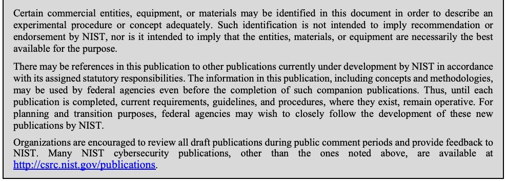
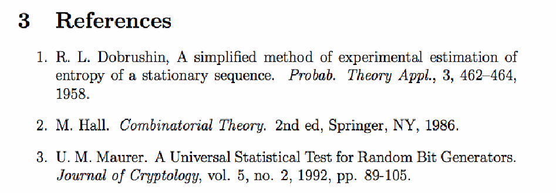

NIST IR 8040 日本語訳
英語タイトル : Measuring the Usability and Security of Permuted Passwords on Mobile Platforms日本語タイトル : モバイルプラットフォームにおける置換パスワードのユーザビリティとセキュリティの測定
公開日 : 2016-04-25
原文URL : https://csrc.nist.gov/pubs/ir/8040/final
翻訳編集 : 自動生成（有志による非公式の日本語訳）, 原文取得日 : 2026-10-31, 訳文 : 433 / 437 ブロック
[要約] NIST IR 8040 は、モバイルデバイスでの複雑なパスワード入力について、ユーザビリティとセキュリティの両面を比較するための測定方法を提案する報告書です。すでにユーザビリティのデータがあるパスワードに強度の指標を割り当てることで、より意味のある比較を行おうとしたものです。ランダムに生成したパスワードの入力をパスワードの置換で最適化する方法を報告し、置換により節約できるキーストローク数は、パスワードの長さではなく、元のパスワードで必要な画面上キーボードの切り替え回数に依存することを見いだしたとしています。また、長さ 5〜20 文字のパスワードに対するエントロピー損失の実験用の Python スクリプトを公開しています。
NISTIR 8040
NISTIR 8040
Measuring the Usability and Security of Permuted Passwords on Mobile Platforms
モバイルプラットフォームにおける置換パスワードのユーザビリティとセキュリティの測定
Kristen K. Greene
John Kelsey
Joshua M. Franklin
Kristen K. Greene
John Kelsey
Joshua M. Franklin
This publication is available free of charge from: http://dx.doi.org/10.6028/NIST.IR.8040
本刊行物は次の URL から無料で入手できます: http://dx.doi.org/10.6028/NIST.IR.8040
［NIST のロゴ。公的な標章のため、この非公式サイトには掲載していません。原本 PDF を参照してください。］
NISTIR 8040
NISTIR 8040
Measuring the Usability and Security of Permuted Passwords on Mobile Platforms
モバイルプラットフォームにおける置換パスワードのユーザビリティとセキュリティの測定
Kristen K. Greene
Information Access Division
Information Technology Laboratory
Kristen K. Greene
Information Access Division
Information Technology Laboratory
John Kelsey
Computer Security Division
Information Technology Laboratory
John Kelsey
Computer Security Division
Information Technology Laboratory
Joshua M. Franklin
Applied Cybersecurity Division
Information Technology Laboratory
Joshua M. Franklin
Applied Cybersecurity Division
Information Technology Laboratory
This publication is available free of charge from: http://dx.doi.org/10.6028/NIST.IR.8040
本刊行物は次の URL から無料で入手できます: http://dx.doi.org/10.6028/NIST.IR.8040
April 2016
2016 年 4 月
U.S. Department of Commerce
Penny Pritzker, Secretary
米国商務省
Penny Pritzker 長官
National Institute of Standards and Technology
Willie May, Under Secretary of Commerce for Standards and Technology and Director
National Institute of Standards and Technology
Willie May、NIST 所長兼商務次官（標準・技術担当）
National Institute of Standards and Technology Internal Report 8040
65 pages (April 2016)
National Institute of Standards and Technology Internal Report 8040
65 ページ（2016 年 4 月）
This publication is available free of charge from: http://dx.doi.org/10.6028/NIST.IR.8040
本刊行物は次の URL から無料で入手できます: http://dx.doi.org/10.6028/NIST.IR.8040
Certain commercial entities, equipment, or materials may be identified in this document in order to describe an experimental procedure or concept adequately. Such identification is not intended to imply recommendation or endorsement by NIST, nor is it intended to imply that the entities, materials, or equipment are necessarily the best available for the purpose.
原本PDFの抜粋画像

本書では、実験手順または概念を適切に説明するために、特定の商業事業者、機器、または資材を挙げている場合があります。そのような記載は、NIST による推奨や推薦を意味するものではなく、挙げられた事業者、資材、または機器がその目的に必ずしも最適であるとは限らないことを示しています。
There may be references in this publication to other publications currently under development by NIST in accordance with its assigned statutory responsibilities. The information in this publication, including concepts and methodologies, may be used by federal agencies even before the completion of such companion publications. Thus, until each publication is completed, current requirements, guidelines, and procedures, where they exist, remain operative. For planning and transition purposes, federal agencies may wish to closely follow the development of these new publications by NIST.
本刊行物では、NIST が法令で定められた責務に従って現在策定中の他の刊行物に言及している場合があります。概念や方法論を含む本刊行物の情報は、そうした関連刊行物の完成前であっても、連邦機関が利用してもよいです。したがって、各刊行物が完成するまでは、現行の要件、ガイドライン、手順が存在する場合は、それらが引き続き有効です。計画および移行のため、連邦機関は、NIST によるこれらの新しい刊行物の策定状況を注意深く追うことを希望する場合があります。
Organizations are encouraged to review all draft publications during public comment periods and provide feedback to NIST. Many NIST cybersecurity publications, other than the ones noted above, are available at http://csrc.nist.gov/publications.
組織は、公開意見募集の期間中にすべてのドラフト刊行物を確認し、NIST にフィードバックを提供することが推奨されます。上記以外にも、NIST のサイバーセキュリティ関連刊行物の多くが http://csrc.nist.gov/publications で入手できます。
Comments on this publication may be submitted to:
本刊行物に関する意見の提出先:
National Institute of Standards and Technology
Attn: Information Access Division, Information Technology Laboratory
100 Bureau Drive (Mail Stop 8940) Gaithersburg, MD 20899-8940
Email: nistir8040@nist.gov
National Institute of Standards and Technology
Attn: Information Access Division, Information Technology Laboratory
100 Bureau Drive (Mail Stop 8940) Gaithersburg, MD 20899-8940
Email: nistir8040@nist.gov
All comments are subject to release under the Freedom of Information Act (FOIA).
すべての意見は、情報自由法（FOIA）に基づき公開される場合があります。
Reports on Computer Systems Technology
コンピュータシステム技術に関する報告書
The Information Technology Laboratory (ITL) at the National Institute of Standards and Technology (NIST) promotes the U.S. economy and public welfare by providing technical leadership for the Nation’s measurement and standards infrastructure. ITL develops tests, test methods, reference data, proof of concept implementations, and technical analyses to advance the development and productive use of information technology. ITL’s responsibilities include the development of management, administrative, technical, and physical standards and guidelines for the cost-effective security and privacy of other than national security-related information in Federal information systems.
National Institute of Standards and Technology（NIST）の Information Technology Laboratory（ITL）は、米国の測定・標準基盤に対する技術的リーダーシップを提供することにより、米国経済と公共の福祉を促進しています。ITL は、情報技術の発展と生産的な利用を推進するために、テスト、テスト方法、参照データ、概念実証の実装、および技術分析を開発しています。ITL の責務には、連邦情報システムにおける国家安全保障関連以外の情報について、費用対効果の高いセキュリティとプライバシーを実現するための管理上、運用上、技術上、物理上の標準およびガイドラインの策定が含まれます。
Abstract
要旨
Password entry on mobile devices significantly impacts both usability and security, but there is a lack of usable security research in this area, specifically for complex password entry. To address this research gap, we set out to assign strength metrics to passwords for which we already had usability data, in an effort to have a more meaningful comparison between usability and security. This document reports a method of optimizing the input of randomly generated passwords on mobile devices via password permutation to allow for a comparison of password usability data. We found that the number of keystrokes saved—the efficiency gained—via permutation depends on the number of onscreen keyboard changes required in the original password rather than on password length. Additionally, we created and are releasing Python scripts (publicly available from https://github.com/usnistgov/PasswordMetrics) for the experiments on entropy loss we conducted across passwords ranging in length from 5 to 20 characters.
モバイルデバイスでのパスワード入力は、ユーザビリティとセキュリティの両方に大きな影響を与えますが、この分野、特に複雑なパスワードの入力に関するユーザブルセキュリティの研究は不足しています。この研究上の空白に対処するため、ユーザビリティとセキュリティをより有意義に比較することを目的として、すでにユーザビリティのデータがあるパスワードに強度の指標を割り当てることにしました。本書は、パスワードの順列化によって、ランダムに生成されたパスワードのモバイルデバイスでの入力を最適化し、パスワードのユーザビリティデータを比較できるようにする方法を報告します。順列化によって節約されるキーストローク数、すなわち得られる効率は、パスワードの長さではなく、元のパスワードで必要となる画面上のキーボードの切り替え回数に依存することがわかりました。さらに、長さが 5 文字から 20 文字までのパスワードを対象に実施したエントロピー損失の実験について、Python スクリプトを作成し、公開しています（https://github.com/usnistgov/PasswordMetrics から公開されています）。
Keywords
キーワード
authentication; mobile devices; onscreen keyboards; password entry; password generation; password permutation; security-usability balance; text entry; usable security
認証、モバイルデバイス、画面上のキーボード、パスワード入力、パスワード生成、パスワード置換、セキュリティとユーザビリティのバランス、テキスト入力、ユーザブルセキュリティ
Acknowledgments
謝辞
The authors wish to thank their colleagues who reviewed drafts of this report and contributed to its technical content, including Sharon Laskowski, Kerry McKay, Ray Perlner, Andrew Regenscheid, Mary Theofanos, and Meltem Sönmez Turan of NIST. Thank you to Kenneth Thompson and others for assistance with obtaining screenshots of mobile platforms. A very special thanks to Jim Filliben and Andrew Rukhin for their mathematical consultation, and especially to Andrew for his formulas presented in Appendix D.
著者は、本報告書の草稿をレビューし、その技術的内容に貢献してくださった同僚、NIST の Sharon Laskowski、Kerry McKay、Ray Perlner、Andrew Regenscheid、Mary Theofanos、Meltem Sönmez Turan の各氏に感謝します。モバイルプラットフォームのスクリーンショットの入手に協力してくださった Kenneth Thompson 氏をはじめとする方々にも感謝します。数学面での助言をいただいた Jim Filliben 氏と Andrew Rukhin 氏、とりわけ付録 D に示した公式を提供してくださった Andrew 氏に、特別な感謝を申し上げます。
Audience
想定読者
This document is intended for those researchers in the usable security field, regardless of whether their background is primarily usability or primarily security.
本書は、バックグラウンドが主にユーザビリティであるか主にセキュリティであるかを問わず、ユーザブルセキュリティ分野の研究者を対象としています。
Trademark Information
商標情報
All product names are registered trademarks or trademarks of their respective companies.
すべての製品名は、それぞれの会社の登録商標または商標です。
Table of Contents
目次
List of Appendices
付録の一覧
List of Figures
図の一覧
List of Tables
表の一覧
1 Introduction
1 はじめに
Passwords are rarely lauded as an effective authentication mechanism, yet their use is widespread. Since their inception, passwords have been a bane to the individuals using them. Users constantly forget and reset passwords. Organizations attempt to ensure that users’ passwords meet minimum complexity requirements and are periodically changed as often as deemed necessary. Building upon these problems, scores of password databases have been exfiltrated from various websites since electronic commerce became commonplace. These leaked password datasets, combined with specialized hardware, provide an optimum environment to make modern password cracking software effective and efficient.
パスワードは、効果的な認証メカニズムとして称賛されることはまれですが、その利用は広く普及しています。パスワードは誕生以来、それを使う人々にとって悩みの種でした。ユーザーはパスワードを絶えず忘れ、再設定しています。組織は、ユーザーのパスワードが最低限の複雑さの要件を満たし、必要と考えられる頻度で定期的に変更されるようにしようとします。さらにこれらの問題に加えて、電子商取引が一般的になって以降、さまざまな Web サイトから多数のパスワードデータベースが外部へ持ち出されてきました。漏えいしたこれらのパスワードデータセットは、専用のハードウェアと組み合わさることで、現代のパスワードクラッキングソフトウェアを効果的かつ効率的にするうえで最適な環境をもたらします。
The introduction of mobile computing platforms further complicates these issues, since the traditional problems of authenticating via passwords are transferred to mobile devices. Given the ubiquity of mobile devices and the need to use passwords on these systems, it is critical that we understand their security, usability, and any potential tradeoffs associated with this smaller form factor. While in an ideal world, there would be no tradeoffs between security and usability, in the real world, there often are (with security requirements historically trumping usability considerations, although recognition of the importance of usability is growing).
モバイルコンピューティングプラットフォームの登場は、パスワードによる認証という従来の問題がモバイルデバイスに持ち込まれるため、これらの問題をさらに複雑にしています。モバイルデバイスが普及し、それらのシステムでパスワードを使う必要がある以上、パスワードのセキュリティとユーザビリティ、およびこの小さなフォームファクタに伴うトレードオフを理解することが不可欠です。理想的な世界ではセキュリティとユーザビリティの間にトレードオフはありませんが、現実の世界ではトレードオフがしばしば存在します（歴史的にはセキュリティ要件がユーザビリティの考慮事項に優先してきましたが、ユーザビリティの重要性に対する認識は高まっています）。
1.1 Purpose and Scope
1.1 目的と範囲
This document proposes a measurement method for quantifying the effects on security resulting from optimizing the usability of password entry specifically for constrained input environments, i.e., the mobile touchscreen. Password entry on mobile devices significantly impacts input errors and time to completion, in large part due to device constraints such as smaller keys and lack of tactile feedback (as opposed to a desktop keyboard where it is possible to feel individual keys and thus type purely by touch). While such mobile device constraints impact general text entry tasks as well, there are certain issues unique to the entry of complex, randomly generated passwords due to their inclusion of numbers and symbols, which are located on different onscreen keyboards.
本書は、特に入力環境が制約されている場合、すなわちモバイルのタッチスクリーンでのパスワード入力のユーザビリティを最適化した結果として生じるセキュリティへの影響を定量化するための、測定方法を提案します。モバイルデバイスでのパスワード入力は、キーが小さいことや触覚フィードバックがないこと（個々のキーを指で感じ取れるため、触覚だけでタイプできるデスクトップのキーボードとは対照的です）といったデバイスの制約により、入力ミスと完了までの時間に大きな影響を与えます。このようなモバイルデバイスの制約は一般的なテキスト入力のタスクにも影響しますが、複雑でランダムに生成されたパスワードの入力には、数字や記号が含まれ、それらが別々の画面上のキーボードにあるために生じる、特有の問題があります。
Our larger purpose is twofold: 1) explore the current state of both usability and security metrics applicable to passwords, and 2) discuss our experiences in attempting to use these metrics in a real world situation. Our specific initial goal was to assign strength metrics to passwords for which we already had usability metrics, in an effort to have a more meaningful comparison between the two. Too often, "usable security" research is primarily performed from a single dominant perspective (i.e., focused on security or focused on usability, but rarely both) depending on the background of the researchers. This research attempts to provide more equitable treatment of the usability and security aspects of the problem at hand in an effort to have a true usable security project.
私たちのより大きな目的は 2 つあります。1) パスワードに適用できるユーザビリティの指標とセキュリティの指標の現状を調べること、2) 現実の状況でこれらの指標を使おうとした経験を論じること。私たちの当面の具体的な目標は、すでにユーザビリティの指標があるパスワードに強度の指標を割り当て、両者をより有意義に比較することでした。「ユーザブルセキュリティ」の研究は、研究者のバックグラウンドに応じて、単一の支配的な観点（すなわちセキュリティに焦点を当てるか、ユーザビリティに焦点を当てるかで、両方に焦点を当てることはまれ）から行われることがあまりにも多くあります。本研究は、真のユーザブルセキュリティプロジェクトとなるよう、取り組んでいる問題のユーザビリティの側面とセキュリティの側面をより公平に扱おうとするものです。
1.2 Document Structure
1.2 文書の構成
In order to assess both the usability and security of system-generated passwords pre- and post-permutation, it is necessary to first define the metrics and measurement methodology for usability and security. This document begins with a discussion of the keyboard of multiple mobile platforms, exploring what makes them distinct from their desktop counterparts. This is followed by a discussion of usability and security measures and terminology, followed by an explanation of why password permutation would increase usability while decreasing security. We include our methodology to explore the question "how much security is lost as a result of permuting system-generated passwords for mobile devices?" The methodology section includes a practical means of answering the question via Monte Carlo simulations.
システムが生成したパスワードの置換前と置換後のユーザビリティとセキュリティの両方を評価するには、まずユーザビリティとセキュリティの指標と測定方法論を定義する必要があります。本書は、複数のモバイルプラットフォームのキーボードを取り上げ、それらがデスクトップのキーボードとどう異なるのかを検討することから始めます。続いて、ユーザビリティとセキュリティの尺度と用語を論じ、そのうえで、パスワードの置換がユーザビリティを高める一方でセキュリティを低下させる理由を説明します。方法論には、「モバイルデバイス向けにシステムが生成したパスワードを置換した結果、どれだけのセキュリティが失われるか」という問いを探る方法を含めます。方法論の節には、モンテカルロシミュレーションによってこの問いに答える実用的な手段が含まれます。
The mathematical formulas by which one could derive the true mathematical probability answer are included in Appendix D. In the results section, we present metrics for both the original (non-permuted) passwords and the permuted passwords. We also present metrics from an entirely new set of randomly generated passwords created with a program developed in-house (all code available at https://github.com/usnistgov/PasswordMetrics). Finally, we conclude with discussion of the larger issues and misconceptions we uncovered during the course of this project.
真の数学的確率の答えを導出するための数式は、付録 D に掲載しています。結果の節では、元の（置換していない）パスワードと、置換したパスワードの両方について指標を示します。また、社内で開発したプログラムを使って作成した、まったく新しいランダムパスワードのセットについても指標を示します（コードはすべて https://github.com/usnistgov/PasswordMetrics で入手できます）。最後に、本プロジェクトの過程で明らかになった、より大きな問題と誤解について論じて結びます。
1.3 Document Conventions
1.3 文書の表記
The following conventions are used throughout the Interagency Report:
本機関間報告書では、全体を通して次の表記を用います。
•All references to NIST Special Publication (SP) 800-63 are references to NIST SP 800-63-2 [9].
•NIST Special Publication（SP）800-63 への言及はすべて、NIST SP 800-63-2 [9] への言及です。
•Note that NIST SP 800-63 refers to user selected and randomly selected passwords. However, as this could imply that users are selecting passwords from a list of provided passwords, we instead use the terms user generated and randomly generated in this document. Within the context of this document, we use the terms randomly generated and system generated interchangeably to describe passwords that were created algorithmically or by other password generation software.
•NIST SP 800-63 は、ユーザーが選択するパスワードとランダムに選択されるパスワードに言及しています。しかし、これはユーザーが提示された一覧からパスワードを選ぶという意味に取られかねないため、本書では代わりにユーザー生成とランダム生成という用語を用います。本書の文脈では、アルゴリズムまたはその他のパスワード生成ソフトウェアによって作成されたパスワードを表すために、ランダム生成とシステム生成を同じ意味で用います。
•Unless otherwise noted, all text and figures that refer to iOS keyboards refer to iOS 8. Android keyboards were taken from Android 5.0 (Lollipop). Windows Phone keyboards were taken from Windows Phone 8.1.
•特に断りのない限り、iOS のキーボードに言及するすべての文章と図は iOS 8 を指します。Android のキーボードは Android 5.0（Lollipop）のもの、Windows Phone のキーボードは Windows Phone 8.1 のものです。
•Passwords included in-line with the text are italicized and are not offset with double quotation marks (“ ”). The authors believed that using quotation marks would have caused confusion since it is possible for quotation marks to be included as part of a password.
•本文中にそのまま記載するパスワードは斜体で示し、二重引用符（“ ”）では囲みません。パスワードの一部として引用符が含まれる可能性があるため、引用符を使うと混乱を招くと著者らは考えました。
2 Exploring Mobile Platforms
2 モバイルプラットフォームの調査
2.1 Literature Review
2.1 文献レビュー
In our experience, there is a misconception that both sides of the usable security field can easily acquire data, assign metrics, and analyze the data. This work should assist individuals of the usable security community in understanding the challenges both sides face. For instance, some may believe that assigning security metrics to passwords is a solved problem, when in reality there is a menagerie of open research questions.
私たちの経験では、ユーザブルセキュリティ分野の双方が、データの取得、指標の割り当て、データの分析を容易に行えるという誤解があります。本研究は、ユーザブルセキュリティのコミュニティの人々が、双方が直面する課題を理解する助けとなるはずです。たとえば、パスワードにセキュリティの指標を割り当てることは解決済みの問題だと考える人がいるかもしれませんが、実際には未解決の研究課題が数多くあります。
Although we set out simply to measure the loss in security versus the gain in usability for passwords that were permuted to be more "mobile device friendly," we believe we achieved much more than our initial measurement goal. By having usability and security experts working so closely together on this project, we uncovered several important—and likely widespread—misunderstandings experts from one field initially held about the other field; we identified core concepts and vocabulary that are fundamental to each field's measurement methodology, yet were initially foreign or only vaguely understood by the other field. We hope this report can serve as a type of primer or refresher for each field to learn more about the other, in an effort to foster more informed dialogue and facilitate better collaboration between experts with differing backgrounds.
私たちは当初、「モバイルデバイスに適した」ものになるよう置換したパスワードについて、セキュリティの損失とユーザビリティの向上を測定しようとしただけですが、当初の測定目標をはるかに超える成果が得られたと考えています。ユーザビリティの専門家とセキュリティの専門家が本プロジェクトで緊密に協力したことで、一方の分野の専門家が他方の分野について当初抱いていた、重要で、おそらく広く見られる誤解がいくつか明らかになりました。また、各分野の測定方法論の基本となる中核的な概念と語彙のうち、他方の分野には当初なじみがない、またはおぼろげにしか理解されていないものを特定しました。本報告書が、各分野が他方について学ぶための入門書または復習資料のような役割を果たし、より理解に基づく対話を促し、異なるバックグラウンドを持つ専門家の間のより良い協力を促進することを期待しています。
We permuted passwords from prior mobile usability research [1] and calculated the theoretical entropy lost as a result of grouping character classes (i.e., uppercase, lowercase, numbers, symbols) together within a password. By rearranging/grouping the password contents in this way, it reduces the number of keystrokes required to enter the password (see Table 2), since the user does not have to continually switch back and forth between three different onscreen keyboards (see Figure 2). We know unequivocally that for at least one facet of usability (efficiency), the permuted passwords are better. On the other hand, this restructuring of password contents obviously decreases security by adding predictable structure: in the permuted passwords, uppercase letters are always first, followed by lowercase letters, numbers, and finally symbols.
私たちは、これまでのモバイルのユーザビリティ研究 [1] のパスワードを置換し、パスワード内で文字の種類（すなわち大文字、小文字、数字、記号）をまとめたことで失われる理論上のエントロピーを計算しました。パスワードの内容をこのように並べ替え、まとめることで、パスワードの入力に必要なキーストローク数が減ります（表 2 を参照してください）。ユーザーが 3 つの異なる画面上のキーボードの間を絶えず行き来する必要がなくなるためです（図 2 を参照してください）。ユーザビリティの少なくとも 1 つの側面（効率）については、置換したパスワードのほうが優れていることが疑いなくわかっています。一方で、パスワードの内容をこのように再構成することは、予測可能な構造を加えることでセキュリティを明らかに低下させます。置換したパスワードでは、常に大文字が最初に、続いて小文字、数字、最後に記号が並びます。
We argue that only by empirically quantifying the security-usability tradeoff can we hope to measure and understand effects of changing passwords along either or both dimensions. Although alternative—and arguably better—mobile authentication mechanisms exist [2], the unfortunate reality is that passwords are too deeply ingrained in our current digital world to be fully replaced in the near term. In the longer term, research efforts such as the National Strategy for Trusted Identities in Cyberspace (NSTIC) aim to ultimately replace passwords as a primary authentication mechanism [3]. In the interim, however, our work is focused on evaluating ways to improve password usability for mobile devices without an unacceptably large sacrifice to security.
セキュリティとユーザビリティのトレードオフを実証的に定量化して初めて、パスワードをどちらかの次元、または両方の次元で変更した影響を測定し、理解できると私たちは主張します。代替となる、おそらくより優れたモバイル認証メカニズムは存在しますが [2]、残念ながら現実には、パスワードは現在のデジタル世界に深く根付いており、近い将来に完全に置き換えることはできません。より長期的には、National Strategy for Trusted Identities in Cyberspace（NSTIC）のような研究の取り組みが、最終的にパスワードを主要な認証メカニズムとして置き換えることを目指しています [3]。ただし当面は、セキュリティを許容できないほど大きく犠牲にすることなく、モバイルデバイスでのパスワードのユーザビリティを向上させる方法を評価することに、私たちの作業の焦点を置いています。
2.2 Background
2.2 背景
The stimuli we used for this effort were taken from a set of passwords reported in a recent behavioral study on mobile password entry for complex, system-generated passwords [1], which was a replication of a desktop password entry study [4]. In both studies, participants had to learn and enter 10 complex, system-generated passwords 10 times each, then complete a surprise recall test; their entry times, error frequencies, and recall failures were recorded. The 10 passwords used in those studies ranged in length from 6 to 14 characters, and were generated using the Advanced Password Generator from BinaryMark1 with the following password policy rules: must consist of at least one upper-case character, one lower case character, one number, and one special character, cannot begin with an upper-case character, nor end with an exclamation mark. In addition to the 10 passwords (see Table 2) from previous studies, we also used new randomly generated passwords via a program developed in-house (see Section 5.1 for details).
本作業で使った刺激は、複雑なシステム生成パスワードのモバイル入力に関する最近の行動実験 [1] で報告されたパスワードの組から取りました。この研究は、デスクトップでのパスワード入力の研究 [4] の追試でした。どちらの研究でも、参加者は複雑なシステム生成パスワードを 10 個学習して、それぞれ 10 回入力し、その後、予告なしの想起テストを受けました。入力時間、エラー頻度、想起の失敗が記録されました。これらの研究で使われた 10 個のパスワードの長さは 6 文字から 14 文字で、次のパスワードポリシー規則に従い、BinaryMark1 のAdvanced Password Generatorを用いて生成されました。少なくとも 1 つの大文字、1 つの小文字、1 つの数字、1 つの特殊文字を含み、大文字で始まらず、感嘆符で終わらないこと。以前の研究の 10 個のパスワード（表 2 を参照してください）に加えて、社内で開発したプログラムで新たにランダム生成したパスワードも使いました（詳細は 5.1 節を参照してください）。
Prior work [1] suggested that the combination of complex password requirements and mobile keyboard constraints seems to result in emergent cognitive costs associated with the interruptive nature of transitioning back and forth between multiple onscreen keyboards. This implies that rearranging complex passwords to minimize the number of onscreen keyboard changes required should increase their usability on mobile devices, but at what cost to security?
先行研究 [1] は、複雑なパスワード要件とモバイルキーボードの制約が組み合わさることで、複数の画面上のキーボードの間を行き来するという中断的な性質に伴う、創発的な認知コストが生じるように見えると示唆しています。これは、必要な画面上のキーボードの切り替え回数が最小になるように複雑なパスワードを並べ替えれば、モバイルデバイスでのユーザビリティが高まるはずだということを意味しますが、セキュリティにはどれだけの代償があるのでしょうか。
The work presented in [1] was focused on iOS devices only (using an iPhone 4S and iPad II both running iOS 6), and did not compare alternate mobile platforms such as Android or Windows, nor did it include a direct (i.e., within-subjects) comparison with desktop computers. Such comparisons may ultimately be necessary to better understand the interaction of password policy and device-specific constraints, and to understand the ramifications of using the same policy in vastly different computing environments (mobile vs. traditional desktop).
[1] の研究は iOS デバイスのみに焦点を当てており（iOS 6 を実行する iPhone 4S と iPad II を使用）、Android や Windows などの別のモバイルプラットフォームは比較していません。また、デスクトップコンピュータとの直接の（すなわち被験者内の）比較も含んでいません。こうした比較は、パスワードポリシーとデバイス固有の制約との相互作用をよりよく理解し、大きく異なる計算環境（モバイル対従来のデスクトップ）で同じポリシーを使うことの影響を理解するために、最終的には必要になるかもしれません。
In sharp contrast to the standard desktop QWERTY keyboard layout [18], there is no de facto onscreen keyboard for mobile touchscreen devices.2 While a standard onscreen keyboard layout may not be necessary, the variability in onscreen keyboard sizes, layouts, and functionality complicates mobile password research, at least where randomly generated passwords are concerned. Onscreen keyboards vary widely between manufacturers and operating systems, but may also vary between devices with the same operating system. For instance, there are symbols, such as , . ? ! available on the primary iPad alphabetic keyboard that are unavailable on the corresponding iPhone alphabetic keyboard in Figure 1.3
標準的なデスクトップの QWERTY キーボード配列 [18] とは大きく対照的に、モバイルのタッチスクリーンデバイスには事実上の標準となる画面上のキーボードがありません。2 標準的な画面上のキーボード配列は必要ないのかもしれませんが、画面上のキーボードの大きさ、配列、機能にばらつきがあることは、少なくともランダム生成パスワードに関しては、モバイルでのパスワード研究を複雑にします。画面上のキーボードは、製造者や OS によって大きく異なるだけでなく、同じ OS のデバイス間でも異なる場合があります。たとえば、図 1 では、iPad の主要な英字キーボードにある , . ? ! などの記号が、対応する iPhone の英字キーボードにはありません。3
［第三者の画像。第三者の著作物のため、この非公式サイトには掲載していません。原本 PDF を参照してください。］
Figure 1 - Demonstrating the differences between mobile keyboards of the same OS
図 1 - 同じ OS のモバイルキーボード間の違いの例示
Regardless of specific device, there are some very high-level commonalities between onscreen keyboards as shown in Figure 2. While exact layouts differ, there is some basic similarity in the sense that they follow a core pattern of three keyboards—roughly containing letters, numbers, and symbols—that users must navigate between, as only one keyboard is displayed at a time.
具体的なデバイスにかかわらず、図 2 に示すように、画面上のキーボードの間には、非常に高い水準での共通点がいくつかあります。正確な配列は異なるものの、おおむね文字、数字、記号を含む 3 つのキーボードという中核的なパターンに従い、ユーザーがその間を移動しなければならない（一度に表示されるキーボードは 1 つだけであるため）という点で、基本的な類似性があります。
［第三者の画像。第三者の著作物のため、この非公式サイトには掲載していません。原本 PDF を参照してください。］
Figure 2 - Keyboard screen depths on modern mobile operating systems
図 2 - 現代のモバイルオペレーティングシステムにおけるキーボード画面の深さ
Another high-level similarity is the inclusion of press-and-hold functionality, shown in Figure 3, where a sustained keypress brings up additional character options. Although this press-and-hold key option may not be obvious to users, the issue of hidden functionality is not unique to onscreen keyboards, or even mobile devices—hidden functionality is an issue in desktop computing as well. Note that on the Android keyboard, the press-and-hold functionality for the top row of letters (q, w, e, r, t, y, u, i, o, p) allows one to access numbers (1, 2, 3, 4, 5, 6, 7, 8, 9, 0). There is even a visible indication of those keys' functionality— note the small numbers in the upper right corner of the aforementioned Android letter keys.
もう 1 つの大まかな類似点は、図 3 に示す長押し機能を備えていることです。キーを押し続けると、追加の文字の選択肢が表示されます。この長押しのキー操作はユーザーにとって明白ではないかもしれませんが、隠れた機能の問題は画面上のキーボードやモバイルデバイスに特有のものではなく、デスクトップコンピューティングでも問題になります。Android のキーボードでは、上段の文字（q、w、e、r、t、y、u、i、o、p）の長押し機能により、数字（1、2、3、4、5、6、7、8、9、0）にアクセスできます。これらのキーの機能は目に見える形でも示されています。前述の Android の文字キーの右上隅にある小さな数字に注目してください。
［第三者の画像。第三者の著作物のため、この非公式サイトには掲載していません。原本 PDF を参照してください。］
Figure 3 - Press-and-hold functionality on mobile keyboards
図 3 - モバイルキーボードの長押し機能
Although they are not actual letter keys, there are two keys on the iPad letter keyboard that do have visible indicators of their alternate functionality. These are the previously mentioned comma/exclamation mark key, and the period/question mark key, but note that the secondary characters are not accessed via press-and-hold, but rather by a single tap on the shift key (see Figure 1).
実際の文字キーではありませんが、iPad の文字キーボードには、別の機能が目に見える形で示されているキーが 2 つあります。これらは、前述のカンマ/感嘆符キーとピリオド/疑問符キーですが、2 番目の文字は長押しではなく、シフトキーを 1 回タップすることで入力することに注意してください（図 1 を参照してください）。
3 Password Usability Background
3 パスワードのユーザビリティの背景
Note to readers: Although this section may be a review of core concepts already well understood by usability practitioners, many of the concepts described below are new for those usable security researchers coming from the field of computer security.
読者へのお知らせ: 本節は、ユーザビリティの実務者にはすでによく知られている中核的な概念の復習かもしれませんが、以下に述べる概念の多くは、コンピュータセキュリティの分野から来たユーザブルセキュリティの研究者にとっては新しいものです。
In this section we first provide an overview of the standard definition of usability and its components. This is followed by more detailed discussion of each of the facets of usability, as well as examples of usability measurement specifically as it pertains to passwords.
本節では、まずユーザビリティの標準的な定義とその構成要素の概要を示します。続いて、ユーザビリティの各側面をより詳しく論じ、特にパスワードに関連するユーザビリティ測定の例を示します。
While there is an international standard for the definition of product usability [5], there is no corresponding standard definition of password usability; we are by no means suggesting that there should be one, for the standard definition of usability suffices as-is. Although the traditional definition of usability was developed in the context of product evaluation and testing, its wider applicability and adaptability should be clear from the following section(s).
製品のユーザビリティの定義には国際標準 [5] がありますが、パスワードのユーザビリティの定義に対応する標準はありません。標準が必要だと示唆するつもりは決してありません。ユーザビリティの標準的な定義でそのまま十分だからです。従来のユーザビリティの定義は製品の評価とテストの文脈で作られましたが、その適用範囲の広さと適応性は、以下の節から明らかなはずです。
Usability is defined as "the extent to which a product can be used by specified users to achieve specified goals with effectiveness, efficiency and satisfaction in a specified context of use. [5]" Effectiveness, efficiency, and satisfaction are measurable attributes that combine to form the larger construct of usability. The former measures (effectiveness and efficiency) are the objective usability metrics, while the latter (satisfaction) is more subjective; this objective/subjective distinction is often referred to as "preference versus performance," where preference refers to satisfaction, and performance refers to effectiveness and efficiency. All three—effectiveness, efficiency, and satisfaction—have well-defined general methods of measurement, which can be tailored specifically for measuring usability in a particular task domain, such as for password entry tasks.
ユーザビリティは、"特定の利用状況において、特定のユーザーが特定の目標を、有効性、効率、満足度をもって達成するために、製品を使用できる度合い [5]" と定義されます。有効性、効率、満足度は測定可能な属性であり、それらが組み合わさってユーザビリティというより大きな構成概念を形成します。前者の尺度（有効性と効率）は客観的なユーザビリティの指標であり、後者（満足度）はより主観的です。この客観と主観の区別は、しばしば「選好対パフォーマンス」と呼ばれ、選好は満足度を、パフォーマンスは有効性と効率を指します。有効性、効率、満足度の 3 つはいずれも、明確に定義された一般的な測定方法があり、パスワード入力のタスクなど、特定のタスク領域でのユーザビリティの測定に合わせて調整できます。
Finally, it should be noted that objective and subjective usability are not always correlated with one another; there can be disagreement between performance versus preference [6].
最後に、客観的なユーザビリティと主観的なユーザビリティは必ずしも相関しないことに注意すべきです。パフォーマンスと選好の間に不一致が生じる場合があります [6]。
As defined in ISO 9241 [5]:
ISO 9241 [5] の定義は次のとおりです。
Usability: The extent to which a product can be used by specified users to achieve specified goals with effectiveness, efficiency and satisfaction in a specified context of use.
ユーザビリティ: 特定の利用状況において、特定のユーザーが特定の目標を、有効性、効率、満足度をもって達成するために、製品を使用できる度合い。
Effectiveness: Accuracy and completeness with which users achieve specified goals.
有効性: ユーザーが特定の目標を達成する際の正確さと完全さ。
Efficiency: Resources expended in relation to the accuracy and completeness with which users achieve goals.
効率: ユーザーが目標を達成する際の正確さと完全さに関連して費やされる資源。
Satisfaction: Freedom from discomfort, and positive attitudes towards the use of the product.
満足度: 不快感がないこと、および製品の使用に対する肯定的な態度。
Context of use: Users, tasks, equipment (hardware, software and materials), and the physical and social environments in which a product is used.
利用状況: 製品が使用される際の、ユーザー、タスク、機器（ハードウェア、ソフトウェア、資材）、および物理的・社会的環境。
User: Person who interacts with the product.
ユーザー: 製品と対話する人。
Goal: Intended outcome.
目標: 意図した成果。
Task: Activities required to achieve a goal. Note that activities can be physical or cognitive.
タスク: 目標を達成するために必要な活動。活動は身体的なものでも認知的なものでもよいことに注意してください。
Product: Part of the equipment (hardware, software and materials) for which usability is to be specified or evaluated.
製品: ユーザビリティを規定または評価する対象となる機器（ハードウェア、ソフトウェア、資材）の一部。
Mapping measures of effectiveness, efficiency, and satisfaction to password entry tasks is straightforward with a solid understanding of general usability. Effectiveness can be measured as the number (and class) of errors a user made during password entry, while efficiency can be measured as the time taken by a user to enter a password. Satisfaction can be measured via post-task questionnaires.
有効性、効率、満足度の尺度をパスワード入力タスクに対応づけることは、一般的なユーザビリティをしっかり理解していれば容易です。有効性は、ユーザーがパスワード入力中に犯したエラーの数（と種類）として測定でき、効率は、ユーザーがパスワードを入力するのにかかった時間として測定できます。満足度は、タスク後のアンケートで測定できます。
As with many dependent variables, usability can be measured at different levels of granularity, some of which can only be captured in the laboratory setting. Offering the capability for such granular measurement is an important advantage and contribution of conducting laboratory experiments; some of the measures described in subsequent sections would be impossible to capture outside of the laboratory. The following focuses heavily on measures of effectiveness since errors are arguably most important in terms of password entry; while it is common for users to be locked out of their accounts due to too many erroneous login attempts, it is relatively rare for a user to be locked out for typing too slowly.
多くの従属変数と同様に、ユーザビリティはさまざまな粒度で測定でき、その一部は実験室環境でしか取得できません。このような細かい粒度での測定を可能にすることは、実験室実験を行う重要な利点であり貢献です。後続の節で述べる尺度の一部は、実験室の外では取得できません。以下では、パスワード入力ではエラーがおそらく最も重要であるため、有効性の尺度に重点を置きます。誤ったログイン試行が多すぎてアカウントがロックされることはよくありますが、入力が遅すぎてロックされることは比較的まれです。
In 1999, Adams and Sasse [7] identified usability characteristics that users desire of passwords: easy to remember, able to be used across multiple systems, and rarely change. However, these are usability characteristics at a higher level, and not usability metrics at the level of granularity appropriate for measuring usability of passwords in the context of individual password entry tasks (i.e., password typing tasks) per se, which is the focus of the current work. The following subsections describe how usability can be measured at different levels of granularity specifically in the context of password entry tasks.
1999 年に Adams と Sasse [7] は、ユーザーがパスワードに望むユーザビリティの特性として、覚えやすいこと、複数のシステムで使えること、ほとんど変更しなくてよいことを挙げました。しかし、これらはより高い水準のユーザビリティの特性であり、本研究の焦点である、個々のパスワード入力タスク（すなわちパスワードのタイピングのタスク）そのものの文脈でパスワードのユーザビリティを測定するのに適した粒度の、ユーザビリティの指標ではありません。以下の小節では、パスワード入力タスクの文脈に特化して、ユーザビリティをさまざまな粒度でどのように測定できるかを述べます。
3.1 Effectiveness
3.1 有効性
Effectiveness: Accuracy and completeness with which users achieve specified goals. [5]
有効性: ユーザーが特定の目標を達成する際の正確さと完全さ。[5]
In general usability research, effectiveness is typically measured via error rates, which can be captured at a high level (e.g., overall rates of task completion/success versus failure), intermediate level (e.g., per subtask errors), and/or very detailed low-level (e.g., per keystroke or per mouseclick errors). Beyond simply counting the number of errors made relative to the number of opportunities for error, it is also critical to identify the specific nature of the error, and if possible, its root cause.
一般的なユーザビリティ研究では、有効性は通常、エラー率で測定されます。エラー率は、高い水準（たとえばタスクの完了・成功と失敗の全体的な割合）、中間の水準（たとえばサブタスクごとのエラー）、または非常に詳細な低い水準（たとえばキーストロークごと、マウスクリックごとのエラー）で取得できます。エラーが起こりうる機会の数に対して犯されたエラーの数を数えるだけでなく、エラーの具体的な性質、可能であればその根本原因を特定することも重要です。
For password entry specifically, effectiveness can be measured in multiple ways, at the password level and at the character level. At the password level, effectiveness can be measured via per-password login failure rates. At the more granular character level, effectiveness can be measured via per-keystroke errors.
パスワード入力に特化すると、有効性は、パスワードの水準と文字の水準で、複数の方法で測定できます。パスワードの水準では、有効性はパスワードごとのログイン失敗率で測定できます。より細かい文字の水準では、有効性はキーストロークごとのエラーで測定できます。
Measuring only overall login failure rates is most analogous to the real world (when as long as a password contains at least one error, login fails), yet this level of measurement ignores rich and important information regarding the cause behind a login failure. Measuring effectiveness at the password level as only a binary success/failure would ignore both the number and nature of errors committed during password entry; it would also not capture any corrective actions taken by a user.
全体的なログイン失敗率だけを測定することは、現実世界に最も近い方法です（パスワードに 1 つでもエラーが含まれていれば、ログインは失敗します）。しかし、この水準の測定では、ログイン失敗の原因に関する豊富で重要な情報が無視されます。パスワードの水準で有効性を二値の成功・失敗としてのみ測定すると、パスワード入力中に犯されたエラーの数と性質の両方が無視されます。また、ユーザーが行った修正操作も取得できません。
As both the frequency and nature of errors can differ greatly by device, it is much more informative to also measure effectiveness at the individual character level by capturing per-keystroke errors. Categorizing the nature of the error at an individual character level has been done in text entry research for decades. Although password entry does differ from traditional transcription typing tasks (e.g., where the use of numbers and symbols is rare) commonly used in text entry research, it still makes sense to use the error classification from that field. Not only do passwords—specifically user generated ones—often contain mostly letters, but the traditional text entry error categories (e.g., transposition, omission) largely apply regardless of whether the characters are letters, numbers, or symbols.
エラーの頻度と性質はデバイスによって大きく異なる場合があるため、キーストロークごとのエラーを取得して、個々の文字の水準でも有効性を測定すると、はるかに多くの情報が得られます。個々の文字の水準でエラーの性質を分類することは、テキスト入力の研究で数十年にわたり行われてきました。パスワード入力は、テキスト入力の研究でよく用いられる従来の書き写しのタイピングタスク（数字や記号の使用がまれなもの）とは異なりますが、その分野のエラー分類を用いることには意味があります。パスワード、特にユーザーが生成したものは文字だけを含む場合が多いだけでなく、従来のテキスト入力のエラー分類（たとえば入れ替え、脱落）は、文字、数字、記号のいずれであるかにかかわらず、おおむね当てはまります。
Ref. [1] categorized errors at this level based on the common classes of errors used in text entry research as well as the frequency of certain errors found in that particular experiment. If duplicate or additional characters were entered into a password field, they were categorized as Extra Character errors. If characters were omitted from entry, they were categorized as Missing Character errors. There were four classes of substitution errors: substitution of the correct character with an Incorrectly Shifted character, with a Wrong Character, or with an Adjacent Key character (i.e., a character adjacent to it on the keyboard), and finally, substitution of the letter "o" for the number zero and vice versa (although this particular error could also be categorized as a Wrong Character error, its high frequency of occurrence warranted its own category).
文献 [1] は、テキスト入力の研究で用いられる一般的なエラーの分類と、その実験で見られた特定のエラーの頻度に基づいて、この水準でエラーを分類しました。パスワード欄に重複した文字または余分な文字が入力された場合は、余分な文字エラーに分類されました。文字が入力されなかった場合は、文字欠落エラーに分類されました。置換エラーには 4 つの種類がありました。正しい文字を、誤ってシフトされた文字に置き換えた場合、誤った文字に置き換えた場合、隣接キーの文字（すなわちキーボード上で隣り合う文字）に置き換えた場合、そして最後に、英字の「o」を数字のゼロに、またはその逆に置き換えた場合です（この特定のエラーも誤った文字エラーに分類できますが、発生頻度が高いため、独自の分類としました）。
Why is it important to capture such granular error data? Why bother to categorize individual character errors in this manner? Only by understanding the nature of the errors can we determine exactly how they relate to device constraints versus password characteristics. For example, the frequency of adjacent key errors was significantly higher for the smartphone than the tablet in the Greene et al. (2014) study [1], obviously due to device constraints given that the onscreen keys are much smaller targets for an iPhone (especially in portrait orientation) than for an iPad. On the other hand, the propensity for users to substitute the letter "o" for the number zero and vice versa is related to characteristics of the password rather than constraints of the device per se, as this error was common both in mobile and desktop password typing studies ([1] and [4], respectively).
なぜこのように細かいエラーデータを取得することが重要なのでしょうか。なぜ個々の文字のエラーをこのように分類するのでしょうか。エラーの性質を理解して初めて、それらがデバイスの制約とパスワードの特性のどちらにどう関係しているかを正確に判断できます。たとえば、Greene ら（2014）の研究 [1] では、隣接キーエラーの頻度は、タブレットよりもスマートフォンのほうが有意に高くなりました。これは明らかにデバイスの制約によるもので、画面上のキーは iPad よりも iPhone（特に縦向きの場合）のほうがはるかに小さな標的だからです。一方、ユーザーが英字の「o」を数字のゼロに、またはその逆に置き換えやすいことは、このエラーがモバイルとデスクトップの両方のパスワードタイピング研究（それぞれ [1] と [4]）で一般的だったことから、デバイスそのものの制約よりもパスワードの特性に関係しています。
3.2 Efficiency
3.2 効率
Efficiency: Resources expended in relation to the accuracy and completeness with which users achieve goals. [5]
効率: ユーザーが目標を達成する際の正確さと完全さに関連して費やされる資源。[5]
Efficiency is generally measured via time on task. As with measures of effectiveness, efficiency measures can also be captured at different levels of granularity, from overall task completion times, to subtask times, and all the way down to individual keystroke times. Similarly, efficiency for password entry tasks can be measured at the password level (time to type the entire password) and at the character level (time to type an individual character).
効率は一般に、タスクにかかった時間で測定されます。有効性の尺度と同様に、効率の尺度も、タスク全体の完了時間からサブタスクの時間、さらには個々のキーストロークの時間まで、さまざまな粒度で取得できます。同様に、パスワード入力タスクの効率は、パスワードの水準（パスワード全体を入力する時間）と文字の水準（個々の文字を入力する時間）で測定できます。
In laboratory experiments where participants are assigned passwords and must memorize and practice them, it is possible to distinguish efficiency during the initial learning phase (i.e., time to initially memorize a password and practice typing it a specified number of times to meet a certain performance criterion) from efficiency during subsequent entry tasks (i.e., time to type a well-practiced password). By measuring differences in password learning efficiency compared with differences in password entry efficiency, one could investigate questions such as whether there are passwords that are initially more time-consuming to learn, but faster to enter in the long run, and vice versa.
参加者にパスワードを割り当てられ、それを記憶して練習しなければならない実験室実験では、最初の学習段階での効率（すなわち、パスワードを最初に記憶し、一定のパフォーマンス基準を満たすよう指定回数だけ入力を練習する時間）と、その後の入力タスクでの効率（すなわち、十分に練習したパスワードを入力する時間）を区別できます。パスワードの学習効率の違いと入力効率の違いを比較して測定することで、最初は学習に時間がかかりますが、長期的には入力が速いパスワードがあるか、またその逆はあるか、といった問いを調べることができます。
Efficiency does not exist in a vacuum however, as it is greatly influenced by effectiveness. If users are making numerous errors that require correction, they will obviously be slower during password entry than if they were error-free. That is why when discussing efficiency and effectiveness, researchers often talk about a speed-accuracy tradeoff function. In terms of mobile password entry, some users may have a more aggressive speed-accuracy tradeoff function, preferring to type more quickly at the cost of higher probability of errors. Conversely, other users may have a more conservative speed-accuracy tradeoff function, preferring to type more slowly and cautiously in order to reduce their probability of committing errors. Given the higher cost of errors in password entry tasks (e.g., having to retype the entire password and/or deal with account lockouts) relative to regular text entry tasks, it is quite possible that some users even change their normal text entry strategies to be more conservative during password entry on mobile devices. This may be especially likely for users that normally rely heavily upon features like autocorrect and autocomplete during regular text entry.
ただし、効率は単独で存在するものではなく、有効性から大きな影響を受けます。ユーザーが修正を必要とする多くのエラーを犯していれば、エラーがない場合よりも、パスワード入力が明らかに遅くなります。そのため、効率と有効性を論じる際、研究者はしばしば速度と正確度のトレードオフ関数について語ります。モバイルでのパスワード入力では、より積極的な速度と正確度のトレードオフ関数を持つユーザーもいて、エラーの確率が高くなる代わりに、より速く入力することを好みます。逆に、より保守的なトレードオフ関数を持つユーザーもいて、エラーを犯す確率を下げるために、よりゆっくりと慎重に入力することを好みます。パスワード入力タスクでは、通常のテキスト入力タスクよりもエラーのコスト（たとえばパスワード全体を再入力する、アカウントのロックアウトに対処するなど）が高いことを考えると、モバイルデバイスでのパスワード入力時には、通常のテキスト入力の戦略をより保守的なものに変えるユーザーもいる可能性が十分にあります。これは、通常のテキスト入力時に自動修正や自動補完などの機能に大きく頼っているユーザーで、特に起こりやすいかもしれません。
3.3 Satisfaction
3.3 満足度
Satisfaction: Freedom from discomfort, and positive attitudes towards the use of the product. [5]
満足度: 不快感がないこと、および製品の使用に対する肯定的な態度。[5]
Although user satisfaction itself is a subjective construct, there are nonetheless standardized questionnaires (also called instruments) and objective ways to measure it—indeed, there are entire subfields of research devoted to questionnaire design and measurement theory. In addition to standardized instruments for measuring user satisfaction, it is possible for researchers to create their own customized questionnaires; the following section discusses each in turn.
ユーザー満足度そのものは主観的な構成概念ですが、それでも標準化されたアンケート（尺度とも呼ばれます）と、それを測定する客観的な方法があります。実際、アンケートの設計と測定理論に特化した研究の下位分野が丸ごと存在します。ユーザー満足度を測定する標準化された尺度に加えて、研究者が独自にカスタマイズしたアンケートを作成することも可能です。以下の節では、それぞれを順に論じます。
There are numerous standardized usability questionnaires with which to assess user satisfaction in a rigorous, repeatable manner. They utilize predefined questions in a specific order and format, with specific scoring rules based on a user’s responses to the questions. Furthermore, standardized questionnaires have undergone psychometric testing to evaluate their reliability, validity, and sensitivity. Psychometrics is a field of study surrounding psychological measurement; it involves the objective measurement of various human capabilities and characteristics (e.g., knowledge, abilities, personalities, attitudes), as well as statistical research on measurement theory. In addition to variability in their psychometric properties, these standardized instruments vary in length and cost (e.g., some are free and others must be purchased for use).
ユーザー満足度を厳密に、再現可能な形で評価するための、標準化されたユーザビリティのアンケートは数多くあります。これらは、あらかじめ定義された質問を特定の順序と形式で用い、質問に対するユーザーの回答に基づく特定の採点規則を持ちます。さらに、標準化されたアンケートは、信頼性、妥当性、感度を評価する心理測定テストを経ています。心理測定学は、心理的な測定に関する研究分野で、人間のさまざまな能力と特性（たとえば知識、能力、性格、態度）の客観的な測定と、測定理論に関する統計的研究を含みます。心理測定上の特性のばらつきに加えて、これらの標準化された尺度は、長さと費用（たとえば、無料のものもあれば、使用するために購入しなければならないものもあります）も異なります。
As with effectiveness and efficiency, satisfaction can also be measured at different levels of granularity. There are both post-task questionnaires4 and post-study questionnaires.5 There are general usability questionnaires appropriate for almost any product, as well as more targeted questionnaires,6 such as those designed specifically for website evaluation.7 Whereas the aforementioned questionnaires are (largely speaking) appropriate for usability testing with a wide variety of products and scenarios, their direct applicability to passwords is less clear.
有効性や効率と同様に、満足度もさまざまな粒度で測定できます。タスク後のアンケート4と、調査後のアンケート5の両方があります。ほぼあらゆる製品に適した一般的なユーザビリティのアンケートもあれば、より対象を絞ったアンケート6もあります。その例として、Webサイトの評価用に特に設計されたアンケート7があります。前述のアンケートは、（大まかに言えば）多種多様な製品やシナリオでのユーザビリティテストに適していますが、パスワードへの直接の適用可能性はあまり明確ではありません。
As in other areas of usability research, it is common for password usability researchers to create their own customized experiment-specific post-task and/or post-study questionnaires. However, knowing the exact psychometric properties of such customized questionnaires is difficult since they have not been used and validated by the larger usability research community. Given the numerous—and sometimes subtle— considerations for a well-constructed questionnaire, a detailed discussion of questionnaire design principles and psychometric theory is out of scope for the current paper. However, a brief description and example of one of the more common satisfaction questionnaire items (Likert8 item) is appropriate.
ユーザビリティ研究の他の分野と同様に、パスワードのユーザビリティの研究者が、実験に特化した独自のタスク後および／または調査後のアンケートを作成することはよくあります。しかし、このようなカスタマイズされたアンケートは、より広いユーザビリティ研究のコミュニティで使用・検証されていないため、その心理測定上の特性を正確に知ることは困難です。適切に構成されたアンケートには、数多くの、ときに微妙な考慮事項があるため、アンケートの設計原則と心理測定理論の詳細な議論は、本稿の範囲外です。ただし、より一般的な満足度アンケートの項目の1つ（Likert8項目）について、簡単な説明と例を示すのが適切です。
Likert scales and Likert items are commonly used in questionnaire research; although often used interchangeably, there are technically distinctions between a true Likert scale, an individual Likert item, and the rating scale presentation format. A scale comes from grouped responses to a set of individual items. An individual Likert item is often a statement where a respondent indicates their level of disagreement/agreement on a symmetric disagree/agree scale.
リッカート尺度とリッカート項目はアンケート調査で広く使われています。しばしば同じ意味で使われますが、厳密には、真のリッカート尺度、個々のリッカート項目、評定尺度の提示形式には違いがあります。尺度は、一組の個々の項目に対する回答をまとめたものから得られます。個々のリッカート項目は、多くの場合、回答者が「同意しない」から「同意する」までの対称な尺度上で、同意しない程度・同意する程度を示す文です。
For example, the statement might be "Password entry on mobile devices is too onerous with current password requirements." For a five-level Likert item the response options might then be: strongly disagree, disagree, neither agree nor disagree, agree, strongly agree. The rating scale presentation format would then typically consist of a horizontal line with five equidistant markers (each labeled with its corresponding response option), and the respondent would then circle or draw an X next to their desired response. Note that this is but a single example question; if designing a questionnaire, one would want to balance negatively phrased and positively phrased items to help reduce bias. Another example might be "Rate the difficulty of memorizing this password" or "Rate the difficulty of typing this password," with five response options then ranging from very easy to very hard for each question.
たとえば、「現在のパスワード要件では、モバイルデバイスでのパスワード入力があまりにも負担が大きい」という文が考えられます。5 段階のリッカート項目であれば、回答の選択肢は、たとえば「まったくそう思わない」「そう思わない」「どちらともいえない」「そう思う」「強くそう思う」となります。評定尺度の提示形式は通常、等間隔の 5 つの目印（それぞれに対応する回答の選択肢が付されています）を持つ横線で構成され、回答者は望む回答の横に丸を付けるか X を書きます。これは単なる 1 つの質問例であることに注意してください。アンケートを設計する場合は、偏りを減らすために、否定的な表現の項目と肯定的な表現の項目のバランスをとるべきです。別の例として、「このパスワードを記憶する難しさを評価してください」や「このパスワードを入力する難しさを評価してください」があり、それぞれの質問について、非常に易しいから非常に難しいまでの 5 つの回答の選択肢を設けます。
It is possible to use different levels of response options (e.g., five versus seven), and it is also possible to use an even-point scale where the neutral middle option is removed. It is common for scales to have an equal number of positively keyed and negatively keyed statements in order to reduce bias. Regardless of whether a traditional Likert item or scale is used, careful phrasing of questions and response options is absolutely critical in all cases to reduce bias.
回答の選択肢の段階数は変えられ（たとえば 5 段階と 7 段階）、中立の中間の選択肢を除いた偶数段階の尺度を使うこともできます。偏りを減らすために、肯定的に方向づけた文と否定的に方向づけた文を同数にした尺度にするのが一般的です。従来のリッカート項目または尺度を使うかどうかにかかわらず、偏りを減らすためには、どの場合でも、質問と回答の選択肢を慎重に表現することが極めて重要です。
3.4 Across Effectiveness, Efficiency, and Satisfaction Measures
3.4 有効性、効率、満足度の各尺度による評価
Usability: The extent to which a product can be used by specified users to achieve specified goals with effectiveness, efficiency and satisfaction in a specified context of use. [5]
ユーザビリティ: 特定の利用状況において、特定のユーザーが特定の目標を、有効性、効率、満足度をもって達成するために、製品を使用できる度合い。[5]
User: Person who interacts with the product. [5]
ユーザー: 製品と対話する人。[5]
Goal: Intended outcome. [5]
目標: 意図した成果。[5]
Context of use: Users, tasks, equipment (hardware, software and materials), and the physical and social environments in which a product is used. [5]
利用状況: 製品が使用される際の、ユーザー、タスク、機器（ハードウェア、ソフトウェア、資材）、および物理的・社会的環境。[5]
There is much more to the ISO 9241 definition of usability beyond simply the words "effectiveness, efficiency, and satisfaction." The surrounding words "specified users," "specified goals," and "specified context of use" are all extremely important, both to the field of usability in general and usable security in particular. Here we briefly consider each of those three phrases in turn as they relate to various aspects of usable security research.
ISO 9241 のユーザビリティの定義には、「有効性、効率、満足度」という語だけにとどまらない多くの内容があります。その前後にある「特定のユーザー」「特定の目標」「特定の利用状況」という語はいずれも、ユーザビリティ全般にとっても、特にユーザブルセキュリティにとっても、きわめて重要です。ここでは、これら 3 つの語句がユーザブルセキュリティ研究のさまざまな側面とどう関わるかを、順に簡単に検討します。
Specified users: while password research traditionally focuses on end users (as does our current work), one could—and we argue, should—conduct research with other specified user populations, such as system administrators and IT support staff.
特定のユーザー: パスワード研究は従来、エンドユーザーに焦点を当てています（本研究もそうです）が、システム管理者や IT サポート担当者など、他の特定のユーザー集団を対象に研究を行うこともでき、またそうすべきだと私たちは主張します。
Specified goals: goals will change depending on both the user and the context of use; these concepts can influence one another. Is the goal of password creation/assignment to maximize security or memorability, for a single password or across a password portfolio? [8]
特定の目標: 目標は、ユーザーと利用状況の両方によって変わります。これらの概念は互いに影響し合うことがあります。パスワードの作成・割り当ての目標は、単一のパスワードについて、またはパスワードの組全体について、セキュリティを最大化することでしょうか、それとも覚えやすさを最大化することでしょうか。[8]
Specified context of use: authentication usability may change significantly depending on the current context of use. Imagine a means of mobile authentication (e.g., simple pin entry) that is relatively easy for users in an office setting; that same means of authentication would not only be unusable, but actually impossible, for gloved firefighters in an emergency response situation, for gloved soldiers in combat situations, etc.
特定の利用状況: 認証のユーザビリティは、現在の利用状況によって大きく変わる場合があります。オフィスの環境ではユーザーにとって比較的容易なモバイル認証手段（たとえば単純な PIN 入力）を想像してみてください。同じ認証手段は、緊急対応の状況で手袋をした消防士や、戦闘状況で手袋をした兵士などにとっては、使いにくいどころか、実際には不可能です。
3.5 The Science of Measuring Usability
3.5 ユーザビリティ測定の科学
Usability can be measured in a rigorous, reliable, and repeatable manner via metrics and measurement methodologies that have been well-established and used in research across a variety of topic areas. It should be emphasized that there are rigorous methods for both qualitative research and quantitative research, for formative and summative usability testing, etc. Regardless of whether it is a smaller qualitative study (e.g., n=5) or a much larger quantitative study (e.g., n=5000), there are fundamental concepts and research methods from the behavioral sciences that are already appropriate for—or easily adapted to—conducting usable security research. Many usability studies are, in fact, cognitive psychology experiments that make use of inferential statistics and experimental design principles common to other research fields; they utilize control variables, manipulate experimental variables, use randomization and counterbalancing to control for order effects, measure power and sensitivity, examine main effects and interactions between variables, etc.
ユーザビリティは、さまざまなテーマ領域の研究で確立され使用されてきた指標と測定方法論により、厳密で、信頼でき、再現可能な方法で測定できます。質的研究と量的研究のどちらにも、また形成的ユーザビリティテストと総括的ユーザビリティテストなどにも、厳密な方法があることを強調しておくべきです。小規模な質的研究（たとえば n=5）であるか、はるかに大規模な量的研究（たとえば n=5000）であるかにかかわらず、行動科学には、ユーザブルセキュリティの研究を行うのにすでに適している、または容易に適応できる基本的な概念と研究方法があります。多くのユーザビリティ研究は、実際には認知心理学の実験であり、他の研究分野にも共通する推測統計と実験計画の原則を用います。すなわち、統制変数を用い、実験変数を操作し、順序効果を制御するために無作為化とカウンターバランスを用い、検定力と感度を測定し、変数間の主効果と交互作用を調べます。
This is not to suggest that all usability research is conducted in this manner (nor should it be, as different study designs and sample sizes are more appropriate to answer different research questions), nor is this to suggest that all usability researchers have the background and training to conduct such studies (just as there are many security specializations, so too are there many specializations in usability and human factors), but merely to give an example of experimental methodology with which other fields may already be more familiar. The final point is this: no matter the sample size, it is both possible and necessary to conduct human subjects research with rigor. We urge both usability and security practitioners to examine each other’s work through the lens of experimental design and be critical consumers of others' research; many of the same principles apply regardless of whether one is measuring human behavior, system behavior, or combined human-system performance.
これは、すべてのユーザビリティ研究がこの方法で行われるということ（研究課題によって適した研究デザインとサンプルサイズが異なるため、そうすべきでもありません）、またすべてのユーザビリティ研究者がそのような研究を行うためのバックグラウンドと訓練を持っているということ（セキュリティに多くの専門分野があるように、ユーザビリティやヒューマンファクターにも多くの専門分野があります）を示唆するものではありません。他の分野がすでにより慣れ親しんでいるかもしれない実験方法論の例を示すにとどまります。最後の要点は次のとおりです。サンプルサイズにかかわらず、被験者を対象とする研究を厳密に行うことは可能であり、かつ必要です。ユーザビリティとセキュリティの実務者の双方に、互いの研究を実験計画という観点から検討し、他者の研究を批判的に受け止めるよう促します。人間の行動、システムの挙動、人間とシステムを合わせたパフォーマンスのいずれを測定するかにかかわらず、同じ原則の多くが当てはまります。
4 Password Security Background
4 パスワードのセキュリティの背景
Note to readers: Although this section may be a review of core concepts already well understood by individuals from the field of computer security, many of the concepts described below are new for those usable security researchers coming from the usability field.
読者へのお知らせ: 本節は、コンピュータセキュリティの分野の人々にはすでによく知られている中核的な概念の復習かもしれませんが、以下に述べる概念の多くは、ユーザビリティの分野から来たユーザブルセキュリティの研究者にとっては新しいものです。
Broadly speaking, passwords are used as a means of confirming an identity in order to access protected data or information systems, but are also used to derive cryptographic keys used for encrypting individual files or whole drives. Passwords play a part in the authentication process, often divided into the identification, authentication, and authorization of individuals.9 Identification is the process of making an identity claim, such as “I am Alice.” Authentication is the process of establishing confidence in an identity by providing evidence via a token10 (e.g., password, PIN, smartcard, biometric). Finally, authorization is the act of granting privileges to the person or entity associated with the proven identity, once they have already been authenticated. Therefore, it could be stated that the focus of this work is authentication via a specific type of token, the password, being used in a mobile environment.
大まかに言えば、パスワードは、保護されたデータや情報システムにアクセスするために ID を確認する手段として使われますが、個々のファイルやドライブ全体を暗号化するための暗号鍵の導出にも使われます。パスワードは認証プロセスの一部を担います。認証プロセスは、個人の識別、認証、認可に分けられることがよくあります。9 識別は、「私は Alice です。」のように ID を主張するプロセスです。認証は、トークン10（たとえばパスワード、PIN、スマートカード、生体情報）を通じて証拠を提示することで、ID に対する確信を確立するプロセスです。最後に、認可は、すでに認証された人または主体に対して、証明された ID に関連づけられた権限を付与する行為です。したがって、本研究の焦点は、モバイル環境で使われる特定の種類のトークンであるパスワードによる認証だと言えます。
The authentication process uses identities, credentials, and tokens to provide assurance in a person or entity’s identity claims. Simple authentication schemes involve two parties: an entity asserting an identity claim (the claimant) and an entity verifying that the claim is accurate (the verifier). Modern authentication schemes typically use cryptographic protocols to achieve this end. The tokens used to provide assurance in an entity's identity are categorized as follows:
認証プロセスでは、ID、クレデンシャル、トークンを用いて、人または主体の ID の主張に対する保証を提供します。単純な認証方式には、2 つの当事者が関わります。ID を主張する主体（請求者）と、その主張が正確であることを検証する主体（検証者）です。現代の認証方式は通常、この目的を達成するために暗号プロトコルを用います。主体の ID に対する保証を提供するために用いられるトークンは、次のように分類されます。
•Something you know: Passwords and PINs are common examples,
•知っているもの（知識要素）: パスワードと PIN が一般的な例です。
•Something you have: Such as a driver's license or a cryptographic key, and
•持っているもの（所持要素）: 運転免許証や暗号鍵などです。
•Something you are: An iris, fingerprint, or other biometric data.
•本人そのもの（生体要素）: 虹彩、指紋、その他の生体データです。
Passwords are Something you know and are further classified by NIST's guidance on electronic authentication in NIST SP 800-63 as memorized secret tokens [9]. Memorized secret tokens are defined as "A secret shared between the user and the party issuing credentials. Memorized Secret Tokens are typically character strings (e.g., passwords and passphrases) or numerical strings (e.g., PINs)." Memorized secret tokens are passwords, passphrases, passcodes, and PINs, although industry standard definitions do not exist for each of these tokens. In general, passphrases are groups of words concatenated together to create short sentences or sayings. PINs are composed of numbers and are typically shorter, only 4-6 characters, than passwords. Finally, passcodes may be longer than PINs, and although they typically contain only numbers, complex passcodes may also be alphanumeric.
パスワードは知っているものであり、電子認証に関する NIST のガイダンスである NIST SP 800-63 では、さらに記憶された秘密情報トークンに分類されています [9]。記憶された秘密情報トークンは、「ユーザーとクレデンシャルを発行する当事者との間で共有される秘密。記憶された秘密情報トークンは通常、文字列（たとえばパスワードやパスフレーズ）または数字列（たとえば PIN）である」と定義されています。記憶された秘密情報トークンには、パスワード、パスフレーズ、パスコード、PIN が含まれますが、これらのトークンのそれぞれについて、業界標準の定義はありません。一般に、パスフレーズは、単語をいくつかつなげて短い文や言い回しにしたものです。PIN は数字で構成され、通常はパスワードよりも短く、4 〜 6 文字だけです。最後に、パスコードは PIN より長い場合があり、通常は数字だけを含みますが、複雑なパスコードには英数字も含まれる場合があります。
4.1 Password Generation
4.1 パスワード生成
When discussing passwords, one overarching distinction exists: passwords generated by a user, and passwords generated by a computer program. Password generation has a significant impact on the usability and security of passwords and may be performed by a user or by a computer program. User generated passwords are often requested from a user when they create an account. Randomly generated passwords are often created in conjunction with a pseudo-random number generator, although this is not the only method. For example, published schemes exist for generating random passwords using lists of words and dice [10]. The following describes the characteristics of user and randomly generated passwords.
パスワードを論じる際には、全体にわたる区別が 1 つあります。ユーザーが生成するパスワードと、コンピュータプログラムが生成するパスワードです。パスワードの生成は、パスワードのユーザビリティとセキュリティに大きな影響を与え、ユーザーまたはコンピュータプログラムによって行われます。ユーザー生成パスワードは、アカウントを作成するときにユーザーに求められることがよくあります。ランダム生成パスワードは、疑似乱数生成器と組み合わせて作成されることがよくありますが、これが唯一の方法ではありません。たとえば、単語の一覧とサイコロを使ってランダムなパスワードを生成する方式が公開されています [10]。以下では、ユーザー生成パスワードとランダム生成パスワードの特性を述べます。
Randomly generated passwords are more complex than user generated passwords and are generally considered to offer a higher level of security. Randomly generated passwords are generally more difficult for users to remember and input than user generated passwords while user generated password are often easier to remember and input, but the security of the password is more difficult to measure. While there are many ways to measure the security of user generated passwords [9] [11], the field of computer security lacks a universally agreed upon measurement standard with sufficient evidence to prove the merit of the standard.
ランダム生成パスワードは、ユーザー生成パスワードより複雑であり、一般に、より高いセキュリティを提供すると考えられています。ランダム生成パスワードは、一般にユーザー生成パスワードよりユーザーが記憶し入力するのが難しい一方、ユーザー生成パスワードは記憶し入力するのが容易なことが多いものの、パスワードのセキュリティを測定することはより困難です。ユーザー生成パスワードのセキュリティを測定する方法は数多くありますが [9] [11]、コンピュータセキュリティの分野には、その標準の妥当性を証明するのに十分な証拠を伴う、普遍的に合意された測定標準がありません。
When users create passwords, it is common for the password to be compared against a word list to ensure it does not contain common words, which are likely to be guessed by an attacker. These wordlists are referred to as dictionaries. If the user generated password contains a word within the dictionary, the password may be rejected and the user asked to generate a different password. In addition to lists of words, user generated passwords can be compared against lists of known passwords. These password lists, also known as password sets or password dictionaries, contain passwords previously obtained from users. It is common for these password lists to be illegally obtained by malicious entities via attacking websites and online databases. Although ethical considerations exist when using password lists, these password lists have been used throughout academic literature for research purposes.
ユーザーがパスワードを作成する際には、攻撃者に推測されやすい一般的な単語が含まれていないことを確認するために、パスワードを単語リストと照合することが一般的です。これらの単語リストは辞書と呼ばれます。ユーザー生成パスワードに辞書内の単語が含まれていれば、そのパスワードは拒否され、ユーザーは別のパスワードを生成するよう求められることがあります。単語のリストに加えて、ユーザー生成パスワードを、既知のパスワードのリストと照合することもできます。これらのパスワードリストは、パスワードセットやパスワード辞書とも呼ばれ、以前にユーザーから入手されたパスワードを含んでいます。これらのパスワードリストは、悪意ある主体がWebサイトやオンラインデータベースを攻撃して不正に入手したものであることが一般的です。パスワードリストの使用には倫理的な考慮事項がありますが、研究目的で学術文献の中で使われてきました。
4.2 Password Usage
4.2 パスワードの使用
Authentication protocols use passwords to provide assurance to a verifying party. Strong authentication protocols are cryptographic11 in nature and exchange messages between the verifier and claimant in an effort to assist the verifier in arriving at an authentication decision. A myriad of authentication protocols exist, each using passwords in different ways and offering varying levels of assurance in an individual's identity.12 These protocols may provide services beyond authentication, such as cryptographic key generation and key exchange.
認証プロトコルは、パスワードを用いて検証当事者に保証を提供します。強力な認証プロトコルは、本質的に暗号を用いるもの11で、検証者が認証の判断に至るのを助けるために、検証者と請求者の間でメッセージを交換します。認証プロトコルは無数に存在し、それぞれがパスワードを異なる方法で使い、個人の ID に対してさまざまな水準の保証を提供します。12 これらのプロトコルは、暗号鍵の生成や鍵交換など、認証以外のサービスを提供する場合があります。
Two common ways of using passwords are to access a web application or operating system. The authentication protocols used to access these systems are quite different from each other. These are not the sole methods of using passwords, but instead encompass a large majority of use cases.
パスワードを使う一般的な方法として、Web アプリケーションまたはオペレーティングシステムへのアクセスの 2 つがあります。これらのシステムへのアクセスに使われる認証プロトコルは、互いにまったく異なります。これらがパスワードを使う唯一の方法というわけではありませんが、ユースケースの大部分を網羅しています。
When authenticating to a web application, registration is generally required to obtain a password. Once a password is either chosen by, or assigned to, a user, it must be stored. The user's plaintext password is concatenated with random data referred to as a salt. The password and salt are then cryptographically hashed using a cryptographic hashing algorithm (e.g., SHA-1, SHA-256) on the server. For instance, the password dragonfootball hashes to the value 33fe8ce02a88f2168bfdec233dcbda366e61aba2. When the password and salt are hashed together there is a different result: SHA-1(dragonfootball + &D6HTpU`r2Y5yai+xLkp;1Y!M=!u~3#0Fde^Q|q) = 7dbc12b064306bf61e5fe1af8fb00671d7ffd88c. Only the final hash and salt are stored within the server's database—the plaintext password should never be stored in the database. When a user needs to authenticate, they type and submit their password, which is transmitted to the verifier, often in an encrypted format. The verifier decrypts the password and queries the database for the salt and hash. The password and salt the system receives from the user are concatenated, hashed, and the output is compared with the stored hash. If they match, the user is authenticated to the system.
Webアプリケーションに対して認証する場合、パスワードを取得するために登録が通常は必要です。パスワードがユーザーによって選択されるか、ユーザーに割り当てられると、それを保存しなければなりません。ユーザーの平文のパスワードは、ソルトと呼ばれるランダムなデータと連結されます。続いて、サーバー上で、暗号ハッシュアルゴリズム（たとえばSHA-1、SHA-256）を用いて、パスワードとソルトが暗号学的にハッシュ化されます。たとえば、パスワードdragonfootballは、ハッシュ値33fe8ce02a88f2168bfdec233dcbda366e61aba2になります。パスワードとソルトをまとめてハッシュ化すると、異なる結果になります。SHA-1(dragonfootball + &D6HTpU`r2Y5yai+xLkp;1Y!M=!u~3#0Fde^Q|q) = 7dbc12b064306bf61e5fe1af8fb00671d7ffd88c。サーバーのデータベース内には、最終的なハッシュとソルトだけが保存されます。平文のパスワードを決してデータベースに保存すべきではありません。ユーザーは、認証が必要になると、パスワードを入力して送信し、それが（多くの場合は暗号化された形式で）検証者に送信されます。検証者はパスワードを復号し、データベースにソルトとハッシュを照会します。システムがユーザーから受け取ったパスワードとソルトを連結してハッシュ化し、その出力を保存されているハッシュと比較します。一致すれば、ユーザーはシステムに対して認証されます。
This authentication method implies that web-based systems must store authentication-related information (e.g., usernames, salts, salted hashes of passwords) that allows the system to check whether the user’s password is correct. An attacker who compromises a web application is in a much better position to obtain a specific user’s password, but systems that store authentication information in cleartext are vulnerable to having all of their users’ authentication information (e.g., usernames, passwords) exposed. This type of security breach is considered quite serious for a user or group of users, since the attackers can now try various username/password couplets on the compromised web application and other systems on the internet.
この認証方法は、Web ベースのシステムが、ユーザーのパスワードが正しいかどうかをシステムが確認できるようにする認証関連の情報（たとえばユーザー名、ソルト、パスワードのソルト付きハッシュ）を保存しなければならないことを意味します。Web アプリケーションを危殆化させた攻撃者は、特定のユーザーのパスワードを入手するうえではるかに有利な立場にありますが、認証情報を平文で保存しているシステムは、すべてのユーザーの認証情報（たとえばユーザー名、パスワード）が露出する脆弱性を抱えます。この種のセキュリティ侵害は、攻撃者が、危殆化した Web アプリケーションやインターネット上の他のシステムで、さまざまなユーザー名とパスワードの組を試せるようになるため、ユーザーまたはユーザー群にとって非常に深刻だと考えられています。
Passwords used in an operating system context use drastically different backend authentication systems. While web based authentication requires a network, authenticating to an operating system does not necessarily require a network connection depending on how the system and the enterprise are configured. When locally authenticating to general purpose operating systems (e.g., Windows, OS X), the method(s) by which passwords are used and stored are different based on the operating system, and are often version specific (e.g., Windows and *nix variants). In Unix and Linux variants, hashed passwords are often stored in a file called a password file, which often has corresponding operating system level logical access control mechanisms (e.g., file permissions) in place to prevent the reading and writing of this file. The passwords of many users are often stored in the same password file alongside their associated username.
オペレーティングシステムの文脈で使われるパスワードは、バックエンドの認証システムがまったく異なります。Web ベースの認証にはネットワークが必要ですが、オペレーティングシステムへの認証は、システムとエンタープライズの構成によっては、必ずしもネットワーク接続を必要としません。汎用オペレーティングシステム（たとえば Windows、OS X）にローカルで認証する場合、パスワードを使い保存する方法はオペレーティングシステムによって異なり、多くの場合はバージョンにも固有です（たとえば Windows と *nix の各種バリアント）。Unix および Linux のバリアントでは、ハッシュ化されたパスワードは多くの場合パスワードファイルと呼ばれるファイルに保存され、このファイルの読み取りと書き込みを防ぐための、オペレーティングシステムレベルの論理アクセス制御メカニズム（たとえばファイルのパーミッション）が対応して設けられていることがよくあります。多くのユーザーのパスワードが、それぞれのユーザー名とともに同じパスワードファイルに保存されていることがよくあります。
4.3 Classes of Attacks on Passwords
4.3 パスワードに対する攻撃の分類
There are a variety of ways of attacking passwords and we will discuss the following classes of attacks:
パスワードを攻撃する方法はさまざまです。以下の攻撃の分類を論じます。
•Password guessing:
•パスワード推測:
•Brute force,
•総当たり攻撃、
•Intelligent guessing;
•知的な推測。
•Eavesdropping;
•盗聴。
•Social Engineering; and
•ソーシャルエンジニアリング。
•Physical attacks.
•物理的攻撃。
One of the largest classes of attacks is password guessing, in which unauthorized individuals attempt to guess the password. One type of password guessing attack is a brute force attack, which is an attempt to exhaustively guess all possible passwords to gain access to a resource. This attack begins with simple passwords and attempts more complex passwords over time. Dictionary attacks are another type of password guessing attack, which draw passwords from a list of words (i.e., a dictionary) and try to authenticate via these words. This attack is effective since users often use simple dictionary words as their password. Dictionary attacks can be made more intelligent by concatenating additional dictionary words or by using character substitution. By concatenating the dictionary words dragon and football together the password dragonfootball is generated. Character substitution can build upon this tactic by replacing the characters of a password with common alternatives, such is the case when the word dragonfootball is restyled as Dr@g0nFo07Ba1l.
最も大きな攻撃の分類の 1 つがパスワード推測で、権限のない個人がパスワードを推測しようとします。パスワード推測攻撃の一種が総当たり攻撃で、リソースへのアクセスを得るために、可能なすべてのパスワードを網羅的に推測しようとするものです。この攻撃は単純なパスワードから始め、時間とともにより複雑なパスワードを試します。辞書攻撃もパスワード推測攻撃の一種で、単語のリスト（すなわち辞書）からパスワードを取り出し、これらの単語で認証を試みます。ユーザーはしばしば単純な辞書の単語をパスワードに使うため、この攻撃は有効です。辞書攻撃は、辞書の単語を追加で連結したり、文字の置換を使ったりすることで、より知的にできます。辞書の単語 dragon と football を連結すると、パスワード dragonfootball が生成されます。文字の置換は、この手法をさらに発展させ、パスワードの文字を一般的な代替文字に置き換えるもので、単語 dragonfootball が Dr@g0nFo07Ba1l のように変形される場合がその例です。
It's useful to note that the environment in which password guessing attacks are conducted plays a large role in defending these systems. If an attacker is actively trying to guess a password against a live authentication system in real-time, this is referred to as an online attack. A common defense mechanism for online attacks is restricting the number or speed of password guesses, which renders these types of attacks impractical. One can also “lock out" an account after some predetermined number of incorrect guesses, and an administrator is commonly required to reset the account. A related defense mechanism is referred to as “exponential backoff,” where every incorrect authentication attempt exponentially increases the duration of time required before the account can be used again.
パスワード推測攻撃が行われる環境は、これらのシステムを防御するうえで大きな役割を果たすことに注意しておくと有用です。攻撃者が、稼働中の認証システムに対してリアルタイムで積極的にパスワードを推測しようとする場合、これはオンライン攻撃と呼ばれます。オンライン攻撃に対する一般的な防御メカニズムは、パスワードの推測の回数または速度を制限することで、この種の攻撃を実行不可能にします。あらかじめ決めた回数の誤った推測の後にアカウントを「ロックアウト」することもでき、その場合、アカウントをリセットするには管理者が必要になることが一般的です。関連する防御メカニズムは「指数バックオフ」と呼ばれ、認証の試行が誤るたびに、アカウントを再び使えるようになるまでに必要な時間が指数関数的に長くなります。
When systems used for performing authentication are compromised, it is commonplace for an attacker to retrieve password files or databases. If the attacker has a database or file of password hashes, they typically have the opportunity to guess as many passwords as they would like (i.e., an offline attack) for as long as they would like. They are only limited by the speed of their guesses and the amount of time and other resources they wish to invest in password guessing activities.
認証を実行するシステムが危殆化した場合、攻撃者がパスワードファイルやパスワードデータベースを取得することは珍しくありません。攻撃者がパスワードハッシュのデータベースまたはファイルを持っていれば、通常は、好きなだけ多くのパスワードを、好きなだけ長い時間をかけて推測する（すなわちオフライン攻撃）機会があります。制約となるのは、推測の速度と、パスワード推測の活動に投じようとする時間やその他の資源の量だけです。
A useful model for thinking about password security is to consider a password’s resistance to offline attacks. For online systems, this includes assuming that a system’s password file may be compromised at some point in the future, which helps to give a useful "worst case" estimate of password security. However, an online system in which the password file isn't compromised will provide users with an enormously better level of security. Security against offline attacks is based on the technical measures of how the password file or password-based key derivation is done, and on the quality of the password used.
パスワードのセキュリティを考える際に有用なモデルは、パスワードのオフライン攻撃に対する耐性を考えることです。オンラインシステムの場合、これには、システムのパスワードファイルが将来のいずれかの時点で危殆化する可能性があると想定することが含まれ、パスワードのセキュリティの有用な「最悪の場合」の推定値を得るのに役立ちます。ただし、パスワードファイルが危殆化していないオンラインシステムは、ユーザーに桁違いに優れた水準のセキュリティを提供します。オフライン攻撃に対するセキュリティは、パスワードファイルまたはパスワードベースの鍵導出がどのように行われるかという技術的な対策と、使われるパスワードの質に基づきます。
Eavesdropping attacks occur when a user is monitoring the traffic on a network and is able to obtain the password via intercepting network traffic. This is mitigated by establishing a protected connection, such as using Secure Sockets Layer (SSL) or Transport Layer Security (TLS) between two communicating parties.
盗聴攻撃は、ユーザーがネットワーク上のトラフィックを監視し、ネットワークトラフィックを傍受することでパスワードを入手できる場合に発生します。これは、通信する 2 つの当事者の間で、Secure Sockets Layer（SSL）や Transport Layer Security（TLS）を使うなどして、保護された接続を確立することで緩和されます。
Social engineering is defined as "the act of deceiving an individual into revealing sensitive information by associating with the individual to gain confidence and trust." Social engineering attacks, such as phishing, completely bypass well implemented authentication systems.
ソーシャルエンジニアリングは、「個人と関わって信頼を得ることで、その個人をだまして機微な情報を明かさせる行為」と定義されます。フィッシングなどのソーシャルエンジニアリング攻撃は、適切に実装された認証システムを完全に回避します。
Physical attacks, such as installing a hardware key logger on an information system, are all ways of circumventing even well-implemented password-based authentication schemes and protocols. Shoulder surfing occurs when an attacker is physically present can view a user's keyboard while a password is being typed without their knowledge. This can occur on desktops and may be easier or more common on a mobile device with keyboards engineered for easy viewing. Automated shoulder surfing can also occur by using video recording devices to watch password entry, and use computer vision algorithms to identify the password after the fact [12].
情報システムにハードウェアのキーロガーを設置するなど、物理的攻撃は、適切に実装されたパスワードベースの認証方式やプロトコルでさえ回避する手段です。ショルダーサーフィンは、攻撃者が物理的にその場にいて、本人に気づかれずにパスワード入力中のユーザーのキーボードを見る場合に発生します。これはデスクトップでも起こりえますが、見やすいように設計されたキーボードを持つモバイルデバイスでは、より容易に、またはより頻繁に起こる場合があります。ビデオ録画装置を使ってパスワード入力を観察し、コンピュータビジョンのアルゴリズムで後からパスワードを特定することで、自動化されたショルダーサーフィンも起こりえます [12]。
4.4 Password Strength Metrics
4.4 パスワード強度の指標
Methods of measuring password strength have been devised and applied to passwords for some time. In general, a strength estimate can be applied to either user generated passwords or randomly generated passwords. In this section we will explore a number of password strength metrics.
パスワードの強度を測定する方法は、以前から考案され、パスワードに適用されてきました。一般に、強度の推定は、ユーザー生成パスワードにもランダム生成パスワードにも適用できます。本節では、いくつかのパスワード強度の指標を調べます。
Password entropy is one of the most common ways of measuring password strength. NIST SP 800-63 notes that the term password entropy is "at most only loosely related to the use of the term in thermodynamics" [9]. Password entropy was originally suggested by Claude Shannon in 1948 [13]. These types of entropy estimates can only be performed for randomly generated passwords, and user generated passwords cannot be measured in this manner. Calculating strength for user generated passwords is somewhat different and considered a much more difficult task. NIST SP 800-63 provides two methods for estimating the strength of user selected (a.k.a., user generated) passwords: guessing entropy and min-entropy.
パスワードエントロピーは、パスワードの強度を測定する最も一般的な方法の 1 つです。NIST SP 800-63 は、パスワードエントロピーという用語が「熱力学での用語の使い方とは、せいぜいゆるく関連しているにすぎない」と述べています [9]。パスワードエントロピーは、1948 年に Claude Shannon が最初に提案しました [13]。この種のエントロピーの推定は、ランダム生成パスワードにしか行えず、ユーザー生成パスワードをこの方法で測定することはできません。ユーザー生成パスワードの強度の計算は、やや異なり、はるかに難しい作業だと考えられています。NIST SP 800-63 は、ユーザーが選択した（別名、ユーザー生成の）パスワードの強度を推定する方法として、推測エントロピーと最小エントロピーの 2 つを示しています。
It's important to note that password entropy is only useful in password guessing attacks. Entropy is not an effective metric for determining resistance against keylogging and phishing attacks. Higher entropy passwords may be slightly more secure against shoulder surfing attacks as longer and more complex passwords are often more difficult to capture by the human eye from a distance. However, as technology advances, even these longer passwords may not be secure against automated shoulder surfing tools and new computer vision algorithms [12].
パスワードエントロピーは、パスワード推測攻撃にしか役立たないことに注意することが重要です。エントロピーは、キーロギングやフィッシング攻撃に対する耐性を判断するうえで、有効な指標ではありません。エントロピーの高いパスワードは、より長く複雑なパスワードのほうが、離れた場所から人間の目で捉えにくいことが多いため、ショルダーサーフィン攻撃に対してわずかに安全かもしれません。しかし、技術が進歩するにつれ、こうした長いパスワードでさえ、自動化されたショルダーサーフィンのツールや新しいコンピュータビジョンのアルゴリズムに対しては安全でないかもしれません [12]。
Shannon Entropy
シャノンエントロピー
Applies to: Randomly Generated Passwords
適用対象: ランダム生成パスワード
In NIST SP 800-63, Shannon entropy is expressed as \(H = \log_2(b^L)\), where \(H\) is entropy, \(b\) is the number of characters available to be used for the password (e.g., numbers, letters, special characters), and \(L\) is the number of characters in the password [9]. For instance, to measure the strength of the initial 10 passwords used within our study, we used Shannon entropy where we assumed a 94-character keyboard (\(b\)) and (\(L\)) was the number of characters in the password. Our original 10 entropy measurements are shown in Table 1.
NIST SP 800-63 では、シャノンエントロピーは \(H = \log_2(b^L)\) と表されます。ここで \(H\) はエントロピー、\(b\) はパスワードに使用できる文字の数（たとえば数字、文字、特殊文字）、\(L\) はパスワードの文字数です [9]。たとえば、本研究で使った最初の 10 個のパスワードの強度を測定するために、94 文字のキーボード（\(b\)）を仮定し、\(L\) をパスワードの文字数とするシャノンエントロピーを用いました。元の 10 個のエントロピーの測定値は表 1 に示します。
Table 1 - Examples of Shannon Entropy
表 1 - シャノンエントロピーの例
| Password | Password Length | Entropy Estimate |
|---|---|---|
| 5c2'Qe | 6 | 39.32753311 |
| 3.bH1o | 6 | 39.32753311 |
| a7t?C2# | 7 | 45.88212196 |
| m3)61fHw | 8 | 52.43671081 |
| p4d46*3TxY | 10 | 65.54588852 |
| q80<U/C2mv | 10 | 65.54588852 |
| d51)u4;X3wrf | 12 | 78.65506622 |
| 6n04%Ei'Hm3V | 12 | 78.65506622 |
| m#o)fp^2aRf207 | 14 | 91.76424392 |
| 4i_55fQ$2Mnh30 | 14 | 91.76424392 |
| パスワード | パスワードの長さ | エントロピーの推定値 |
|---|---|---|
| 5c2'Qe | 6 | 39.32753311 |
| 3.bH1o | 6 | 39.32753311 |
| a7t?C2# | 7 | 45.88212196 |
| m3)61fHw | 8 | 52.43671081 |
| p4d46*3TxY | 10 | 65.54588852 |
| q80<U/C2mv | 10 | 65.54588852 |
| d51)u4;X3wrf | 12 | 78.65506622 |
| 6n04%Ei'Hm3V | 12 | 78.65506622 |
| m#o)fp^2aRf207 | 14 | 91.76424392 |
| 4i_55fQ$2Mnh30 | 14 | 91.76424392 |
Although useful in some scenarios, Shannon entropy is inappropriate for our purposes because it measures the average storage and transmission requirements of the password, not the difficulty in guessing the password.
シャノンエントロピーは、一部のシナリオでは有用ですが、本研究の目的には適していません。これは、パスワードの推測の難しさではなく、パスワードの平均的な保存と伝送の要件を測定するものだからです。
Using Password Guessing Attacks as a Strength Indicator
パスワード推測攻撃を強度の指標として用いる方法
Suppose we start out knowing the probability distribution from which a user's password is drawn. For example, we know that:
ユーザーのパスワードが抽出される確率分布を最初から知っているとします。たとえば、次のことがわかっているとします。
•The password GU3$Sme has probability 0.1,
•パスワード GU3$Sme の確率は 0.1、
•The password $ecretC0de has probability 0.08,
•パスワード $ecretC0de の確率は 0.08、
•The password 123456 has probability 0.07, and so on.
•パスワード 123456 の確率は 0.07、以下同様です。
Given that knowledge, one could create a list of the probabilities of each password, in descending order: \(d[1], d[2], d[3], \ldots\) so that \(d[1] \geq d[2] \geq \ldots \geq d[n]\).
この知識があれば、各パスワードの確率を降順に並べた一覧 \(d[1], d[2], d[3], \ldots\) を作成でき、\(d[1] \geq d[2] \geq \ldots \geq d[n]\) となります。
Now, imagine an attacker also knows the distribution from which the passwords are drawn, and wants to guess the password. Each guess of the password takes some resources, such as time on a computer, and the attacker would like to minimize the resources spent. One obvious strategy is to try the passwords in descending order of probability: first attempt GU3$Sme, then $ecretC0de, then 123456, and so on, until at the end they begin guessing unlikely passwords like ckJahgU33#ffz12-^:.
ここで、攻撃者もパスワードが抽出される分布を知っていて、パスワードを推測しようとしていると想像してください。パスワードを 1 回推測するたびに、コンピュータの使用時間などの資源が必要になるため、攻撃者は費やす資源を最小限にしたいと考えます。明らかな戦略の 1 つは、確率の降順にパスワードを試すことです。最初に GU3$Sme、次に $ecretC0de、次に 123456 と試し、以下同様に続け、最後には ckJahgU33#ffz12-^: のような可能性の低いパスワードの推測を始めます。
To understand how secure a user's password is against this kind of attack, one needs to know how likely it is to have guessed a user's password after each number of guesses. This is the cumulative distribution of all passwords, which can be notated with uppercase \(D\) like this:
この種の攻撃に対してユーザーのパスワードがどれだけ安全かを理解するには、推測を何回行った後に、ユーザーのパスワードを言い当てている可能性がどれだけあるかを知る必要があります。これはすべてのパスワードの累積分布であり、次のように大文字の \(D\) で表記できます。
If we graph the cumulative distribution of password guessing probabilities, we have what John Pliam called the "work function": the relationship between the number of guesses the attacker makes and his probability of success [14]. How can we use our knowledge of these probability distributions (e.g., \(d\), \(D\)) to analyze the user's password security? There are three answers worth thinking about: Guessing entropy, min-entropy, and \(D[w]\) where \(w\) = the maximum number of guesses we believe the attacker is capable of.
パスワード推測の確率の累積分布をグラフにすると、John Pliam が「ワーク関数」と呼んだものになります。これは、攻撃者が行う推測の回数と、攻撃者が成功する確率との関係です [14]。これらの確率分布（たとえば \(d\)、\(D\)）に関する知識を、ユーザーのパスワードのセキュリティの分析にどう使えるでしょうか。考える価値のある答えが 3 つあります。推測エントロピー、最小エントロピー、そして \(D[w]\)（\(w\) は、攻撃者が実行できると私たちが考える最大の推測回数）です。
Guessing Entropy
推測エントロピー
Applies to: User Generated Passwords
適用対象: ユーザー生成パスワード
Guessing entropy attempts to estimate the amount of work an attacker is expected to do in order to guess the password. This is written as \(H[\text{guessing}]\). Guessing entropy is the base-2 logarithm of the expected number of guesses needed to learn a user's password, defined as:
推測エントロピーは、パスワードを推測するために攻撃者が行うと見込まれる作業量を推定しようとするものです。これは \(H[\text{guessing}]\) と書かれます。推測エントロピーは、ユーザーのパスワードを知るために必要と見込まれる推測回数の、2 を底とする対数で、次のように定義されます。
Imagine an attacker who has a set of encrypted files from different users, and needs to crack most or all of them. The cost of his attack is given by \(H[\text{guessing}]\). Specifically, to crack \(N\) passwords, he expects to spend \(N \times 2^{H[\text{guessing}]}\) work.
さまざまなユーザーの暗号化されたファイルの組を持ち、そのほとんどまたはすべてを解読する必要がある攻撃者を想像してください。その攻撃のコストは \(H[\text{guessing}]\) で与えられます。具体的には、\(N\) 個のパスワードを解読するために、\(N \times 2^{H[\text{guessing}]}\) の作業量を費やすと見込まれます。
Min-Entropy
最小エントロピー
Applies to: User Generated Passwords
適用対象: ユーザー生成パスワード
One problem with guessing entropy as a measure of password security is that it only talks about average behavior. Perhaps most users of some system have pretty good passwords, but a few users have extremely weak passwords that are easily guessed. In the example above, that last password appears difficult to guess, and although it may be that most of the passwords in the distribution are like that, the attacker's first guess still gives them a 10 % chance of getting into the system.
セキュリティの尺度としての推測エントロピーには、平均的な挙動しか表さないという問題が 1 つあります。あるシステムのほとんどのユーザーはかなり良いパスワードを使っていても、少数のユーザーが、容易に推測できる極端に弱いパスワードを使っているかもしれません。上の例では、最後のパスワードは推測が難しそうに見え、分布内のパスワードのほとんどがそのようなものかもしれませんが、それでも攻撃者の最初の推測で 10 % の確率でシステムに侵入できます。
This leads to another natural question to ask: "how likely is the attacker to guess the password on his first try?" The answer to that is given by the min-entropy, written as \(H[\text{min}]\). Min-entropy is defined as
このことから、自然に生じるもう 1 つの問いが出てきます。「攻撃者が最初の試行でパスワードを言い当てる可能性はどれだけありますか」。その答えは、\(H[\text{min}]\) と書かれる最小エントロピーで与えられます。最小エントロピーは次のように定義されます。
where \(p[1]\) is the probability of the most-likely password.
ここで \(p[1]\) は、最も可能性の高いパスワードの確率です。
Imagine an attacker who is simply trying to get a login to some system, and thus who is occasionally connecting to the system, and trying some account ID with a guessed password. If we want to know how many login attempts we can expect him to need in order to get into any account, we can learn that from \(H[\text{min}]\). Specifically, the expected number of tries is \(2^{H[\text{min}]}\).
あるシステムにログインすることだけを目的とし、そのため時折システムに接続して、あるアカウント ID を推測したパスワードで試している攻撃者を想像してください。いずれかのアカウントに侵入するのに、何回のログイン試行が必要になると見込めるかを知りたい場合は、\(H[\text{min}]\) から知ることができます。具体的には、試行回数の期待値は \(2^{H[\text{min}]}\) です。
\(H[\text{min}] \leq H[\text{guessing}]\), so it's easier to focus on \(H[\text{min}]\) if a single metric of password security is needed.
\(H[\text{min}] \leq H[\text{guessing}]\) であるため、パスワードのセキュリティ指標を 1 つだけ必要とする場合は、\(H[\text{min}]\) に注目するほうが容易です。
Security After W Guesses
W 回の推測後のセキュリティ
Finally, we might be interested in the following question: "Assuming the attacker gets only \(W\) guesses at a single password, what are his chances of getting in." For example, perhaps a user's smartcard has been stolen, but the smartcard will lock itself up after W incorrect password attempts. We want to know how likely the attacker is to get into the smartcard.
最後に、次の問いに関心があるかもしれません。「攻撃者が単一のパスワードに対して \(W\) 回しか推測できないとすると、侵入できる可能性はどれだけか」。たとえば、ユーザーのスマートカードが盗まれたものの、そのスマートカードは W 回の誤ったパスワード試行の後に自らをロックするとします。攻撃者がそのスマートカードに侵入できる可能性がどれだけあるかを知りたいのです。
The answer to that question is given by the cumulative distribution of the password, \(P\). Specifically, \(P[W]\) gives the probability that the attacker will successfully guess the password given \(W\) tries.
この問いの答えは、パスワードの累積分布 \(P\) で与えられます。具体的には、\(P[W]\) は、\(W\) 回の試行で攻撃者がパスワードの推測に成功する確率を与えます。
For randomly-generated passwords, it's usually possible to come up with \(p[1,2,3,\ldots]\) and \(P[1,2,3,\ldots]\), so all these metrics are fairly easy to calculate. (They still are often ignored in real-world password systems, unfortunately.) In fact, most schemes for generating passwords randomly have \(p[1] = p[2] = p[3] = \ldots = p[N]\), which makes the analysis quite easy. For example, a password generator that simply produces 4-digit random PINs has:
ランダム生成パスワードでは、通常、\(p[1,2,3,\ldots]\) と \(P[1,2,3,\ldots]\) を求めることができるため、これらの指標はいずれもかなり容易に計算できます（残念ながら、現実のパスワードシステムではこれらはしばしば無視されています）。実際、パスワードをランダムに生成する方式の大部分は \(p[1] = p[2] = p[3] = \ldots = p[N]\) となっており、分析がかなり容易になります。たとえば、4 桁のランダムな PIN を生成するだけのパスワード生成器では、次のようになります。
For user generated passwords, there is not a known distribution from which the passwords are drawn. Different user populations, on different systems, with different guidance likely draw their passwords from different distributions. This has led to the use of a number of password heuristics which attempt to make some kind of estimate on the likely guessing- or min-entropy of user generated password, based on the length and other characteristics of the password.
ユーザー生成パスワードについては、そのパスワードが得られる母集団の分布が既知ではありません。異なるシステムで、異なるガイダンスのもとにある異なるユーザー集団は、おそらくそれぞれ異なる分布に従ってパスワードを選びます。このため、パスワードの長さやその他の特性に基づいて、ユーザー生成パスワードの推測エントロピーまたは最小エントロピーを何らかの形で推定しようとする、多くのパスワードヒューリスティクスが使われるようになりました。
An influential set of these heuristics are found in NIST SP 800-63. These attempt to approximate guessing entropy based on the length of the user generated password, and whether it makes use of both upper- and lowercase letters as well as non-alphabetic characters. The rest of the research described in this report is based on randomly generated passwords, and so these heuristics aren't necessarily relevant.
これらのヒューリスティクスのうち影響力の大きい一組が NIST SP 800-63 にあります。これらは、ユーザー生成パスワードの長さと、大文字・小文字の両方および英字以外の文字を使っているかどうかに基づいて、推測エントロピーを近似しようとするものです。本報告書で述べる研究の残りの部分はランダム生成パスワードに基づいているため、これらのヒューリスティクスは必ずしも関係しません。
NIST SP 800-63 Guessing Entropy
NIST SP 800-63 の推測エントロピー
Applies to: User Generated Passwords
適用対象: ユーザー生成パスワード
It is of note that in NIST SP 800-63 the definition of guessing entropy is not strictly the academic definition of guessing entropy, and a collision of terms exists.
NIST SP 800-63 における推測エントロピーの定義は、学術上の推測エントロピーの定義とは厳密には異なり、用語の衝突が存在することに注意してください。
NIST SP 800-63 notes that guessing entropy is "arguably the most critical measure of the strength of a password system, since it largely determines the resistance to targeted, online password guessing attacks" [9]. Additionally, the document defines guessing entropy as "A measure of the difficulty that an attacker has to guess the average password used in a system. When a password has n-bits of guessing entropy then an attacker has as much difficulty guessing the average password as in guessing an n-bit random quantity. The attacker is assumed to know the actual password frequency distribution" [9]. Guessing entropy is used to measure user generated passwords and calculated via the following ruleset provided by NIST SP 800-63 [9]:
NIST SP 800-63 は、推測エントロピーが「パスワードシステムの強度の最も重要な尺度であるといってよい。標的型のオンラインパスワード推測攻撃に対する耐性をおおむね決定するためである」と述べています [9]。さらに、同文書は推測エントロピーを次のように定義しています。「攻撃者が、システムで使われている平均的なパスワードを推測する際の難しさの尺度。パスワードが n ビットの推測エントロピーを持つとき、攻撃者が平均的なパスワードを推測する難しさは、n ビットのランダムな量を推測する難しさと同じです。攻撃者は、実際のパスワードの頻度分布を知っているものと想定される」[9]。推測エントロピーはユーザー生成パスワードの測定に用いられ、NIST SP 800-63 が示す次の規則集を使って計算されます [9]。
•The entropy of the first character is taken to be 4 bits;
•最初の文字のエントロピーは 4 ビットとします。
•The entropy of the next 7 characters are 2 bits per character; this is roughly consistent with Shannon’s estimate that “when statistical effects extending over not more than 8 letters are considered the entropy is roughly 2.3 bits per character;”
•次の 7 文字のエントロピーは 1 文字あたり 2 ビットです。これは、Shannon の「考慮する統計的効果が 8 文字以内に及ぶ場合、エントロピーは 1 文字あたりおよそ 2.3 ビットである」という推定とおおむね整合します。
•For the 9th through the 20th character the entropy is taken to be 1.5 bits per character;
•9 文字目から 20 文字目までは、エントロピーを 1 文字あたり 1.5 ビットとします。
•For characters 21 and above the entropy is taken to be 1 bit per character;
•21 文字目以降は、エントロピーを 1 文字あたり 1 ビットとします。
•A “bonus” of 6 bits of entropy is assigned for a composition rule that requires both upper case and non-alphabetic characters. This forces the use of these characters, but in many cases these characters will occur only at the beginning or the end of the password, and it reduces the total search space somewhat, so the benefit is probably modest and nearly independent of the length of the password;
•大文字と英字以外の文字の両方を必須とする構成規則には、6 ビットの「ボーナス」エントロピーを割り当てます。これによりこれらの文字の使用が強制されますが、多くの場合、これらの文字はパスワードの先頭または末尾にしか現れず、全体の探索空間をいくらか減らすため、その効果はおそらくわずかで、パスワードの長さにほぼ依存しません。
•A bonus of up to 6 bits of entropy is added for an extensive dictionary check. If the Attacker knows the dictionary, he can avoid testing those passwords, and will in any event, be able to guess much of the dictionary, which will, however, be the most likely selected passwords in the absence of a dictionary rule. The assumption is that most of the guessing entropy benefits for a dictionary test accrue to relatively short passwords, because any long password that can be remembered must necessarily be a “pass-phrase” composed of dictionary words, so the bonus declines to zero at 20 characters.
•広範な辞書チェックには、最大 6 ビットのエントロピーのボーナスを加えます。攻撃者が辞書を知っていれば、その辞書にあるパスワードを試す必要がなく、いずれにせよ辞書にあるパスワードの多くを推測できます。しかし、辞書規則がなければ、辞書にあるパスワードこそ最も選ばれやすいものです。辞書チェックによる推測エントロピーの利点の大部分は比較的短いパスワードに生じると想定されます。覚えられる長いパスワードは必然的に辞書語から成る「パスフレーズ」になるため、ボーナスは 20 文字で 0 になります。
Weir et al. [15] showed that NIST's guessing entropy measurement has no relation to the guessing entropy of the password. In other words, how vulnerable a password actually is to a password guessing attack. Komanduri et al. [16] also found that the guessing entropy metric devised by NIST may be a poor predictor of password strength. Shay et al. took issue with the assumptions made by the NIST guessing entropy metric, identifying assumptions that were inconsistent with their findings, stating "...This means that the space of passwords actually used is much smaller than the space of theoretically available passwords, dramatically increasing the likelihood of an attacker being able to discover a given password, through a brute-force attack or even guessing" [17].
Weir ら [15] は、NIST の推測エントロピーの測定がパスワードの推測エントロピーと関係がないことを示しました。つまり、パスワードが実際にパスワード推測攻撃に対してどれだけ脆弱かということです。Komanduri ら [16] も、NIST が考案した推測エントロピーの指標は、パスワード強度の予測には不十分かもしれないことを見いだしました。Shay らは、NIST の推測エントロピー指標の前提に異議を唱え、自らの知見と整合しない前提を特定して、次のように述べました。「...これは、実際に使われるパスワードの空間が、理論上利用可能なパスワードの空間よりはるかに小さいことを意味し、総当たり攻撃や推測によって攻撃者が特定のパスワードを発見できる可能性を劇的に高めます」[17]。
NIST SP 800-63 Min-Entropy
NIST SP 800-63 の最小エントロピー
Applies to: User Generated Passwords
適用対象: ユーザー生成パスワード
It is of note that in NIST SP 800-63 the definition of min-entropy is not strictly the academic definition of min-entropy, and a collision of terms exists.
NIST SP 800-63 における最小エントロピーの定義は、学術上の最小エントロピーの定義とは厳密には異なり、用語の衝突が存在することに注意してください。
Besides guessing entropy, min-entropy is another method of estimating the strength of a user generated password. NIST defines min-entropy as "A measure of the difficulty that an Attacker has to guess the most commonly chosen password used in a system. When a password has n-bits of min-entropy then an Attacker requires as many trials to find a user with that password as is needed to guess an n-bit random quantity. The Attacker is assumed to know the most commonly used password(s)" [9]. A dictionary test is used to ensure at least 10 bits of min-entropy. NIST SP 800-63 defines the following ruleset for the min-entropy test [9]:
推測エントロピーのほかに、最小エントロピーも、ユーザー生成パスワードの強度を推定する方法の 1 つです。NIST は最小エントロピーを次のように定義しています。「攻撃者が、システムで使われている最も一般的に選ばれるパスワードを推測する際の難しさの尺度。パスワードが n ビットの最小エントロピーを持つとき、攻撃者がそのパスワードを持つユーザーを見つけるのに必要な試行回数は、n ビットのランダムな量を推測するのに必要な回数と同じです。攻撃者は、最も一般的に使われるパスワードを知っているものと想定される」[9]。辞書テストは、少なくとも 10 ビットの最小エントロピーを確保するために使われます。NIST SP 800-63 は、最小エントロピーのテストについて次の規則集を定めています [9]。
•Upper case letters in passwords are converted to entirely lower case and compared to a dictionary of at least 50 000 commonly selected otherwise legal passwords and rejected if they match any dictionary entry, and
•パスワード中の大文字をすべて小文字に変換し、一般的に選ばれる、他の点では有効なパスワードを少なくとも 50 000 件収録した辞書と比較して、いずれかの項目と一致すれば拒否します。
•Passwords that are detectable permutations of the username are not allowed.
•ユーザー名を並べ替えたものと検出できるパスワードは許可しません。
5 Towards a New Approach
5 新しいアプローチに向けて
5.1 General Methodology
5.1 一般的な方法論
We defined a password permutation in an effort to make randomly generated passwords easier to enter on mobile devices. This was performed by grouping like character categories together in order to minimize the number of times a user must switch back and forth between onscreen keyboards. In our current scheme, the permutation categorizes the characters of a password into four sets: uppercase (\(U\)), lowercase (\(L\)), numbers (\(N\)), and symbols (\(S\)). The rearranged password is then created by concatenating each set in the order \(U + L + N + S\). We created a python script to perform the permutation13 which ensures all characters retain the order in which they were parsed by our tool. For instance, the password 5c2'Qe becomes Qce52' and not Qec25' (notice the order of the lowercase letters). For a number of randomly-generated passwords, we processed the passwords with our permutation, and then measured the impact of the permutation on both usability and security.
私たちは、ランダム生成パスワードをモバイルデバイスで入力しやすくするために、パスワードの置換を定義しました。これは、ユーザーが画面上のキーボード間を切り替える回数を最小限にするため、同じ種類の文字をまとめることで行います。現在の方式では、置換によってパスワードの文字を、大文字（\(U\)）、小文字（\(L\)）、数字（\(N\)）、記号（\(S\)）の 4 つの集合に分類します。次に、各集合を \(U + L + N + S\) の順に連結して、置換後のパスワードを作成します。私たちは置換を行う Python スクリプトを作成しました13。このスクリプトは、すべての文字が本ツールによって解析された順序を保つことを保証します。たとえば、パスワード 5c2'Qe は Qce52' になり、Qec25' にはなりません（小文字の順序に注目してください）。ランダム生成された多数のパスワードに置換を適用し、その後、置換がユーザビリティとセキュリティの両方に与える影響を測定しました。
5.2 Password Permutation and Its Effects on Usability
5.2 パスワード置換とそのユーザビリティへの影響
Our password permutation re-orders (permutes) the characters in a given password, so that characters likely to be on the same on-screen keyboard will appear together in the password. This makes the password easier to enter since the user needs fewer screen touches to enter the re-ordered password. However, the permutation also makes the password more predictable. In our current password permutation scheme, characters are grouped together by classes—uppercase letters, lowercase letters, digits, and symbols. Thus the password 3.bH1o is converted to Hbo31. An attacker trying to guess the permuted password has an easier job, because he knows that the permuted password will always have like characters grouped together.
私たちのパスワード置換は、与えられたパスワードの文字を並べ替え（置換し）て、同じ画面上のキーボードにある可能性が高い文字がパスワード内でまとまって現れるようにします。これにより、並べ替えたパスワードの入力に必要な画面タッチが少なくなるため、パスワードが入力しやすくなります。しかし、置換はパスワードをより予測しやすくもします。現在のパスワード置換の方式では、文字は、大文字、小文字、数字、記号という分類ごとにまとめられます。したがって、パスワード 3.bH1o は Hbo31 に変換されます。置換後のパスワードを推測しようとする攻撃者は、置換後のパスワードでは同じ種類の文字が常にまとまっていることを知っているため、作業が容易になります。
The loss in security comes from the fact that there are fewer possible permuted passwords than original passwords. All of the input passwords shown below (and many more we haven't shown) will yield the same permuted password, see Table 3 for an illustration. An attacker trying to guess the user's password simply has fewer possibilities to try after the password permutation. Below, we will discuss how to measure the impact of permuting the password characters on password security.
セキュリティの損失は、置換後のパスワードの可能な個数が、元のパスワードの個数より少ないことから生じます。以下に示す入力パスワードはすべて（また、示していないものも多数）、同じ置換後のパスワードになります。例示は表 3 を参照してください。ユーザーのパスワードを推測しようとする攻撃者にとっては、パスワード置換の後は、試すべき可能性が単に少なくなります。以下では、パスワードの文字を置換することがパスワードのセキュリティに与える影響を測定する方法を論じます。
In a randomly-generated password, members of the different character classes are intermingled. These passwords are hard for the users of mobile devices to enter, because different character classes (like digits and uppercase letters) usually require different on-screen keyboards. Putting like character classes together makes a password much easier for the user to enter—the permuted passwords require fewer screen touches and fewer changes of the onscreen keyboard.
ランダム生成パスワードでは、異なる文字の種類の文字が入り混じっています。異なる文字の種類（数字と大文字など）は通常、異なる画面上のキーボードを必要とするため、これらのパスワードはモバイルデバイスのユーザーにとって入力が困難です。同じ文字の種類をまとめると、パスワードはユーザーにとってはるかに入力しやすくなります。置換後のパスワードは、画面タッチが少なく、画面上のキーボードの切り替えも少なくて済みます。
It is possible to quantitatively measure how much easier this permutation makes password entry. By reducing the number of keystrokes required to type a password, efficiency is improved—this usability improvement is undeniable. To measure efficiency gained, simply measure the number of keystrokes saved via permutation. While human data can be gathered to measure the exact password entry time improvement, we can make this efficiency improvement claim regardless, as we know that fewer keystrokes requires less entry time. We predict that ease of learning and memorability will also improve (thereby improving effectiveness and potentially satisfaction as well). Indeed, recent research found that across platforms (smartphone, tablet, and desktop computer), people rated longer (length 14) permuted passwords as easier to type than shorter (length 10) non-permuted passwords [19].
この置換によってパスワード入力がどれだけ容易になるかは、定量的に測定できます。パスワードの入力に必要なキーストローク数を減らすことで、効率が向上します。このユーザビリティの向上は否定できません。得られた効率を測定するには、置換によって節約されたキーストローク数を測定するだけです。人間のデータを収集して、パスワード入力時間の正確な改善を測定することもできますが、キーストロークが少なければ入力時間が短くなることはわかっているため、そうしなくても、この効率の向上を主張できます。私たちは、学習のしやすさと記憶しやすさも向上すると予測しています（それによって有効性が向上し、満足度も向上する可能性があります）。実際、最近の研究では、プラットフォーム（スマートフォン、タブレット、デスクトップコンピュータ）を問わず、より長い（長さ 14 の）置換パスワードのほうが、より短い（長さ 10 の）置換していないパスワードよりも入力しやすいと、人々が評価したことがわかっています [19]。
The 10 passwords used in the Greene et al. [1] study are provided below in Table 2, along with their permutations and iOS keystroke counts. For per-password keystroke sequences in their entirety, see Appendix A. Note that we only include iOS keystroke counts here since that was the operating system used in the study upon which the current work is based.
Greene ら [1] の研究で使われた 10 個のパスワードを、その置換と iOS でのキーストローク数とともに、以下の表 2 に示します。パスワードごとのキーストローク列の全体については、付録 A を参照してください。ここで iOS のキーストローク数のみを掲載しているのは、本作業の基礎となった研究で使われたオペレーティングシステムが iOS だったためであることに注意してください。
Table 2 - Original and permuted passwords and iOS keystroke counts.
表 2 - 元のパスワードと置換後のパスワード、および iOS でのキーストローク数。
| Original Password | Permuted Password | Length | Keystrokes: Original, Permuted | Screen Depth Changes: Original, Permuted | Keystrokes Saved via Permutation |
|---|---|---|---|---|---|
| 5c2'Qe | Qce52' | 6 | 11, 8 | 4, 1 | 3 |
| 3.bH1o | Hbo31. | 6 | 11, 8 | 4, 1 | 3 |
| a7t?C2# | Cat72?# | 7 | 14, 10 | 6, 2 | 4 |
| m3)61fHw | Hmfw361) | 8 | 11, 10 | 2, 1 | 1 |
| p4d46*3TxY | TYpdx4463* | 10 | 18, 14 | 6, 2 | 4 |
| q80<U/C2mv | UCqmv802</ | 10 | 19, 15 | 7, 3 | 4 |
| d51)u4;X3wrf | Xduwrf5143); | 12 | 19, 14 | 6, 1 | 5 |
| 6n04%Ei'Hm3V | EHVnim6043%' | 12 | 24, 17 | 9, 2 | 7 |
| m#o)fp^2aRf207 | Rmofpaf2207#)^ | 14 | 24, 19 | 10, 4 | 6 |
| 4i_55fQ$2Mnh30 | QMifnh455230_$ | 14 | 25, 19 | 9, 3 | 6 |
| 元のパスワード | 置換後のパスワード | 長さ | キーストローク数: 元、置換後 | 画面の深さの切り替え回数: 元、置換後 | 置換によって節約されるキーストローク数 |
|---|---|---|---|---|---|
| 5c2'Qe | Qce52' | 6 | 11, 8 | 4, 1 | 3 |
| 3.bH1o | Hbo31. | 6 | 11, 8 | 4, 1 | 3 |
| a7t?C2# | Cat72?# | 7 | 14, 10 | 6, 2 | 4 |
| m3)61fHw | Hmfw361) | 8 | 11, 10 | 2, 1 | 1 |
| p4d46*3TxY | TYpdx4463* | 10 | 18, 14 | 6, 2 | 4 |
| q80<U/C2mv | UCqmv802</ | 10 | 19, 15 | 7, 3 | 4 |
| d51)u4;X3wrf | Xduwrf5143); | 12 | 19, 14 | 6, 1 | 5 |
| 6n04%Ei'Hm3V | EHVnim6043%' | 12 | 24, 17 | 9, 2 | 7 |
| m#o)fp^2aRf207 | Rmofpaf2207#)^ | 14 | 24, 19 | 10, 4 | 6 |
| 4i_55fQ$2Mnh30 | QMifnh455230_$ | 14 | 25, 19 | 9, 3 | 6 |
It should be obvious from Table 2 that the number of keystrokes saved—the efficiency gained—via permutation depends on the number of onscreen keyboard changes in the original password rather than on the length of the original password per se. The number of screen depth changes in turn depends on the frequency and placement of symbols and numbers, as those are the two character categories that require switching back and forth between onscreen keyboards. In other words, the more symbols there are and the more intermixed they are with other character classes in the original password, the more screen depth changes that will be saved via permutation. Note the variability in the Keystrokes Saved column of Table 2. Keystrokes saved range from one to seven, even in this small sample of only ten passwords.
置換によって節約されるキーストローク数、すなわち得られる効率が、元のパスワードの長さそのものではなく、元のパスワードでの画面上のキーボードの切り替え回数に依存することは、表 2 から明らかなはずです。画面の深さの切り替え回数は、記号と数字の出現頻度と位置に依存します。これらが、画面上のキーボードを行き来して切り替える必要のある 2 つの文字の種類だからです。言い換えれば、元のパスワードに含まれる記号が多く、それらが他の文字の種類と入り混じっているほど、置換によって節約される画面の深さの切り替えが多くなります。表 2 の節約されるキーストローク数の列のばらつきに注目してください。わずか 10 個のパスワードという小さな標本でも、節約されるキーストローク数は 1 から 7 に及びます。
For example, the password m#o)fp^2aRf207 is 14 characters long, but on an iOS device, actually requires 24 keystrokes (i.e., taps on the onscreen keyboard), including 10 screen depth changes (i.e., switches between the first, second, and third iOS keyboards). Permuting it yields Rmofpaf2207#)^ which reduces it to 19 keystrokes and four screen depth changes. Note that this type of generic permutation (upper, lower, number, symbol) could be further optimized for each mobile device operating system's specific onscreen keyboard layout. For example, were we to relax the permutation rule of preserving within-class character order, we could better rearrange the symbols in password Rmofpaf2207#)^ from #)^ to )#^. This would save an additional two keystrokes (two screen depth changes) on an iOS device, since the ) symbol is on the second keyboard, while the # and ^ symbols are on the third keyboard. Similarly, we could further optimize password UCqmv802</ specifically for iOS keyboards by reversing the order of the last two symbols (changing </ to />), thereby saving one keystroke (one screen depth change). An analogous reversal of the last two symbols in password QMifnh455230_$ would also save an additional keystroke/screen depth change on iOS devices.
たとえば、パスワード m#o)fp^2aRf207 は 14 文字の長さですが、iOS デバイスでは実際には 24 回のキーストローク（すなわち画面上のキーボードのタップ）を要し、これには 10 回の画面の深さの切り替え（すなわち iOS の 1 番目、2 番目、3 番目のキーボードの間の切り替え）が含まれます。これを置換すると Rmofpaf2207#)^ となり、19 回のキーストロークと 4 回の画面の深さの切り替えに減ります。この種の汎用の置換（大文字、小文字、数字、記号）は、各モバイルオペレーティングシステムに固有の画面上のキーボード配列に合わせて、さらに最適化できることに注意してください。たとえば、同じ種類の文字の順序を保つという置換規則を緩めれば、パスワード Rmofpaf2207#)^ の記号を #)^ から )#^ へと、よりよく並べ替えられるでしょう。iOS デバイスでは、) 記号は 2 番目のキーボードに、# と ^ の記号は 3 番目のキーボードにあるため、これによってキーストロークがさらに 2 回（画面の深さの切り替えが 2 回）節約されます。同様に、パスワード UCqmv802</ を、最後の 2 つの記号の順序を逆にする（</ を /> に変える）ことで、特に iOS のキーボード向けにさらに最適化でき、キーストロークが 1 回（画面の深さの切り替えが 1 回）節約されます。パスワード QMifnh455230_$ でも、最後の 2 つの記号を同様に逆にすれば、iOS デバイスでキーストロークと画面の深さの切り替えがさらに 1 回節約されます。
5.3 Password Permutation and its Effects on Security
5.3 パスワード置換とそのセキュリティへの影響
Once our password permutation is applied to the 10 passwords the Shannon entropy measurement can no longer be used due to the order imposed on the string. As previously stated, with the permutation, character groups must appear in a pre-specified order. Our permutation tool14 creates a new permuted string by parsing each character in the original password, assigning it a character class, and then concatenating each set in the order \(U + L + N + S\).
10 個のパスワードにパスワード置換を適用すると、文字列に課される順序のため、シャノンエントロピーの測定はもはや使えません。前述のとおり、置換では、文字のグループがあらかじめ指定された順序で現れなければなりません。私たちの置換ツール14は、元のパスワードの各文字を解析し、文字の種類を割り当て、各集合を \(U + L + N + S\) の順に連結することで、新しい置換後の文字列を作成します。
We determined it is possible to identify the entropy loss by determining the probability of a given mix of various character classes in randomly generated passwords of various lengths. We then compute how many ways we could generate the permuted passwords by putting those different kinds of characters in different orders. For our purposes, we defined the entropy loss due to the password permutation as equal to:
さまざまな長さのランダム生成パスワードにおいて、さまざまな文字の種類の組み合わせが生じる確率を求めることで、エントロピー損失を特定できることがわかりました。次に、それらの異なる種類の文字を異なる順序に並べることで、置換後のパスワードを何通りの方法で生成できるかを計算します。本書の目的では、パスワード置換によるエントロピー損失を次に等しいと定義しました。
It is not necessary to include the S character category in the above equation, for once the \(U\), \(L\), and \(N\) character categories have been accounted for, the remaining \(S\) category is fixed, always appended to the end of the permuted string. It is of note that for a fully-optimized approach, instead of these four character categories (\(U\), \(L\), \(N\), \(S\)) we would instead use the probabilities of the appearance of characters on each keyboard provided by a mobile operating system. The method to calculate entropy loss would then need to be revised to account for the different character classes. Below we walk through more detailed logic and examples behind the above entropy loss estimation, as well as report the results of three experiments.
上の式に S の文字の種類を含める必要はありません。\(U\)、\(L\)、\(N\) の文字の種類が考慮されれば、残る \(S\) の種類は固定されており、常に置換後の文字列の末尾に付加されるためです。完全に最適化した方法では、これら 4 つの文字の種類（\(U\)、\(L\)、\(N\)、\(S\)）の代わりに、モバイルオペレーティングシステムが提供する各キーボードでの文字の出現確率を使うことになることに注意してください。その場合、エントロピー損失を計算する方法は、異なる文字の種類を考慮するように改める必要があります。以下では、上のエントロピー損失の推定の背後にある、より詳細な論理と例を順に説明するとともに、3 つの実験の結果を報告します。
We want to know the min-entropy (as defined in Section 3.4) of our newly permuted passwords, so that we can compare it with the min-entropy of the original, non-permuted passwords. We can then take the difference of the two entropy measures to determine the entropy lost as a result of our password permutation. Let us write the permutation function as \(q = F(p)\), where \(p\) is the original password and \(q\) is the new one. Further, let \(P\) be the set of all passwords \(p\), and let \(Q\) be the set of all derived (i.e., permuted) passwords \(q\).
私たちは、新たに置換したパスワードの最小エントロピー（3.4 節で定義したもの）を知りたいと考えています。そうすれば、元の置換していないパスワードの最小エントロピーと比較できるからです。次に、2 つのエントロピーの測定値の差を取ることで、パスワード置換の結果として失われたエントロピーを求められます。置換関数を \(q = F(p)\) と書きましょう。ここで \(p\) は元のパスワード、\(q\) は新しいパスワードです。さらに、\(P\) をすべてのパスワード \(p\) の集合、\(Q\) を導出された（すなわち置換された）すべてのパスワード \(q\) の集合とします。
The min-entropy is the base two log of the probability of the most likely password, so we are really trying to work out the maximum probability password. Beginning with some password p generated from a uniform distribution, ensuring that there are \(2^{40}\) equally likely passwords that can come out of whatever process generates p. That means the maximum probability is \(2^{-40}\) and thus that it has 40 bits of min-entropy.15
最小エントロピーは、最も可能性の高いパスワードの確率の 2 を底とする対数であるため、実際に求めようとしているのは、確率が最大となるパスワードです。一様分布から生成された何らかのパスワード p から始め、p を生成するどのようなプロセスからも、等しい確率で出てくる可能性のあるパスワードが \(2^{40}\) 個あるとします。これは、最大の確率が \(2^{-40}\) であり、したがって 40 ビットの最小エントロピーを持つことを意味します。15
Each password in \(P\) maps to one password in \(Q\). This is another way of saying that the transformation is deterministic—the same input always goes to the same output. However, some passwords in \(Q\) can be mapped to multiple passwords in \(P\).
\(P\) の各パスワードは、\(Q\) の 1 つのパスワードに写されます。これは、この変換が決定的である、すなわち、同じ入力が常に同じ出力になるということを別の言い方で述べたものです。しかし、\(Q\) の一部のパスワードは、\(P\) の複数のパスワードから写されることがあります。
Table 3 demonstrates multiple passwords being mapped to the same password.
表 3 は、複数のパスワードが同じパスワードに写される例を示しています。
Table 3 - Examples of Password Collision
表 3 - パスワード衝突の例
| Original Password | Permuted Password |
|---|---|
| abCde3f#g | Cabdefg3# |
| aC3bdefg# | Cabdefg3# |
| Ceda3g#bf | Cabdefg3# |
| S^2z5J1sw | SJzsw251^ |
| ^2zJ51wsS | SJzsw251^ |
| 2Sz51sw^J | SJzsw251^ |
| 元のパスワード | 置換後のパスワード |
|---|---|
| abCde3f#g | Cabdefg3# |
| aC3bdefg# | Cabdefg3# |
| Ceda3g#bf | Cabdefg3# |
| S^2z5J1sw | SJzsw251^ |
| ^2zJ51wsS | SJzsw251^ |
| 2Sz51sw^J | SJzsw251^ |
As evidenced in Table 3, it is possible for collisions such as these to occur during the password permutation. By identifying the number of collisions, we can measure what we term the “fan-out” effect. Specifically, we are asking how many different random passwords would we expect to map down to the same user-friendly password?
表 3 が示すように、パスワード置換の間にこのような衝突が起こる可能性があります。衝突の数を特定することで、私たちが「ファンアウト」と呼ぶ効果を測定できます。具体的には、何通りの異なるランダムなパスワードが、同じユーザーにとって使いやすいパスワードに写されると見込まれるかを問います。
In order to figure out the probability of a given password in \(Q\), we need to figure out how many passwords in \(P\) map to it, i.e., our fan-out effect. The probability of a password \(q\) in \(Q\) is just the sum of the probabilities of the passwords in \(P\) that map to it, so if there are 16 passwords in \(P\) that map to \(q\), and each password in \(P\) has a probability of \(2^{-40}\), then \(q\) has a probability of \(16 \times 2^{-40} = 2^4 \times 2^{-40} = 2^{-36}\).
\(Q\) 内のあるパスワードの確率を求めるには、\(P\) のうち何個のパスワードがそれに写されるか、すなわちファンアウト効果を求める必要があります。\(Q\) 内のパスワード \(q\) の確率は、それに写される \(P\) 内のパスワードの確率の和にすぎません。したがって、\(q\) に写される \(P\) 内のパスワードが 16 個あり、\(P\) 内の各パスワードの確率が \(2^{-40}\) であれば、\(q\) の確率は \(16 \times 2^{-40} = 2^4 \times 2^{-40} = 2^{-36}\) です。
The interesting question is how to determine the maximum number of passwords in P that will ever map to any password in Q. Let us walk through an example, starting by randomly generating a password of length 14. This original password is 14 characters, and is created by randomly selecting each character from a 93-character set. We are going to sort these into four non-overlapping categories (upper, lower, number, symbol).
興味深い問いは、Q 内のあらゆるパスワードに写される P 内のパスワードの最大数をどう求めるかです。長さ 14 のパスワードをランダムに生成するところから始めて、例を順に見ていきましょう。この元のパスワードは 14 文字で、各文字を 93 文字の集合からランダムに選んで作成されます。これらを、重なりのない 4 つの種類（大文字、小文字、数字、記号）に分類します。
For each character, we have the following probabilities:
各文字について、次の確率があります。
•Prob[lowercase] = 26/93
•Prob[小文字] = 26/93
•Prob[uppercase] = 26/93
•Prob[大文字] = 26/93
•Prob[number] = 10/93
•Prob[数字] = 10/93
•Prob[symbol] = 31/93
•Prob[記号] = 31/93
Note that the number of symbols and their probabilities would change on different devices, depending on the layout of the onscreen keyboards. In the above example, the number of symbols used was 31 because it is the number of symbols available on the iOS keyboards (second and third screen depths combined), not including the four symbols that are not visible on standard desktop keyboards.
記号の数とその確率は、画面上のキーボードの配列によって、デバイスごとに変わることに注意してください。上の例で使った記号の数が 31 なのは、iOS のキーボードで使える記号の数（2 番目と 3 番目の画面の深さを合わせたもの）であり、標準的なデスクトップのキーボードには表示されていない 4 つの記号を含まないためです。
To generate the password:
パスワードを生成するには、次のようにします。
i.Randomly choose how many uppercase letters to have. The number of uppercase characters, \(U\), in the password is drawn from a binomial distribution with trials = 14 and probability = 26/93.
i.大文字をいくつ含めるかをランダムに選びます。パスワード中の大文字の数 \(U\) は、試行回数 = 14、確率 = 26/93 の二項分布から抽出されます。
•\(U \sim \text{binomial}(\text{trials} = 14, \text{prob} = (26/93))\)
•\(U \sim \text{binomial}(\text{trials} = 14, \text{prob} = (26/93))\)
ii.Randomly choose how many lowercase letters to have. The number of lowercase characters, \(L\), in the password is drawn from a binomial distribution with trials = 14-\(U\) and probability = 26/93.
ii.小文字をいくつ含めるかをランダムに選びます。パスワード中の小文字の数 \(L\) は、試行回数 = 14-\(U\)、確率 = 26/93 の二項分布から抽出されます。
•\(U \sim \text{binomial}(\text{trials} = 14-U, \text{prob} = (26/93))\)
•\(U \sim \text{binomial}(\text{trials} = 14-U, \text{prob} = (26/93))\)
iii.Randomly choose how many numbers to have. The number of numeric characters, \(N\), in the password is drawn from a binomial distribution with trials = 14-\(U\)-\(L\) and probability = 10/93.
iii.数字をいくつ含めるかをランダムに選びます。パスワード中の数字の数 \(N\) は、試行回数 = 14-\(U\)-\(L\)、確率 = 10/93 の二項分布から抽出されます。
•\(U \sim \text{binomial}(\text{trials} = 14-U-L, \text{prob} = (10/93))\)
•\(U \sim \text{binomial}(\text{trials} = 14-U-L, \text{prob} = (10/93))\)
iv.The number of special characters, \(S\), in the password is:
iv.パスワード中の特殊文字の数 \(S\) は次のとおりです。
Probability theory can analytically compute what this distribution is going to be, so we reached out to experts from NIST’s Statistical Engineering Division, who graciously consulted with us, providing us with probability formulas (see Appendix D) and advice regarding whether we should attempt to use said formulas versus simulating our distributions. Since computing the exact probabilities would have required specialized mathematical software and more powerful computing hardware than we had access to, we instead decided to use Monte Carlo simulations to obtain good approximate probabilities for each mix of upper, lower, numbers, and symbols.
確率論により、この分布がどうなるかを解析的に計算できます。そこで、NIST の Statistical Engineering Division の専門家に連絡を取ったところ、快く相談に乗っていただき、確率の公式（付録 D を参照してください）と、その公式を使うべきか、それとも分布をシミュレートすべきかについての助言をいただきました。正確な確率の計算には、専用の数学ソフトウェアと、私たちが利用できるものより強力な計算ハードウェアが必要になるため、代わりに、大文字、小文字、数字、記号の各組み合わせについて、モンテカルロシミュレーションを使って良好な近似確率を得ることにしました。
With such simulations, we could then obtain a table of probabilities for each possible mix of upper, lower, numbers, and symbols. Given the mix, we could then compute how many ways we could generate the permuted password by putting those different kinds of characters in different orders.
このようなシミュレーションにより、大文字、小文字、数字、記号の可能な各組み合わせについて、確率の表を得ることができました。組み合わせがわかれば、それらの異なる種類の文字を異なる順序に並べることで、置換後のパスワードを何通りの方法で生成できるかを計算できます。
i.There are 14 places to put our \(U\) (uppercase) letters. However, it doesn't matter which order we put them in within those places. So, the number of different ways to arrange the uppercase letters is:
\(\binom{14}{U}\) = 14 choose \(U\) = 14!/( (14-\(U\))! \(U\)! )
i.\(U\)（大文字）を置く場所が 14 か所あります。ただし、それらの場所の中でどの順序に置くかは問題になりません。したがって、大文字を並べる異なる方法の数は次のとおりです。
\(\binom{14}{U}\) = 14 choose \(U\) = 14!/( (14-\(U\))! \(U\)! )
ii.There are 14-\(U\) places to put our \(L\) lowercase letters, and the number of ways to arrange them is:
\(\binom{14-U}{L}\)
ii.\(L\) 個の小文字を置く場所が 14-\(U\) か所あり、それらを並べる方法の数は次のとおりです。
\(\binom{14-U}{L}\)
iii.There are 14-\(U\)-\(L\) places for our \(N\) numbers, and the number of ways to arrange them is:
\(\binom{14-U-L}{N}\)
iii.\(N\) 個の数字を置く場所が 14-\(U\)-\(L\) か所あり、それらを並べる方法の数は次のとおりです。
\(\binom{14-U-L}{N}\)
iv.At this point, we know where our characters from the \(S\) character category must go, as only once choice remains.
iv.この時点で、残る選択肢は 1 つだけなので、\(S\) の文字を置く場所がわかっています。
So, for a password with \(U\) uppercase, \(L\) lowercase, \(N\) numbers, and \(S\) symbols, the permutation algorithm loses \(W = \binom{14}{U} \cdot \binom{14-U}{L} \cdot \binom{14-U-L}{N}\) choices. Another way of saying this: there are \(W\) possible input passwords that would all get mapped to the same output (iOS friendly) password.
したがって、大文字 \(U\) 個、小文字 \(L\) 個、数字 \(N\) 個、記号 \(S\) 個のパスワードでは、置換アルゴリズムは \(W = \binom{14}{U} \cdot \binom{14-U}{L} \cdot \binom{14-U-L}{N}\) 通りの選択肢を失います。別の言い方をすれば、すべて同じ出力（iOS に適した）パスワードに写される入力パスワードが \(W\) 個あります。
5.3.1 Experiment 1, Fan-Out
5.3.1 実験 1、ファンアウト
After the password permutation, how many passwords would we expect to “map down” to the same user-friendly password? For this experiment, a random password generator was created16 that adheres to the following rules:
パスワード置換の後、何個のパスワードが、同じユーザーにとって使いやすいパスワードに「写される」と見込まれるでしょうか。この実験のために、次の規則に従うランダムパスワード生成器を作成しました。16
i.Each password must have at least one member of each character class (uppercase, lowercase, number, symbol).
i.各パスワードには、各文字の種類（大文字、小文字、数字、記号）のものが少なくとも 1 つ含まれなければなりません。
ii.No password may start with an uppercase letter.
ii.大文字で始まるパスワードがあってはなりません。
iii.No password may end with a ".", "?", or "!" character.17
iii.「.」「?」「!」の文字で終わるパスワードがあってはなりません。17
Our value for estimating fan-out is approximate rather than exact, because we do not account for the rejection rules. That is, when counting how many passwords will map to the same user-friendly password as "aBCD!123", one of the passwords we count is "BaCD123!", which would not be allowed by the password rules. The error introduced here should be very small, and it also leads us to slightly overestimate the entropy loss. That is, our approximation can only lead us to think we're losing slightly more entropy than we're really losing, not less. Table 4 helps to answer the question “How many passwords map to the same user-friendly password?”
ファンアウトを推定する私たちの値は、正確なものではなく近似です。拒否規則を考慮していないためです。つまり、「aBCD!123」と同じユーザーにとって使いやすいパスワードに写されるパスワードの数を数える際に、数えるパスワードの 1 つに「BaCD123!」があり、これはパスワード規則では許可されません。ここで生じる誤差はごくわずかなはずで、またエントロピー損失をわずかに過大に見積もることにもなります。つまり、この近似では、実際に失っているよりもわずかに多くのエントロピーを失っていると考えることにしかならず、少なく見積もることはありません。表 4 は、「何個のパスワードが同じユーザーにとって使いやすいパスワードに写されるのか」という問いに答える助けとなります。
Table 4 - Fan-out by Password Length
表 4 - パスワードの長さ別のファンアウト
| Length | 10th Percentile | Median | 90th Percentile | Average |
|---|---|---|---|---|
| 5 | 60 | 60 | 60 | 60.0 |
| 6 | 120 | 180 | 180 | 159.8 |
| 7 | 210 | 420 | 630 | 451.5 |
| 8 | 840 | 1680 | 1680 | 1329.0 |
| 9 | 1512 | 3780 | 7560 | 3936.2 |
| 10 | 5040 | 12600 | 25200 | 12659.5 |
| 11 | 13860 | 34650 | 69300 | 38946.9 |
| 12 | 27720 | 110880 | 277200 | 132492.4 |
| 13 | 102960 | 360360 | 900900 | 414875.6 |
| 14 | 360360 | 1261260 | 3153150 | 1438513.1 |
| 15 | 675675 | 3153150 | 9459450 | 4729531.2 |
| 16 | 2402400 | 12108096 | 40360320 | 17187712.2 |
| 17 | 6806800 | 34306272 | 142942800 | 55421383.7 |
| 18 | 24504480 | 147026880 | 514594080 | 208414540.2 |
| 19 | 99768240 | 399072960 | 1955457504 | 709865504.5 |
| 20 | 221707200 | 1551950400 | 6518191680 | 2327087101.0 |
| 長さ | 10th パーセンタイル | 中央値 | 90th パーセンタイル | 平均 |
|---|---|---|---|---|
| 5 | 60 | 60 | 60 | 60.0 |
| 6 | 120 | 180 | 180 | 159.8 |
| 7 | 210 | 420 | 630 | 451.5 |
| 8 | 840 | 1680 | 1680 | 1329.0 |
| 9 | 1512 | 3780 | 7560 | 3936.2 |
| 10 | 5040 | 12600 | 25200 | 12659.5 |
| 11 | 13860 | 34650 | 69300 | 38946.9 |
| 12 | 27720 | 110880 | 277200 | 132492.4 |
| 13 | 102960 | 360360 | 900900 | 414875.6 |
| 14 | 360360 | 1261260 | 3153150 | 1438513.1 |
| 15 | 675675 | 3153150 | 9459450 | 4729531.2 |
| 16 | 2402400 | 12108096 | 40360320 | 17187712.2 |
| 17 | 6806800 | 34306272 | 142942800 | 55421383.7 |
| 18 | 24504480 | 147026880 | 514594080 | 208414540.2 |
| 19 | 99768240 | 399072960 | 1955457504 | 709865504.5 |
| 20 | 221707200 | 1551950400 | 6518191680 | 2327087101.0 |
This first experiment measures fan-out, looking at 1000 sample passwords for each length and using the rules for rejecting passwords without one of every character type, or with a capital letter in front or a sentence-ending punctuation character at the end. Average fan-out tells us that, for example, the average 14-character random password will have about 1.4 million other 14-character passwords that will all map to the same user-friendly password. The 90th percentile is a kind of upper-bound: 90 % of the time, there will be fewer than this many passwords that map to the same user-friendly password. The 10th percentile is a lower-bound—only 10 % of the time will there be fewer than this many passwords that map to the same user-friendly password.
この最初の実験は、長さごとに 1000 個の標本パスワードを調べ、すべての種類の文字を含まないパスワード、先頭が大文字のパスワード、末尾が文末の句読点文字のパスワードを拒否する規則を用いて、ファンアウトを測定します。平均のファンアウトからは、たとえば、平均的な 14 文字のランダムパスワードには、すべて同じユーザーにとって使いやすいパスワードに写される他の 14 文字のパスワードが約 140 万個あることがわかります。90 パーセンタイルは一種の上限です。90 % の確率で、同じユーザーにとって使いやすいパスワードに写されるパスワードの数はこの数より少なくなります。10 パーセンタイルは下限です。同じユーザーにとって使いやすいパスワードに写されるパスワードの数がこの数より少なくなるのは、10 % の確率にすぎません。
5.3.2 Experiment 2, Entropy Loss by Password Length
5.3.2 実験 2、パスワードの長さ別のエントロピー損失
This second experiment examines how many bits of entropy lost by password length, again on randomly generated passwords subjected to the aforementioned rejection rules. In Table 5, one can see that on average, a 17-character password loses 25.7 bits of entropy. That's quite a bit—we would need to add 6 random lowercase letters back to the password to make up for the lost entropy. The following table shows our result for this experiment and answers the question “How much entropy is lost by mapping to user-friendly password?” and the related question "How many randomly chosen lowercase letters would need to be added to the password to make up for the loss of entropy?"
この 2 番目の実験は、前述の拒否規則を適用したランダム生成パスワードについて、パスワードの長さ別に何ビットのエントロピーが失われるかを調べます。表 5 では、平均して、17 文字のパスワードが 25.7 ビットのエントロピーを失うことがわかります。これはかなりの量です。失われたエントロピーを補うには、ランダムな小文字をパスワードに 6 文字追加する必要があります。次の表は、この実験の結果を示し、「ユーザーにとって使いやすいパスワードに写すことで、どれだけのエントロピーが失われるのか」という問いと、関連する問い「エントロピーの損失を補うために、ランダムに選んだ小文字を何文字パスワードに加える必要があるか」に答えるものです。
Table 5 - Entropy Loss by Password Length
表 5 - パスワードの長さ別のエントロピー損失
| Length | 10th Percentile | Median | 90th Percentile | Average | Additional Letters |
|---|---|---|---|---|---|
| 5 | 5.9 | 5.9 | 5.9 | 5.9 | 2 |
| 6 | 6.9 | 7.5 | 7.5 | 7.3 | 2 |
| 7 | 7.7 | 8.7 | 9.3 | 8.8 | 2 |
| 8 | 9.7 | 10.7 | 10.7 | 10.4 | 3 |
| 9 | 10.6 | 11.9 | 12.9 | 12.0 | 3 |
| 10 | 12.3 | 13.6 | 14.6 | 13.6 | 3 |
| 11 | 13.8 | 15.1 | 16.1 | 15.3 | 4 |
| 12 | 14.8 | 16.8 | 18.1 | 17.0 | 4 |
| 13 | 16.7 | 18.5 | 19.8 | 18.7 | 4 |
| 14 | 18.0 | 19.9 | 21.6 | 20.4 | 5 |
| 15 | 19.8 | 21.8 | 23.2 | 22.2 | 5 |
| 16 | 21.5 | 23.3 | 25.0 | 24.0 | 6 |
| 17 | 22.7 | 25.0 | 27.1 | 25.7 | 6 |
| 18 | 24.5 | 27.1 | 28.9 | 27.6 | 6 |
| 19 | 26.1 | 29.0 | 30.6 | 29.3 | 7 |
| 20 | 27.9 | 30.7 | 32.6 | 31.2 | 7 |
| 長さ | 10th パーセンタイル | 中央値 | 90th パーセンタイル | 平均 | 追加の文字数 |
|---|---|---|---|---|---|
| 5 | 5.9 | 5.9 | 5.9 | 5.9 | 2 |
| 6 | 6.9 | 7.5 | 7.5 | 7.3 | 2 |
| 7 | 7.7 | 8.7 | 9.3 | 8.8 | 2 |
| 8 | 9.7 | 10.7 | 10.7 | 10.4 | 3 |
| 9 | 10.6 | 11.9 | 12.9 | 12.0 | 3 |
| 10 | 12.3 | 13.6 | 14.6 | 13.6 | 3 |
| 11 | 13.8 | 15.1 | 16.1 | 15.3 | 4 |
| 12 | 14.8 | 16.8 | 18.1 | 17.0 | 4 |
| 13 | 16.7 | 18.5 | 19.8 | 18.7 | 4 |
| 14 | 18.0 | 19.9 | 21.6 | 20.4 | 5 |
| 15 | 19.8 | 21.8 | 23.2 | 22.2 | 5 |
| 16 | 21.5 | 23.3 | 25.0 | 24.0 | 6 |
| 17 | 22.7 | 25.0 | 27.1 | 25.7 | 6 |
| 18 | 24.5 | 27.1 | 28.9 | 27.6 | 6 |
| 19 | 26.1 | 29.0 | 30.6 | 29.3 | 7 |
| 20 | 27.9 | 30.7 | 32.6 | 31.2 | 7 |
To measure usability, specifically efficiency, we evaluated time to complete the task based on keystrokes, so this is a nice apples-to-apples comparison here. For example, a 12-character password needs about 4 additional lowercase letters to make up for the loss in entropy from mapping the password down, so we might expect that the mapped-down password will be worth it if the new format of the password means that we save more than 4 keystrokes. The mapped-down format should be even better than that, because nothing is going to be easier to type in than lowercase letters, and changing keyboards is difficult for users. Each keyboard change is like a mini task interruption, so reducing keyboard changes not only reduces keystrokes required, but also yields cognitive benefits by reducing working memory load.
ユーザビリティ、特に効率を測定するために、キーストロークに基づいてタスクの完了時間を評価したので、ここでは同じ条件での良い比較になります。たとえば、12 文字のパスワードでは、パスワードを写すことによるエントロピーの損失を補うのに、小文字が約 4 文字追加で必要になります。そのため、パスワードの新しい形式によって 4 回を超えるキーストロークが節約されるのであれば、写されたパスワードには見合う価値があると見込めるかもしれません。小文字より入力しやすいものはなく、キーボードの切り替えはユーザーにとって困難であるため、写された形式は、それよりもさらに良いはずです。キーボードの切り替えは、小さなタスクの中断のようなものであるため、キーボードの切り替えを減らすことは、必要なキーストロークを減らすだけでなく、作業記憶の負荷を減らすことによる認知上の利点ももたらします。
It is actually possible to enhance our original permutation scheme, where the order of character categories was fixed: uppercase, lowercase, numbers, symbols (four choices). By allowing the mapped-down passwords to be in any of these arrangements, as long as all characters are kept in the same class (that is lowercase, uppercase, numbers, symbols or numbers, lowercase, symbols, uppercase, etc.) it will increase the number of possible selections. That's 4 x 3 x 2 = 24 additional choices, and so it's worth about one lowercase letter's worth of entropy to select the order of the character classes randomly.
文字の種類の順序を、大文字、小文字、数字、記号（4 つの選択肢）に固定していた元の置換方式を、実際には強化できます。すべての文字が同じ種類のままである限り（すなわち、小文字、大文字、数字、記号、または数字、小文字、記号、大文字、など）、写されたパスワードをこれらのどの並びにもできるようにすれば、可能な選択の数が増えます。これは 4 x 3 x 2 = 24 通りの追加の選択肢であり、そのため、文字の種類の順序をランダムに選ぶことには、小文字 1 文字分ほどのエントロピーの価値があります。
5.3.3 Experiment 3, Additional Length Required for All-Lowercase Passwords
5.3.3 実験 3、すべて小文字のパスワードに必要な追加の長さ
How much more password length would we need to just change over to all-lowercase letters? (Understanding of course that for IT departments to accept this, it would obviously need to preclude the use of dictionary words.) Table 6 shows how long an all-lowercase password must be, in order to give us the same entropy as one of these randomly selected passwords from 93 possible characters.
すべて小文字に切り替えるには、パスワードの長さをあとどれだけ増やす必要があるでしょうか（もちろん、IT 部門に受け入れてもらうには、辞書の単語の使用を排除する必要があることを前提とします）。表 6 は、93 種類の使用可能な文字からランダムに選ばれたこれらのパスワードの 1 つと同じエントロピーを得るために、すべて小文字のパスワードがどれだけの長さでなければならないかを示しています。
Table 6 - Required Additional Length for All-Lowercase Passwords
表 6 - すべて小文字のパスワードに必要な追加の長さ
| Complex Password Length | All-Lowercase Password Length | Required Extra Letters |
|---|---|---|
| 5 | 7 | 2 |
| 6 | 9 | 3 |
| 7 | 10 | 3 |
| 8 | 12 | 4 |
| 9 | 13 | 4 |
| 10 | 14 | 4 |
| 11 | 16 | 5 |
| 12 | 17 | 5 |
| 13 | 18 | 5 |
| 14 | 20 | 6 |
| 15 | 21 | 6 |
| 16 | 23 | 7 |
| 17 | 24 | 7 |
| 18 | 25 | 7 |
| 19 | 27 | 8 |
| 20 | 28 | 8 |
| 複雑なパスワードの長さ | すべて小文字のパスワードの長さ | 必要な追加の文字数 |
|---|---|---|
| 5 | 7 | 2 |
| 6 | 9 | 3 |
| 7 | 10 | 3 |
| 8 | 12 | 4 |
| 9 | 13 | 4 |
| 10 | 14 | 4 |
| 11 | 16 | 5 |
| 12 | 17 | 5 |
| 13 | 18 | 5 |
| 14 | 20 | 6 |
| 15 | 21 | 6 |
| 16 | 23 | 7 |
| 17 | 24 | 7 |
| 18 | 25 | 7 |
| 19 | 27 | 8 |
| 20 | 28 | 8 |
What this tells us is that we could simply replace that 12-character multi-symbol password with a 17-character all-lowercase password. To compare things, that's:
このことからわかるのは、記号を複数含む 12 文字のパスワードを、単に 17 文字のすべて小文字のパスワードに置き換えられるということです。比較すると、次のとおりです。
•12-character password from 93 possible characters:
•93 種類の使用可能な文字からなる 12 文字のパスワード:
•}EZh@CAMokZ0
•}EZh@CAMokZ0
•16-character password from 93 possible characters, sorted into character classes in a fixed order: Here, we've generated the additional lowercase string ihxu:
•93 種類の使用可能な文字から、固定した順序で文字の種類ごとに並べ替えた 16 文字のパスワード: ここでは、追加の小文字列 ihxu を生成しました。
•hokihxuEZCAMZ0}@
•hokihxuEZCAMZ0}@
•15-character password from 93 possible characters, sorted into character classes with the order of the classes adding back a few bits of entropy: Here, we only needed three extra lowercase characters to get back the entropy we lost by mapping the password down: ihx
•93 種類の使用可能な文字から、文字の種類の順序によって数ビットのエントロピーを取り戻すようにして、文字の種類ごとに並べ替えた 15 文字のパスワード: ここでは、パスワードを写すことで失ったエントロピーを取り戻すのに、追加の小文字が 3 文字だけ必要でした: ihx
•0hokihx}@EZCAMZ
•0hokihx}@EZCAMZ
•17-character password that's all lowercase:
•すべて小文字の 17 文字のパスワード:
•tvpllxtfdjuhpyugl
•tvpllxtfdjuhpyugl
5.4 Considerations of Password Permutation
5.4 パスワード置換に関する考慮事項
Ideally, one should generate passwords from the start to be mobile-device friendly rather than permuting them post-generation. This would certainly make sense, if investigating the usability of password generation for mobile devices was the initial research goal. However, recall that this work was based on previously conducted password usability studies, the first of which was a desktop study [4] where mobile device constraints were not considered during stimuli generation—nor should they have been, as it was a desktop study. When those same stimuli were used in a subsequent mobile study [1], the negative effects of onscreen keyboard changes on participant performance were enormous. This led to the password permutation idea and corresponding question on entropy loss, the joint focus of the current work.
理想的には、パスワードを生成した後に置換するのではなく、最初からモバイルデバイスに適したパスワードを生成すべきです。モバイルデバイス向けのパスワード生成のユーザビリティを調べることが当初の研究目標であったならば、これは確かに理にかなっています。しかし、本作業は、以前に行われたパスワードのユーザビリティ研究に基づいていることを思い出してください。その最初のものはデスクトップでの研究 [4] で、刺激を生成する際にモバイルデバイスの制約は考慮されていませんでした。デスクトップでの研究だったため、考慮すべきでもありませんでした。その後のモバイルでの研究 [1] で同じ刺激が使われたとき、画面上のキーボードの切り替えが参加者のパフォーマンスに与えた悪影響は甚大でした。これがパスワード置換の着想と、それに対応するエントロピー損失の問いにつながり、この 2 つが本作業の共同の焦点です。
6 Discussion and Conclusions
6 議論と結論
We set out to answer what seemed a simple question from a usability researcher: how much entropy is lost as a result of permuting system generated passwords to be more usable for mobile devices? Along the way, we discovered that each side—usability and security—had much to learn in terms of language and concepts that we each take for granted in our respective fields of study. By having security and usability researchers working closely together, each learned core vocabulary and principles from the other’s field. By documenting these fundamental concepts as we have, we hope to support future usable security collaborations, both internal and external.
私たちは、ユーザビリティの研究者からの、一見単純な問いに答えようとしました。システム生成パスワードをモバイルデバイスでより使いやすくするために置換した結果、どれだけのエントロピーが失われるのか、という問いです。その過程で、ユーザビリティとセキュリティのそれぞれの側が、各自の研究分野では当たり前と思っている言語と概念について、多くを学ぶ必要があることがわかりました。セキュリティとユーザビリティの研究者が緊密に協力することで、それぞれが相手の分野の中核的な語彙と原則を学びました。これらの基本的な概念を本書のように文書化することで、今後の、内外のユーザブルセキュリティの協力を支援できることを期待しています。
All too often, researchers propose a means of improving usability or improving security without actually measuring the resulting change on the opposing axis18. Here, we proposed a means of improving usability for system-generated passwords (i.e., permuting them by grouping like character classes together to minimize onscreen keyboard changes and thereby improve ease of entry on mobile devices), and a means of measuring the resulting change in security. Usability is well-defined, with an associated ISO standard for the definition of usability, ISO 9241-11 [5], as are methods for its measurement, whereas no single standard definition of security exists. This makes usable security research both interesting and challenging, particularly within constraints of the mobile domain.
研究者は、ユーザビリティの向上またはセキュリティの向上の方法を提案しながら、その結果として対立する軸18に生じる変化を実際には測定していないことが、あまりにも多くあります。ここでは、システム生成パスワードのユーザビリティを向上させる方法（すなわち、同じ文字の種類をまとめて置換することで、画面上のキーボードの切り替えを最小限にし、それによってモバイルデバイスでの入力のしやすさを向上させる方法）と、その結果生じるセキュリティの変化を測定する方法を提案しました。ユーザビリティは明確に定義されており、その定義には ISO 規格 ISO 9241-11 [5] があり、その測定方法も同様ですが、セキュリティには単一の標準的な定義がありません。このため、ユーザブルセキュリティの研究は、特にモバイル領域の制約の中で、興味深くもあり、難しくもあります。
No single mobile platform has a native onscreen keyboard where all characters are available at all times. Given the screen size of mobile devices, the mobile equivalent of the standard QWERTY desktop keyboard would be quite difficult to implement without having keys that were even smaller and more difficult for people to tap. Therefore, we must accept that onscreen keyboard constraints are inevitable given the current state of mobile device technology, and that complex passwords are particularly difficult to enter on mobile devices. Permuting passwords in order to make them easier for mobile entry is one option for dealing with this issue. The number of keystrokes saved—the efficiency gained—via permutation depends on the number of screen depth changes in the original password rather than on the length of the original password. The number of screen depth changes in turn depends on the frequency and placement of symbols and numbers, as those are the two character categories that require switching back and forth between onscreen keyboards.
すべての文字を常に利用できるネイティブの画面上のキーボードを持つモバイルプラットフォームは、1 つもありません。モバイルデバイスの画面サイズを考えると、標準的なデスクトップの QWERTY キーボードに相当するモバイルのものは、キーがさらに小さくなり、人がタップしにくくなってしまうため、実装がかなり困難でしょう。したがって、現在のモバイルデバイス技術の水準では、画面上のキーボードの制約は避けられず、複雑なパスワードはモバイルデバイスで特に入力が困難であることを受け入れなければなりません。モバイルでの入力を容易にするためにパスワードを置換することは、この問題に対処する 1 つの選択肢です。置換によって節約されるキーストローク数、すなわち得られる効率は、元のパスワードの長さではなく、元のパスワードでの画面の深さの切り替え回数に依存します。画面の深さの切り替え回数は、記号と数字の出現頻度と位置に依存します。これらが、画面上のキーボードを行き来して切り替える必要のある 2 つの文字の種類だからです。
The fact that passwords containing numbers and symbols require changing onscreen keyboards is a fundamental difference between desktop and mobile platforms, yet it does not appear that current password policies have taken this fundamental difference into account. The effects that mobile device constraints have on both usability and security of passwords need to be systematically explored and measured in order to better inform password policies for the increasingly mobile work environment. With the current research, we have accomplished an initial piece of such systematic exploration.
数字や記号を含むパスワードでは画面上のキーボードを切り替える必要があることは、デスクトップとモバイルのプラットフォームの根本的な違いですが、現在のパスワードポリシーは、この根本的な違いを考慮に入れていないようです。モバイルデバイスの制約がパスワードのユーザビリティとセキュリティの両方に与える影響は、ますますモバイル化する職場環境でのパスワードポリシーにより適切な情報を提供するために、体系的に調べ、測定する必要があります。今回の研究により、そのような体系的な調査の最初の一部を成し遂げました。
We have created publicly available code from which other researchers may benefit, and we certainly hope that others will expand upon our initial three experiments. In our first experiment, we measured fan-out, looking at 1000 sample passwords for each length (ranging from 5 to 20 characters) to see how many passwords that when permuted, map down to the same user-friendly password. Average fan-out tells us that, for example, the average 14-character random password will have about 1.4 million other 14-character passwords that will all map to the same user-friendly password.
私たちは、他の研究者の役に立つ可能性のある、公開されたコードを作成しており、他の研究者が最初の 3 つの実験を発展させてくれることを強く期待しています。最初の実験では、ファンアウトを測定し、長さごと（5 文字から 20 文字）に 1000 個の標本パスワードを調べて、置換すると同じユーザーにとって使いやすいパスワードに写されるパスワードの数を調べました。平均のファンアウトからは、たとえば、平均的な 14 文字のランダムパスワードには、すべて同じユーザーにとって使いやすいパスワードに写される他の 14 文字のパスワードが約 140 万個あることがわかります。
In our second experiment, we measured entropy loss by password length, with password length again ranging from 5 to 20 characters. We found that on average, a 14-character random password loses 20.4 bits of entropy due to the password permutation. For a 14-character password, the entropy loss could be mitigated by adding five additional lowercase letters back to the password. Since lowercase letters are so much easier for people to type—not only do they require fewer keystrokes on mobile devices, but letters in general are more practiced than numbers or symbols—this prompted our third experiment, where we examined how much additional length we would need to simply change over to all lowercase letters.
2 番目の実験では、パスワードの長さ別のエントロピー損失を測定し、ここでもパスワードの長さは 5 文字から 20 文字としました。平均して、14 文字のランダムパスワードは、パスワード置換によって 20.4 ビットのエントロピーを失うことがわかりました。14 文字のパスワードでは、パスワードに小文字をさらに 5 文字戻して加えることで、エントロピー損失を緩和できます。小文字は人にとってはるかに入力しやすいため（モバイルデバイスでは必要なキーストロークが少ないだけでなく、一般に、数字や記号より文字のほうが入力に慣れています）、これが 3 番目の実験のきっかけとなりました。3 番目の実験では、単純にすべて小文字に切り替えるには、追加でどれだけの長さが必要になるかを調べました。
As with the first two experiments, we examined passwords ranging in length from 5 to 20 characters in our third experiment. We found that a 14-character random password would need to be 20 characters in length if it were composed only of lowercase letters. Adding 6 extra characters (to a 14-character random password) may easily be preferable to typing numbers and symbols. Using all lowercase mobile passwords would remove the need to change onscreen keyboards at all, which would likely have significant usability benefits (human data would be needed to measure the extent of such usability improvements).
最初の 2 つの実験と同様に、3 番目の実験でも、長さが 5 文字から 20 文字のパスワードを調べました。14 文字のランダムパスワードは、小文字だけで構成する場合、20 文字の長さが必要になることがわかりました。（14 文字のランダムパスワードに）6 文字を追加するほうが、数字や記号を入力するよりも容易に好ましいかもしれません。すべて小文字のモバイルパスワードを使えば、画面上のキーボードを切り替える必要がまったくなくなり、ユーザビリティに大きな利点があると思われます（そのようなユーザビリティの向上の程度を測定するには、人間のデータが必要です）。
As passwords are still the most prevalent means of authentication, this work has implications for helping protect against online attacks and mitigating offline attacks. While there are many metrics for password security, it may be that the most meaningful goal is to understand the number of guesses it will likely take to take for the attacker to guess this password. While we anxiously await the day when the password will truly be dead, we seek to improve password usability now, without an unacceptably high cost to security. We hope this work will foster ongoing collaborations between usability and security researchers everywhere.
パスワードは依然として最も普及した認証手段であるため、本作業には、オンライン攻撃に対する防御の支援と、オフライン攻撃の緩和に関する意味合いがあります。パスワードのセキュリティには多くの指標がありますが、最も意義のある目標は、攻撃者がこのパスワードを推測するのに要すると見込まれる推測回数を理解することかもしれません。パスワードが本当に死ぬ日を心待ちにしていますが、私たちは、セキュリティに許容できないほど高いコストをかけることなく、今、パスワードのユーザビリティを向上させようとしています。本作業が、世界中のユーザビリティとセキュリティの研究者の間の継続的な協力を促すことを期待しています。
6.1 Ethical Considerations
6.1 倫理的考慮事項
As the current work deals with system-generated passwords and theoretical measurements, the ethical considerations are quite different from those that would apply to research with user generated passwords. Nonetheless, we feel that discussion of the ethical considerations of user generated password research is important and should be included here given the larger goals of the paper (e.g., fostering more informed dialogue between usability and security researchers). Furthermore, although much can be learned via basic research on system-generated passwords (e.g., exploration of device constraints and typing times and error rates), this work may be considered a stepping stone to future work with user generated passwords. User generated passwords may be obtained in laboratory experiments that must always undergo Institutional Review Board (IRB) approval for human-subjects testing, a process that may be unfamiliar to some security researchers.
本作業はシステム生成パスワードと理論的な測定を扱うため、倫理的考慮事項は、ユーザー生成パスワードを用いる研究に適用されるものとはかなり異なります。それでも、本稿のより大きな目標（たとえば、ユーザビリティとセキュリティの研究者の間のより理解に基づく対話の促進）に照らして、ユーザー生成パスワードの研究の倫理的考慮事項についての議論は重要であり、ここに含めるべきだと考えます。さらに、システム生成パスワードの基礎研究（たとえば、デバイスの制約、入力時間、エラー率の調査）から多くを学べますが、本作業は、ユーザー生成パスワードを用いる今後の作業への足がかりと見なせるかもしれません。ユーザー生成パスワードは、実験室実験で得られる場合があり、その実験は、被験者を対象とする試験について、常に Institutional Review Board（IRB）の承認を受けなければなりません。このプロセスは、セキュリティの研究者の中にはなじみのない人もいるかもしれません。
6.2 Future Work
6.2 今後の課題
There are numerous research studies one could run to expand upon this work, ranging from studies with system generated passwords to studies with user generated passwords. For example, one could test the permuted passwords, or a small subset of them, in a laboratory study to gather measures of effectiveness (i.e., error rates) and satisfaction in addition to the currently reported measure of efficiency. Having behavioral data on the other two facets of usability would be helpful to fully understand the benefits of our proposed permutation. Recent research has already addressed the benefits of our proposed permutation for subjective usability, finding that across platforms (smartphone, tablet, and desktop computer), people rated longer (length 14) permuted passwords as easier to type than shorter (length 10) non-permuted passwords [19]. It would also be useful to investigate how easy it would be to write rules for password cracking tools to guess our permuted passwords.
本作業を発展させるために実施できる研究は数多くあり、システム生成パスワードを用いる研究から、ユーザー生成パスワードを用いる研究まで及びます。たとえば、現在報告されている効率の尺度に加えて、有効性（すなわちエラー率）と満足度の尺度を収集するために、置換したパスワード、またはそのごく一部を実験室での研究で試験できます。ユーザビリティの他の 2 つの側面についての行動データがあれば、私たちが提案する置換の利点を十分に理解するのに役立つでしょう。最近の研究では、すでに、私たちが提案する置換の主観的ユーザビリティに対する利点が扱われており、プラットフォーム（スマートフォン、タブレット、デスクトップコンピュータ）を問わず、より長い（長さ 14 の）置換パスワードのほうが、より短い（長さ 10 の）置換していないパスワードよりも入力しやすいと、人々が評価したことがわかっています [19]。置換したパスワードを推測するパスワードクラッキングツールの規則を書くのがどれだけ容易かを調べることも有用でしょう。
A laboratory study that directly compares longer, all lowercase passwords with shorter, mixed-character class passwords (i.e., passwords containing a mixture of uppercase, lowercase, numbers, symbols) is another obvious future direction. After so many years of password policies requiring uppercase letters, numbers, and symbols, it is unlikely that organizations would be willing to change their password policies to permit all lowercase passwords without more data. Such a study could initially test system generated passwords for greater stimuli control. A subsequent study could test user generated passwords, where users are given different password requirement sets and asked to generate, practice, then log in with their generated passwords; one password requirement set would allow all lowercase passwords of a certain minimum length (not allowing dictionary words), and another would require that uppercase, numbers, and symbols also be included in the passwords.
長いすべて小文字のパスワードと、短い混合文字種のパスワード（すなわち、大文字、小文字、数字、記号が混在するパスワード）を直接比較する実験室での研究も、もう 1 つの明らかな今後の方向です。大文字、数字、記号を必須とするパスワードポリシーが長年続いてきた後では、より多くのデータがなければ、組織がパスワードポリシーを変更してすべて小文字のパスワードを許可することは考えにくいでしょう。このような研究では、まず刺激をより厳密に統制するために、システム生成パスワードを試験できます。続く研究では、ユーザー生成パスワードを試験できます。そこでは、ユーザーに異なるパスワード要件の組を与え、パスワードを生成し、練習し、その後、生成したパスワードでログインするよう求めます。1 つのパスワード要件の組は、一定の最小の長さのすべて小文字のパスワード（辞書の単語は許可しない）を許可し、もう 1 つは、大文字、数字、記号も含めることを必須とします。
All uppercase passwords could also be studied. Since both desktops and mobile devices have the equivalent of a “caps lock” function, all uppercase passwords really only require one additional key press to execute on a desktop computer, and two extra key presses on a mobile device (on an iOS device, one must typically press the shift key twice to turn caps lock on). It would be interesting to see whether people are now so accustomed to generating passwords containing numbers and symbols that asking them to generate letter-only passwords actually proves more difficult for them if it breaks their now ingrained password generation strategies.
すべて大文字のパスワードも研究できます。デスクトップにもモバイルデバイスにも「Caps Lock」に相当する機能があるため、すべて大文字のパスワードは、デスクトップコンピュータでは 1 回の追加のキー押下だけで、モバイルデバイスでは 2 回の追加のキー押下で入力できます（iOS デバイスでは、通常、Caps Lock をオンにするためにシフトキーを 2 回押す必要があります）。今では人々が数字や記号を含むパスワードを生成することにあまりにも慣れているため、文字だけのパスワードを生成するよう求めると、すでに身についたパスワード生成の戦略が崩れ、実際にはかえって難しくなるのかどうかを調べるのは興味深いでしょう。
There is new research on user generated passwords being conducted in NIST's Information Access Division’s (IAD) Visualization and Usability Group. That usability research is examining the effects of different password requirements and formatting on the passwords users generate on desktop computers, already finding uneven distributions for character frequencies [20], meaning that some letters or symbols are rarely if ever used, while others are extremely common. This should be of great interest to the security community, as it aligns with the growing concern that the typical use of “94 possible starting characters”19 in much password security research is incorrect, and the practical starting character space is much smaller. Having usability and security researchers working together to computer strength or quality metrics for user generated passwords would complement both fields.
ユーザー生成パスワードに関する新しい研究が、NIST の Information Access Division（IAD）の Visualization and Usability Group で行われています。このユーザビリティ研究は、デスクトップコンピュータでユーザーが生成するパスワードに、異なるパスワード要件と書式が与える影響を調べており、すでに文字の頻度の分布が均一でないことを見いだしています [20]。これは、一部の文字や記号がめったに、あるいはまったく使われない一方で、他のものは極めて一般的に使われることを意味します。これは、多くのパスワードセキュリティ研究で「94 種類の開始文字」19を用いるのが典型的であることが誤りであり、実際の開始文字の空間ははるかに小さいという、高まりつつある懸念と一致するため、セキュリティコミュニティにとって大きな関心事となるはずです。ユーザビリティとセキュリティの研究者が協力して、ユーザー生成パスワードの強度または品質の指標を計算することは、両方の分野を補完するでしょう。
Future studies could expand upon the aforementioned desktop password generation research by conducting it with mobile devices. If people are sensitive to their mobile device constraints, the starting character space for user generated passwords may be even further reduced. In order to avoid navigating to the third (and even the second) onscreen keyboard, people may be unlikely to choose symbols from those screen depths, especially when they are not required to.
今後の研究では、前述のデスクトップでのパスワード生成研究を、モバイルデバイスで行うことで発展させられます。人々がモバイルデバイスの制約に敏感であれば、ユーザー生成パスワードの開始文字の空間は、さらに小さくなるかもしれません。3 番目の（さらには 2 番目の）画面上のキーボードに移動するのを避けるために、特に必須でない場合は、それらの画面の深さにある記号を選ばない可能性が高いかもしれません。
The previously mentioned research ideas are focused on password usability for the end user, but there are other types of users who are vitally important for system security: system administrators and software developers. Little usable security research has been conducted with these users, yet they are often responsible for implementing protocols and software that are vital to the realized security of a system. Having security and usability researchers working together on topics such as these would greatly benefit the field of usable security. Only by considering both perspectives—usability and security—can we hope to strike an optimal balance between the two.
前述の研究のアイデアは、エンドユーザーのパスワードのユーザビリティに焦点を当てたものですが、システムのセキュリティにとって極めて重要な他の種類のユーザーもいます。システム管理者とソフトウェア開発者です。これらのユーザーを対象としたユーザブルセキュリティの研究はほとんど行われていませんが、彼らはしばしば、システムの実現されるセキュリティにとって不可欠なプロトコルやソフトウェアの実装を担っています。セキュリティとユーザビリティの研究者がこのようなテーマで協力すれば、ユーザブルセキュリティの分野は大きな恩恵を受けるでしょう。ユーザビリティとセキュリティという両方の観点を考慮して初めて、両者の最適なバランスを取ることが期待できます。
Appendix A: Acronyms and Abbreviations
付録 A: 略語
| HCI | Human-Computer Interaction |
| IAD | Information Access Division |
| IEC | International Electrotechnical Commission |
| iOS | iPhone Operating System |
| IRB | Institutional Review Board |
| ISO | International Organization for Standardization |
| ITL | Information Technology Laboratory |
| NIST | National Institute of Standards and Technology |
| NISTIR | NIST Interagency Report |
| NSTIC | National Strategy for Trusted Identities in Cyberspace |
| OS | Operating System |
| PIN | Personal Identification Number |
| SP | Special Publication |
| SSL | Secure Sockets Layer |
| TLS | Transport Layer Security |
| HCI | ヒューマンコンピュータインタラクション |
| IAD | 情報アクセス部門 |
| IEC | 国際電気標準会議 |
| iOS | iPhone オペレーティングシステム |
| IRB | 施設内審査委員会 |
| ISO | 国際標準化機構 |
| ITL | 情報技術研究所 |
| NIST | 米国国立標準技術研究所 |
| NISTIR | NIST 機関間報告書 |
| NSTIC | サイバー空間における信頼できるアイデンティティのための国家戦略 |
| OS | オペレーティングシステム |
| PIN | 個人識別番号 |
| SP | 特別刊行物 |
| SSL | Secure Sockets Layer |
| TLS | Transport Layer Security |
Appendix B: References
付録 B: 参考文献
[1] K. K. Greene, M. A. Gallagher, B. Stanton, and P. Y. Lee, “I Can’t Type That!, P@$$w0rd Entry on Mobile Devices,” in Human Aspects of Information Security, Privacy, and Trust, Lecture Notes in Computer Science 8533, 2014, pp. 160-171. http://dx.doi.org/10.1007/978-3-319-07620-1_15.
[1] K. K. Greene, M. A. Gallagher, B. Stanton, および P. Y. Lee, “I Can’t Type That!, P@$$w0rd Entry on Mobile Devices,” 収録: Human Aspects of Information Security, Privacy, and Trust, Lecture Notes in Computer Science 8533, 2014, pp. 160-171. http://dx.doi.org/10.1007/978-3-319-07620-1_15.
[2] M. Jakobsson and R. Akavipat, “Rethinking Passwords to Adapt to Constrained Keyboards,” Mobile Security Technologies 2012 (MoST 2012), San Francisco, California, United States, May 24, 2012. http://www.mostconf.org/2012/papers/5.pdf [accessed 4/19/2016].
[2] M. Jakobsson および R. Akavipat, “Rethinking Passwords to Adapt to Constrained Keyboards,” Mobile Security Technologies 2012 (MoST 2012), San Francisco, California, United States, May 24, 2012. http://www.mostconf.org/2012/papers/5.pdf [閲覧日: 4/19/2016].
[3] National Strategy for Trusted Identities in Cyberspace, Enhancing Online choice, Efficiency, Security, and Privacy, 2011. http://purl.fdlp.gov/GPO/gpo7204.
[3] National Strategy for Trusted Identities in Cyberspace, Enhancing Online choice, Efficiency, Security, and Privacy, 2011. http://purl.fdlp.gov/GPO/gpo7204.
[4] B. Stanton and K. Greene, “Character strings, memory, and passwords: What a recall study can tell us,” in Human Aspects of Information Security, Privacy, and Trust, Lecture Notes in Computer Science 8533, 2014, pp. 195-206. http://dx.doi.org/10.1007/978-3-319-07620-1_18.
[4] B. Stanton および K. Greene, “Character strings, memory, and passwords: What a recall study can tell us,” 収録: Human Aspects of Information Security, Privacy, and Trust, Lecture Notes in Computer Science 8533, 2014, pp. 195-206. http://dx.doi.org/10.1007/978-3-319-07620-1_18.
[5] International Organization for Standardization, Ergonomic requirements for office work with visual display terminals (VDTs) -- Part 11: Guidance on usability, ISO 9241-11:1998.
[5] International Organization for Standardization, Ergonomic requirements for office work with visual display terminals (VDTs) -- Part 11: Guidance on usability, ISO 9241-11:1998.
[6] E. Frøkjær, M. Hertzum, and K. Hornbæk, “Measuring usability: Are effectiveness, efficiency, and satisfaction really correlated?” in Proceedings of the SIGCHI Conference on Human Factors in Computing Systems (CHI ’00), The Hague, The Netherlands, April 1-6, 2000, pp. 345-352. http://dx.doi.org/10.1145/332040.332455.
[6] E. Frøkjær, M. Hertzum, および K. Hornbæk, “Measuring usability: Are effectiveness, efficiency, and satisfaction really correlated?” 収録: Proceedings of the SIGCHI Conference on Human Factors in Computing Systems (CHI ’00), The Hague, The Netherlands, April 1-6, 2000, pp. 345-352. http://dx.doi.org/10.1145/332040.332455.
[7] A. Adams, and M. A. Sasse, “Users are not the enemy,” Communications of the ACM, vol. 42, no. 12 (December 1999), pp 40-46. http://dx.doi.org/10.1145/322796.322806.
[7] A. Adams, および M. A. Sasse, “Users are not the enemy,” Communications of the ACM, vol. 42, no. 12 (December 1999), pp 40-46. http://dx.doi.org/10.1145/322796.322806.
[8] D. Florêncio, C. Herley, and P. C. van Oorschot, “Password Portfolios and the Finite-Effort User: Sustainably Managing Large Numbers of Accounts,” in Proceedings of the 23rd USENIX Security Symposium, San Diego, California, United States, August 20-22, 2014, pp. 575-590. https://www.usenix.org/conference/usenixsecurity14/technical-sessions/presentation/florencio [accessed 4/19/2016].
[8] D. Florêncio, C. Herley, および P. C. van Oorschot, “Password Portfolios and the Finite-Effort User: Sustainably Managing Large Numbers of Accounts,” 収録: Proceedings of the 23rd USENIX Security Symposium, San Diego, California, United States, August 20-22, 2014, pp. 575-590. https://www.usenix.org/conference/usenixsecurity14/technical-sessions/presentation/florencio [閲覧日: 4/19/2016].
[9] National Institute of Standards and Technology, Special Publication (SP) 800-63-2, Electronic Authentication Guideline, 2013. http://dx.doi.org/10.6028/NIST.SP.800-63-2.
[9] National Institute of Standards and Technology, Special Publication (SP) 800-63-2, Electronic Authentication Guideline, 2013. http://dx.doi.org/10.6028/NIST.SP.800-63-2.
[10] A. G. Reinhold, The Diceware Passphrase Home Page [Web site], 2016. http://world.std.com/~reinhold/diceware.html [accessed 4/19/2016].
[10] A. G. Reinhold, The Diceware Passphrase Home Page [Web サイト], 2016. http://world.std.com/~reinhold/diceware.html [閲覧日: 4/19/2016].
[11] M. Jakobsson and M. Dhiman, “The Benefits of Understanding Passwords,” 7th USENIX Workshop on Hot Topics in Security (HotSec’12), Bellevue Washington, United States, August 7, 2012, 6 pp. https://www.usenix.org/conference/hotsec12/workshop-program/presentation/jakobsson [accessed 4/19/2016].
[11] M. Jakobsson および M. Dhiman, “The Benefits of Understanding Passwords,” 7th USENIX Workshop on Hot Topics in Security (HotSec’12), Bellevue Washington, United States, August 7, 2012, 6 pp. https://www.usenix.org/conference/hotsec12/workshop-program/presentation/jakobsson [閲覧日: 4/19/2016].
[12] Q., Yue, “My Google Glass Sees Your Password!” presented at Blackhat USA, Las Vegas, Nevada, United States, August 2-7, 2014. https://www.blackhat.com/docs/us-14/materials/us-14-Fu-My-Google-Glass-Sees-Your-Passwords.pdf [accessed 4/19/2016].
[12] Q., Yue, “My Google Glass Sees Your Password!” 発表: Blackhat USA, Las Vegas, Nevada, United States, August 2-7, 2014. https://www.blackhat.com/docs/us-14/materials/us-14-Fu-My-Google-Glass-Sees-Your-Passwords.pdf [閲覧日: 4/19/2016].
[13] C. E. Shannon, “A Mathematical Theory of Communication,” Bell Systems Technical Journal, vol. 27, no. 3 (July 1948), pp. 379-423. https://dx.doi.org/10.1002%2Fj.1538-7305.1948.tb01338.x.
[13] C. E. Shannon, “A Mathematical Theory of Communication,” Bell Systems Technical Journal, vol. 27, no. 3 (July 1948), pp. 379-423. https://dx.doi.org/10.1002%2Fj.1538-7305.1948.tb01338.x.
[14] J. O. Pliam, “Guesswork and Variation Distance as Measures of Cipher Security,” in Selected Areas in Cryptography 6th Annual International Workshop (SAC’99), Lecture Notes in Computer Science 1758, 2000, pp. 62–77. http://dx.doi.org/10.1007/3-540-46513-8_5.
[14] J. O. Pliam, “Guesswork and Variation Distance as Measures of Cipher Security,” 収録: Selected Areas in Cryptography 6th Annual International Workshop (SAC’99), Lecture Notes in Computer Science 1758, 2000, pp. 62–77. http://dx.doi.org/10.1007/3-540-46513-8_5.
[15] M. Weir, S. Aggarwal, M. Collins, and H. Stern , “Testing Metrics for Password Creation Policies by Attacking Large Sets of Revealed Passwords,” in Proceedings of the 17th ACM Conference on Computer and Communications Security (CCS ’10), Chicago, Illinois, United States, October 4-8, 2010, pp. 162-175. http://dx.doi.org/10.1145/1866307.1866327.
[15] M. Weir, S. Aggarwal, M. Collins, および H. Stern , “Testing Metrics for Password Creation Policies by Attacking Large Sets of Revealed Passwords,” 収録: Proceedings of the 17th ACM Conference on Computer and Communications Security (CCS ’10), Chicago, Illinois, United States, October 4-8, 2010, pp. 162-175. http://dx.doi.org/10.1145/1866307.1866327.
[16] S. Komanduri, R. Shay, P. G. Kelley, M. L. Mazurek, L. Bauer, N. Christin, L. F. Cranor, and S. Egelman, “Of Passwords and People: Measuring the Effect of Password-Composition Policies,” in Proceedings of the SIGCHI Conference on Human Factors in Computing Systems (CHI ’11), Vancouver, British Columbia, Canada, May 7-12, 2011, pp. 2595-2604. http://dx.doi.org/10.1145/1978942.1979321.
[16] S. Komanduri, R. Shay, P. G. Kelley, M. L. Mazurek, L. Bauer, N. Christin, L. F. Cranor, および S. Egelman, “Of Passwords and People: Measuring the Effect of Password-Composition Policies,” 収録: Proceedings of the SIGCHI Conference on Human Factors in Computing Systems (CHI ’11), Vancouver, British Columbia, Canada, May 7-12, 2011, pp. 2595-2604. http://dx.doi.org/10.1145/1978942.1979321.
[17] R. Shay, S. Komanduri, P. G. Kelley, P. G. Leon, Michelle L. Mazurek, L. Bauer, N. Christin, and L. F. Cranor, “Encountering Stronger Password Requirements: User Attitudes and Behaviors,” in Proceedings of the Sixth Symposium on Usable Privacy and Security (SOUPS ‘10), Redmond, Washington, United States, July 14–16, 2010, article no. 2. http://dx.doi.org/10.1145/1837110.1837113.
[17] R. Shay, S. Komanduri, P. G. Kelley, P. G. Leon, Michelle L. Mazurek, L. Bauer, N. Christin, および L. F. Cranor, “Encountering Stronger Password Requirements: User Attitudes and Behaviors,” 収録: Proceedings of the Sixth Symposium on Usable Privacy and Security (SOUPS ‘10), Redmond, Washington, United States, July 14–16, 2010, article no. 2. http://dx.doi.org/10.1145/1837110.1837113.
[18] International Organization for Standardization/International Electrotechnical Commission, Information technology -- Keyboard layouts for text and office systems -- Part 1: General principles governing keyboard layouts, ISO/IEC 9995-1:2009.
[18] International Organization for Standardization/International Electrotechnical Commission, Information technology -- Keyboard layouts for text and office systems -- Part 1: General principles governing keyboard layouts, ISO/IEC 9995-1:2009.
[19] K. K. Greene, “Effects of Password Permutation on Subjective Usability Across Platforms,” in Human Aspects of Information Security, Privacy, and Trust, Lecture Notes in Computer Science 9190, 2015, pp. 59-70. http://dx.doi.org/10.1007/978-3-319-20376-8_6.
[19] K. K. Greene, “Effects of Password Permutation on Subjective Usability Across Platforms,” 収録: Human Aspects of Information Security, Privacy, and Trust, Lecture Notes in Computer Science 9190, 2015, pp. 59-70. http://dx.doi.org/10.1007/978-3-319-20376-8_6.
[20] P. Y. Lee, and Y. Choong, “Human Generated Passwords – the Impacts of Password Requirements and Presentation Styles,” in Human Aspects of Information Security, Privacy, and Trust, Lecture Notes in Computer Science 9190, 2015, pp. 83-94. http://dx.doi.org/10.1007/978-3-319-20376-8_8.
[20] P. Y. Lee, および Y. Choong, “Human Generated Passwords – the Impacts of Password Requirements and Presentation Styles,” 収録: Human Aspects of Information Security, Privacy, and Trust, Lecture Notes in Computer Science 9190, 2015, pp. 83-94. http://dx.doi.org/10.1007/978-3-319-20376-8_8.
Appendix C: Keystroke Counts
付録 C: キーストローク数
The following tables demonstrate the key sequences a user would need to enter in order to type the 10 passwords from the prior Greene et. al. study [1]. This information is provided for both the original passwords in the study, and the permuted password using the permutation described within this document. All sequences are given in reference to an iPhone running iOS 6. Note that passwords and its associated permuted forms are available in table captions.
以下の表は、先行する Greene らの研究 [1] にある 10 個のパスワードを入力するためにユーザーが必要とするキーシーケンスを示しています。この情報は、研究で用いられた元のパスワードと、本書で説明する置換を適用したパスワードの両方について示しています。すべてのキーシーケンスは、iOS 6 を実行する iPhone を前提としています。パスワードとその置換後の形式は、表のキャプションに記載されています。
Table 7 - Keystroke counts & key sequences for 5c2'Qe and Qce52'
表 7 - 5c2'Qe と Qce52' のキーストローク数とキー列
| Keystroke count | Key sequence, original: 5c2’Qe | Key sequence, permuted: Qce52' |
|---|---|---|
| 1 | <.?123> | shift |
| 2 | 5 | Q |
| 3 | <ABC> | c |
| 4 | C | e |
| 5 | <.?123> | <.?123> |
| 6 | 2 | 5 |
| 7 | ‘ | 2 |
| 8 | <ABC> | ‘ |
| 9 | shift | |
| 10 | Q | |
| 11 | E | |
| total | 11 | 8 |
| キーストローク数 | キー列、元のパスワード: 5c2’Qe | キー列、置換後: Qce52' |
|---|---|---|
| 1 | <.?123> | shift |
| 2 | 5 | Q |
| 3 | <ABC> | c |
| 4 | C | e |
| 5 | <.?123> | <.?123> |
| 6 | 2 | 5 |
| 7 | ‘ | 2 |
| 8 | <ABC> | ‘ |
| 9 | shift | |
| 10 | Q | |
| 11 | E | |
| 合計 | 11 | 8 |
Table 8 - Keystroke counts & key sequences for 3.bH1o and Hbo31.
表 8 - 3.bH1o と Hbo31. のキーストローク数とキー列
| Keystroke count | Key sequence, original: 3.bH1o | Key sequence, permuted: Hbo31. |
|---|---|---|
| 1 | <.?123> | shift |
| 2 | 3 | H |
| 3 | . | b |
| 4 | <ABC> | o |
| 5 | B | <.?123> |
| 6 | shift | 3 |
| 7 | H | 1 |
| 8 | <.?123> | . |
| 9 | 1 | |
| 10 | <ABC> | |
| 11 | O | |
| total | 11 | 8 |
| キーストローク数 | キー列、元のパスワード: 3.bH1o | キー列、置換後: Hbo31. |
|---|---|---|
| 1 | <.?123> | shift |
| 2 | 3 | H |
| 3 | . | b |
| 4 | <ABC> | o |
| 5 | B | <.?123> |
| 6 | shift | 3 |
| 7 | H | 1 |
| 8 | <.?123> | . |
| 9 | 1 | |
| 10 | <ABC> | |
| 11 | O | |
| 合計 | 11 | 8 |
Table 9 - Keystroke counts & key sequences for a7t?C2# and Cat72?#
表 9 - a7t?C2# と Cat72?# のキーストローク数とキー列
| Keystroke count | Key sequence, original: a7t?C2# | Key sequence, permuted: Cat72?# |
|---|---|---|
| 1 | a | shift |
| 2 | <.?123> | C |
| 3 | 7 | a |
| 4 | <ABC> | t |
| 5 | t | <.?123> |
| 6 | <.?123> | 7 |
| 7 | ? | 2 |
| 8 | <ABC> | ? |
| 9 | shift | <#+=> |
| 10 | C | # |
| 11 | <.?123> | |
| 12 | 2 | |
| 13 | <#+=> | |
| 14 | # | |
| total | 14 | 10 |
| キーストローク数 | キー列、元のパスワード: a7t?C2# | キー列、置換後: Cat72?# |
|---|---|---|
| 1 | a | shift |
| 2 | <.?123> | C |
| 3 | 7 | a |
| 4 | <ABC> | t |
| 5 | t | <.?123> |
| 6 | <.?123> | 7 |
| 7 | ? | 2 |
| 8 | <ABC> | ? |
| 9 | shift | <#+=> |
| 10 | C | # |
| 11 | <.?123> | |
| 12 | 2 | |
| 13 | <#+=> | |
| 14 | # | |
| 合計 | 14 | 10 |
Table 10 - Keystroke counts & key sequences for m3)61fHw and Hmfw361)
表 10 - m3)61fHw と Hmfw361) のキーストローク数とキー列
| Keystroke count | Key sequence, original: m3)61fHw | Key sequence, permuted: Hmfw361) |
|---|---|---|
| 1 | m | shift |
| 2 | <.?123> | H |
| 3 | 3 | m |
| 4 | ) | f |
| 5 | 6 | w |
| 6 | 1 | <.?123> |
| 7 | <ABC> | 3 |
| 8 | f | 6 |
| 9 | shift | 1 |
| 10 | H | ) |
| 11 | w | |
| totals | 11 | 10 |
| キーストローク数 | キー列、元のパスワード: m3)61fHw | キー列、置換後: Hmfw361) |
|---|---|---|
| 1 | m | shift |
| 2 | <.?123> | H |
| 3 | 3 | m |
| 4 | ) | f |
| 5 | 6 | w |
| 6 | 1 | <.?123> |
| 7 | <ABC> | 3 |
| 8 | f | 6 |
| 9 | shift | 1 |
| 10 | H | ) |
| 11 | w | |
| 合計 | 11 | 10 |
Table 11 - Keystroke counts & key sequences for p4d46*3TxY and TYpdx4463*
表 11 - p4d46*3TxY と TYpdx4463* のキーストローク数とキー列
| Keystroke count | Key sequence, original: p4d46*3TxY | Key sequence, permuted: TYpdx4463* |
|---|---|---|
| 1 | p | shift |
| 2 | <.?123> | T |
| 3 | 4 | shift |
| 4 | <ABC> | Y |
| 5 | d | p |
| 6 | <.?123> | d |
| 7 | 4 | x |
| 8 | 6 | <.?123> |
| 9 | <#+=> | 4 |
| 10 | * | 4 |
| 11 | <123> | 6 |
| 12 | 3 | 3 |
| 13 | <ABC> | <#+=> |
| 14 | shift | * |
| 15 | T | |
| 16 | x | |
| 17 | shift | |
| 18 | Y | |
| total | 18 | 14 |
| キーストローク数 | キー列、元のパスワード: p4d46*3TxY | キー列、置換後: TYpdx4463* |
|---|---|---|
| 1 | p | shift |
| 2 | <.?123> | T |
| 3 | 4 | shift |
| 4 | <ABC> | Y |
| 5 | d | p |
| 6 | <.?123> | d |
| 7 | 4 | x |
| 8 | 6 | <.?123> |
| 9 | <#+=> | 4 |
| 10 | * | 4 |
| 11 | <123> | 6 |
| 12 | 3 | 3 |
| 13 | <ABC> | <#+=> |
| 14 | shift | * |
| 15 | T | |
| 16 | x | |
| 17 | shift | |
| 18 | Y | |
| 合計 | 18 | 14 |
Table 12 - Keystroke counts & key sequences for q80<U/C2mv and UCqmv802</
表 12 - q80<U/C2mv と UCqmv802</ のキーストローク数とキー列
| Keystroke count | Key sequence, original: q80<U/C2mv | Key sequence, permuted: UCqmv802</ | Key sequence, iOS-optimized permutation: UCqmv802/< |
|---|---|---|---|
| 1 | q | shift | shift |
| 2 | <.?123> | U | U |
| 3 | 8 | shift | shift |
| 4 | 0 | C | C |
| 5 | <#+=> | q | q |
| 6 | < | m | m |
| 7 | <ABC> | v | v |
| 8 | shift | <.?123> | <.?123> |
| 9 | U | 8 | 8 |
| 10 | <.?123> | 0 | 0 |
| 11 | / | 2 | 2 |
| 12 | <ABC> | <#+=> | / |
| 13 | shift | < | <#+=> |
| 14 | C | <123> | < |
| 15 | <.?123> | / | |
| 16 | 2 | ||
| 17 | <ABC> | ||
| 18 | m | ||
| 19 | v | ||
| total | 19 | 15 | 14 |
| キーストローク数 | キー列、元のパスワード: q80<U/C2mv | キー列、置換後: UCqmv802</ | キー列、iOS 向けに最適化した置換: UCqmv802/< |
|---|---|---|---|
| 1 | q | shift | shift |
| 2 | <.?123> | U | U |
| 3 | 8 | shift | shift |
| 4 | 0 | C | C |
| 5 | <#+=> | q | q |
| 6 | < | m | m |
| 7 | <ABC> | v | v |
| 8 | shift | <.?123> | <.?123> |
| 9 | U | 8 | 8 |
| 10 | <.?123> | 0 | 0 |
| 11 | / | 2 | 2 |
| 12 | <ABC> | <#+=> | / |
| 13 | shift | < | <#+=> |
| 14 | C | <123> | < |
| 15 | <.?123> | / | |
| 16 | 2 | ||
| 17 | <ABC> | ||
| 18 | m | ||
| 19 | v | ||
| 合計 | 19 | 15 | 14 |
Table 13 - Keystroke counts & key sequences for d51)u4;X3wrf and Xduwrf5143);
表 13 - d51)u4;X3wrf と Xduwrf5143); のキーストローク数とキー列
| Keystroke count | Key sequence, original: d51)u4;X3wrf | Key sequence, permuted: Xduwrf5143); |
|---|---|---|
| 1 | d | shift |
| 2 | <.?123> | X |
| 3 | 5 | d |
| 4 | 1 | u |
| 5 | ) | w |
| 6 | <ABC> | r |
| 7 | u | f |
| 8 | <.?123> | <.?123> |
| 9 | 4 | 5 |
| 10 | ; | 1 |
| 11 | <ABC> | 4 |
| 12 | shift | 3 |
| 13 | X | ) |
| 14 | <.?123> | ; |
| 15 | 3 | |
| 16 | <ABC> | |
| 17 | w | |
| 18 | r | |
| 19 | f | |
| Totals | 19 | 14 |
| キーストローク数 | キー列、元のパスワード: d51)u4;X3wrf | キー列、置換後: Xduwrf5143); |
|---|---|---|
| 1 | d | shift |
| 2 | <.?123> | X |
| 3 | 5 | d |
| 4 | 1 | u |
| 5 | ) | w |
| 6 | <ABC> | r |
| 7 | u | f |
| 8 | <.?123> | <.?123> |
| 9 | 4 | 5 |
| 10 | ; | 1 |
| 11 | <ABC> | 4 |
| 12 | shift | 3 |
| 13 | X | ) |
| 14 | <.?123> | ; |
| 15 | 3 | |
| 16 | <ABC> | |
| 17 | w | |
| 18 | r | |
| 19 | f | |
| 合計 | 19 | 14 |
Table 14 - Keystroke counts & key sequences for 6n04%Ei'Hm3V and EHVnim6043%'
表 14 - 6n04%Ei'Hm3V と EHVnim6043%' のキーストローク数とキー列
| Keystroke count | Key sequence, original: 6n04%Ei'Hm3V | Key sequence, permuted: EHVnim6043%' |
|---|---|---|
| 1 | <.?123> | shift |
| 2 | 6 | E |
| 3 | <ABC> | shift |
| 4 | n | H |
| 5 | <.?123> | shift |
| 6 | 0 | V |
| 7 | 4 | n |
| 8 | <#+=> | i |
| 9 | % | m |
| 10 | <ABC> | <.?123> |
| 11 | shift | 6 |
| 12 | E | 0 |
| 13 | i | 4 |
| 14 | <.?123> | 3 |
| 15 | ‘ | <#+=> |
| 16 | <ABC> | % |
| 17 | shift | ‘ |
| 18 | H | |
| 19 | m | |
| 20 | <.?123> | |
| 21 | 3 | |
| 22 | <ABC> | |
| 23 | shift | |
| 24 | V | |
| total | 24 | 17 |
| キーストローク数 | キー列、元のパスワード: 6n04%Ei'Hm3V | キー列、置換後: EHVnim6043%' |
|---|---|---|
| 1 | <.?123> | shift |
| 2 | 6 | E |
| 3 | <ABC> | shift |
| 4 | n | H |
| 5 | <.?123> | shift |
| 6 | 0 | V |
| 7 | 4 | n |
| 8 | <#+=> | i |
| 9 | % | m |
| 10 | <ABC> | <.?123> |
| 11 | shift | 6 |
| 12 | E | 0 |
| 13 | i | 4 |
| 14 | <.?123> | 3 |
| 15 | ‘ | <#+=> |
| 16 | <ABC> | % |
| 17 | shift | ‘ |
| 18 | H | |
| 19 | m | |
| 20 | <.?123> | |
| 21 | 3 | |
| 22 | <ABC> | |
| 23 | shift | |
| 24 | V | |
| 合計 | 24 | 17 |
Table 15 - Keystroke counts & key sequences for m#o)fp^2aRf207 and Rmofpaf2207#)^
表 15 - m#o)fp^2aRf207 と Rmofpaf2207#)^ のキーストローク数とキー列
| Keystroke count | Key sequence, original: m#o)fp^2aRf207 | Key sequence, permuted: Rmofpaf2207#)^ | Key sequence, iOS-optimized permutation: Rmofpaf2207)#^ |
|---|---|---|---|
| 1 | m | shift | shift |
| 2 | <.?123> | R | R |
| 3 | <#+=> | m | m |
| 4 | # | o | o |
| 5 | <ABC> | f | f |
| 6 | o | p | p |
| 7 | <.?123> | a | a |
| 8 | ) | f | f |
| 9 | <ABC> | <.?123> | <.?123> |
| 10 | f | 2 | 2 |
| 11 | p | 2 | 2 |
| 12 | <.?123> | 0 | 0 |
| 13 | <#+=> | 7 | 7 |
| 14 | ^ | <#+=> | ) |
| 15 | <123> | # | <#+=> |
| 16 | 2 | <123> | # |
| 17 | <ABC> | ) | ^ |
| 18 | a | <#+=> | |
| 19 | shift | ^ | |
| 20 | f | ||
| 21 | <.?123> | ||
| 22 | 2 | ||
| 23 | 0 | ||
| 24 | 7 | ||
| total | 24 | 19 | 17 |
| キーストローク数 | キー列、元のパスワード: m#o)fp^2aRf207 | キー列、置換後: Rmofpaf2207#)^ | キー列、iOS 向けに最適化した置換: Rmofpaf2207)#^ |
|---|---|---|---|
| 1 | m | shift | shift |
| 2 | <.?123> | R | R |
| 3 | <#+=> | m | m |
| 4 | # | o | o |
| 5 | <ABC> | f | f |
| 6 | o | p | p |
| 7 | <.?123> | a | a |
| 8 | ) | f | f |
| 9 | <ABC> | <.?123> | <.?123> |
| 10 | f | 2 | 2 |
| 11 | p | 2 | 2 |
| 12 | <.?123> | 0 | 0 |
| 13 | <#+=> | 7 | 7 |
| 14 | ^ | <#+=> | ) |
| 15 | <123> | # | <#+=> |
| 16 | 2 | <123> | # |
| 17 | <ABC> | ) | ^ |
| 18 | a | <#+=> | |
| 19 | shift | ^ | |
| 20 | f | ||
| 21 | <.?123> | ||
| 22 | 2 | ||
| 23 | 0 | ||
| 24 | 7 | ||
| 合計 | 24 | 19 | 17 |
Table 16 - Keystroke counts & key sequences for 4i_55fQ$2Mnh30 and QMifnh455230_$
表 16 - 4i_55fQ$2Mnh30 と QMifnh455230_$ のキーストローク数とキー列
| Keystroke count | Key sequence, original: 4i_55fQ$2Mnh30 | Key sequence, permuted: QMifnh455230_$ | Key sequence, iOS-optimized permutation: QMifnh455230$_ |
|---|---|---|---|
| 1 | <.?123> | shift | shift |
| 2 | 4 | Q | Q |
| 3 | <ABC> | shift | shift |
| 4 | i | M | M |
| 5 | <.?123> | i | i |
| 6 | <#+=> | f | f |
| 7 | _ | n | n |
| 8 | <123> | h | h |
| 9 | 5 | <.?123> | <.?123> |
| 10 | 5 | 4 | 4 |
| 11 | <ABC> | 5 | 5 |
| 12 | f | 5 | 5 |
| 13 | shift | 2 | 2 |
| 14 | Q | 3 | 3 |
| 15 | <.?123> | 0 | 0 |
| 16 | $ | <#+=> | $ |
| 17 | 2 | _ | <#+=> |
| 18 | <ABC> | <123> | _ |
| 19 | shift | $ | |
| 20 | M | ||
| 21 | n | ||
| 22 | h | ||
| 23 | <.?123> | ||
| 24 | 3 | ||
| 25 | 0 |
| キーストローク数 | キー列、元のパスワード: 4i_55fQ$2Mnh30 | キー列、置換後: QMifnh455230_$ | キー列、iOS 向けに最適化した置換: QMifnh455230$_ |
|---|---|---|---|
| 1 | <.?123> | shift | shift |
| 2 | 4 | Q | Q |
| 3 | <ABC> | shift | shift |
| 4 | i | M | M |
| 5 | <.?123> | i | i |
| 6 | <#+=> | f | f |
| 7 | _ | n | n |
| 8 | <123> | h | h |
| 9 | 5 | <.?123> | <.?123> |
| 10 | 5 | 4 | 4 |
| 11 | <ABC> | 5 | 5 |
| 12 | f | 5 | 5 |
| 13 | shift | 2 | 2 |
| 14 | Q | 3 | 3 |
| 15 | <.?123> | 0 | 0 |
| 16 | $ | <#+=> | $ |
| 17 | 2 | _ | <#+=> |
| 18 | <ABC> | <123> | _ |
| 19 | shift | $ | |
| 20 | M | ||
| 21 | n | ||
| 22 | h | ||
| 23 | <.?123> | ||
| 24 | 3 | ||
| 25 | 0 |
Appendix D: Probability Formulas
付録 D: 確率の公式
These formulas were provided by Andrew Rukhin of NIST’s Statistical Engineering Division. Since computing the exact probabilities in the following formulas would have required specialized mathematical software and more powerful computing hardware than we had access to, we instead decided to use Monte Carlo simulations to obtain good approximate probabilities for each mix of upper, lower, numbers, and symbols.
これらの公式は、NIST の Statistical Engineering Division の Andrew Rukhin 氏が提供したものです。以下の公式で正確な確率を計算するには、専用の数学ソフトウェアと、私たちが利用できるものより強力な計算ハードウェアが必要になるため、代わりに、大文字、小文字、数字、記号の各組み合わせについて、モンテカルロシミュレーションを使って良好な近似確率を得ることにしました。
![Page image of a typeset memo dated March 18, 2014, titled "Entropy Comparison of Passwords After a Usability Transform", by Andrew Rukhin. It derives the entropy decrease after the usability transform (ordering password entries by class and within each class). With one class of m symbols and length n there are m^n passwords and the sum over 1≤k≤m of k(m−k+1)^(n−1) ordered passwords. With I classes (e.g., I = 4; m1 = m2 = 26, m3 = 10, m4 = 32) and n_i symbols from class i (N = n1 + ... + nI), the entropy decrease is given by equation (1): N log(m1 + ... + mI) − log( ∏_{i=1}^{I} Σ_{1≤k_i≤m_i} k_i(m_i − k_i + 1)^(n_i−1) ). The page ends by introducing non-negative probabilities p_{n1,...,nI} that sum to 1.](assets/ir-8040/p0060-figure-01.png)
2014年3月18日付、Andrew Rukhin による組版済みのメモ「Entropy Comparison of Passwords After a Usability Transform」のページ画像です。パスワードの項目をクラスごと、および各クラス内で並べ替えるユーザビリティ変換によるエントロピーの減少を導出しています。m 個の記号からなる1クラスで長さが n の場合、パスワードは m^n 通りあり、並べ替え後のパスワードは Σ_{1≤k≤m} k(m−k+1)^(n−1) 通りです。I 個のクラス（例: I = 4; m1 = m2 = 26, m3 = 10, m4 = 32）があり、クラス i から n_i 個の記号を含む（N = n1 + ... + nI）場合、エントロピーの減少量は式 (1) で与えられます: N log(m1 + ... + mI) − log( ∏_{i=1}^{I} Σ_{1≤k_i≤m_i} k_i(m_i − k_i + 1)^(n_i−1) ). 最後に、非負で総和が 1 となる確率 p_{n1,...,nI} を導入しています。
![Page image continuing the memo. The weights p_{n1,...,nI} can reflect restrictions, e.g., the rule requiring at least one upper-case character means p_{0 n2...n4} = 0. The logarithm of the probability of a truly random password, Σ p_{n1,...,nI}/(m1 + ... + mI)^N = 1/(m1 + ... + mI)^N, is contrasted with that of Σ p_{n1,...,nI} / ∏_i Σ_{1≤k_i≤m_i} k_i(m_i − k_i + 1)^(n_i−1). These formulas ignore some restriction rules, e.g., that the password cannot end with an exclamation mark; this can be taken into account by replacing N × log(m1 + ... + mI) by (N − 1) × log(m1 + ... + mI) + log(m1 + ... + mI − 1), and by subtracting in (1) a log term containing the product over i = 1 to I−1 multiplied by Σ_{1≤k_I≤m_I} k_I(m_I − k_I + 1)^(n_I−1)(m_I − k_I).](assets/ir-8040/p0061-figure-01.png)
メモの続きのページ画像です。重み p_{n1,...,nI} は制約を反映できます。たとえば、大文字を少なくとも1つ含む規則では p_{0 n2...n4} = 0 です。真にランダムなパスワードの確率 Σ p_{n1,...,nI}/(m1 + ... + mI)^N = 1/(m1 + ... + mI)^N の対数を、Σ p_{n1,...,nI} / ∏_i Σ_{1≤k_i≤m_i} k_i(m_i − k_i + 1)^(n_i−1) の対数と対比しています。これらの式では、パスワードを感嘆符で終えてはならないという規則など、一部の制約を考慮していません。この制約は、N × log(m1 + ... + mI) を (N − 1) × log(m1 + ... + mI) + log(m1 + ... + mI − 1) に置き換え、式 (1) から i = 1 to I−1 にわたる積に Σ_{1≤k_I≤m_I} k_I(m_I − k_I + 1)^(n_I−1)(m_I − k_I) を掛けたものを含む対数項を差し引くことで考慮できます。
![Page image of a second memo titled "Passwords with Maximum Entropy under Restrictions: Formulas and Estimation, Discussion Draft by Andrew. L. Rukhin", section "1 On the Calculation of Password's Maximum Entropy under Restrictions". For passwords of length M over n characters (n^M passwords) with K restriction rules A1, ..., AK, W(A_i) is the cardinality of A_i and W(B_i) = n^M − W(A_i) that of its complement. Examples: a rule requiring at least one numeric character gives W(A1) = n^M − p^M; a dictionary rule gives W(A2) = n^M − card(dictionary). In a real-life setting n = 92, K = 3, M = 8, n1 = 26 (alphabetic), n2 = 10 (numeric), n3 = 20 (special), n4 = 36 (remaining). The number m of admissible passwords follows from the inclusion-exclusion principle (Hall 1986, p 8): m = n^M − Σ_i W(B_i) + Σ_{i<j} W(B_i ∩ B_j) + ... + (−1)^k Σ W(B_{i1} ∩ ... ∩ B_{ik}) + ... + (−1)^K W(B1 ∩ ... ∩ BK).](assets/ir-8040/p0062-figure-01.png)
「Passwords with Maximum Entropy under Restrictions: Formulas and Estimation, Discussion Draft by Andrew. L. Rukhin」という2つ目のメモの第1節「On the Calculation of Password's Maximum Entropy under Restrictions」のページ画像です。n 種類の文字を使う長さ M のパスワード（n^M 通り）に K 個の制約規則 A1, ..., AK がある場合、W(A_i) は A_i の要素数、W(B_i) = n^M − W(A_i) はその補集合の要素数です。数字を少なくとも1つ含む規則では W(A1) = n^M − p^M、辞書規則では W(A2) = n^M − card(dictionary) です。実際の設定例では n = 92, K = 3, M = 8, n1 = 26（英字）, n2 = 10（数字）, n3 = 20（特殊文字）, n4 = 36（残り）です。許容されるパスワード数 m は包除原理（Hall 1986, p 8）により、m = n^M − Σ_i W(B_i) + Σ_{i<j} W(B_i ∩ B_j) + ... + (−1)^k Σ W(B_{i1} ∩ ... ∩ B_{ik}) + ... + (−1)^K W(B1 ∩ ... ∩ BK) で求められます。
![Page image continuing section 1. With no dictionary, m = n^M − (n − n1)^M − ... − (n − nK)^M + (n − n1 − n2)^M + ... + (n − n_{K−1} − nK)^M − ... + (−1)^K (n − n1 − n2 − ... − nK)^M. The entropy of a random password is then log2 m, the largest possible entropy; in the application above m is 0.4556 * 92^8 with a maximum entropy of 51.05 bits. When n = Kℓ, the optimal choice is n_i ≡ ℓ, n_{K+1} = 0, and m = n^M Σ_{j=0}^{K} (−1)^j C(K, j) ((K − j)/K)^M = (n^M K!/K^M) S(M, K), where S(M, K) is Stirling's number of the second kind; in the example with K = 3 the optimal entropy is 52.01 bits. A table for M = 8 gives K, m/n^M and D = M log2 n − log2 m: K = 1: 1.000, 0; K = 2: 0.992, 0.011; K = 3: 0.883, 0.179; K = 4: 0.623, 0.683; K = 5: 0.323, 1.632; K = 6: 0.114, 3.133; K = 7: 0.024, 5.352; K = 8: 0.002, 8.701.](assets/ir-8040/p0063-figure-01.png)
第1節の続きのページ画像です。辞書がない場合、m = n^M − (n − n1)^M − ... − (n − nK)^M + (n − n1 − n2)^M + ... + (n − n_{K−1} − nK)^M − ... + (−1)^K (n − n1 − n2 − ... − nK)^M です。ランダムなパスワードのエントロピーは log2 m であり、これが最大可能エントロピーです。上の適用例では m は 0.4556 * 92^8 で、最大エントロピーは 51.05 ビットです。n = Kℓ のとき、最適な選択は n_i ≡ ℓ, n_{K+1} = 0 であり、m = n^M Σ_{j=0}^{K} (−1)^j C(K, j) ((K − j)/K)^M = (n^M K!/K^M) S(M, K) です。ここで S(M, K) は第2種スターリング数です。K = 3 の例では最適エントロピーは 52.01 ビットです。M = 8 の表は K, m/n^M, D = M log2 n − log2 m を示します: K = 1: 1.000, 0; K = 2: 0.992, 0.011; K = 3: 0.883, 0.179; K = 4: 0.623, 0.683; K = 5: 0.323, 1.632; K = 6: 0.114, 3.133; K = 7: 0.024, 5.352; K = 8: 0.002, 8.701.
![Page image of section "2 Sequential Design to Estimate Entropy". T1, T2, ... is the observed sequence of random passwords. τ1 = min{j : T_{j+1} = T1} is the waiting time until the first password repeats; after τ1, τ2 = min{j : T_{j+τ1+1} = T_{τ1+1}}; in general, with R0 = 1, R_r = τ1 + ... + τr + 1, τr = min{j : T_{j+R_{r−1}} = T_{τ_{r−1}}}, r = 1, 2, .... With m the largest value such that τm occurs in the sample, the suggested estimator of entropy (Dobrushin, 1958, Maurer, 1992) is equation (1): Ĥ = (1/m) Σ_{r=1}^{m} log τr + C, with C = 0.577.. (Euler's constant). If passwords have 12-bit salts, each sequence leads to 2^12 independent (?) replicas whose estimates can be averaged. The study can also be done with computer-generated passwords.](assets/ir-8040/p0064-figure-01.png)
第2節「Sequential Design to Estimate Entropy」のページ画像です。観測されたランダムなパスワードの列 T1, T2, … について、最初のパスワードが再び現れるまでの待ち時間を τ1 = min{j : T_{j+1} = T1} とし、続けて τ2 = min{j : T_{j+τ1+1} = T_{τ1+1}}、一般に R0 = 1、R_r = τ1 + … + τr + 1 として τr = min{j : T_{j+R_{r−1}} = T_{τ_{r−1}}}（r = 1, 2, …）と定めます。標本に現れる最大の m について、エントロピーの推定量（Dobrushin, 1958、Maurer, 1992）は式 (1) Ĥ = (1/m) Σ_{r=1}^{m} log τr + C（C = 0.577.. はオイラーの定数）です。パスワードに12ビットのソルトがあれば、各列から 2^12 個の独立な（?）複製が得られ、推定値を平均できます。実際のパスワードの代わりに計算機で生成したパスワードで調べることもできます。

「3 References」のページ画像です。1. R. L. Dobrushin, A simplified method of experimental estimation of entropy of a stationary sequence. Probab. Theory Appl., 3, 462–464, 1958. 2. M. Hall. Combinatorial Theory. 2nd ed, Springer, NY, 1986. 3. U. M. Maurer. A Universal Statistical Test for Random Bit Generators. Journal of Cryptology, vol. 5, no. 2, 1992, pp. 89-105.